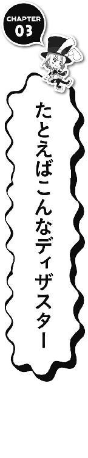
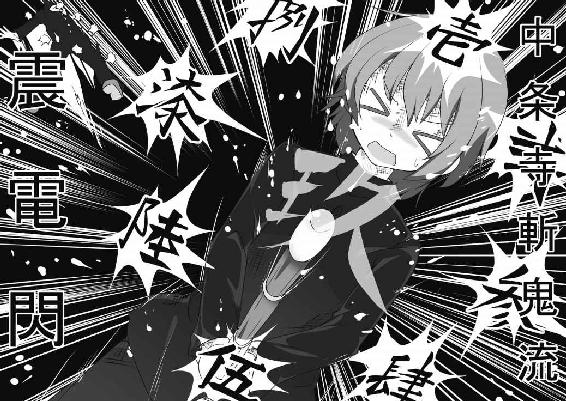
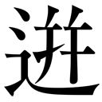

| オレ英雄伝説 ～そして彼女は変わってしまった～ (角川スニーカー文庫) | |
| 秋水 | |
| (2014) | |
オレ英雄伝説
～そして彼女は変わってしまった～
秋水

角川スニーカー文庫
本作品の全部または一部を無断で複製、転載、配信、送信したり、ホームページ上に転載することを禁止します。また、本作品の内容を無断で改変、改ざん等を行うことも禁止します。
本作品購入時にご承諾いただいた規約により、有償・無償にかかわらず本作品を第三者に譲渡することはできません。
本作品を示すサムネイルなどのイメージ画像は、再ダウンロード時に予告なく変更される場合があります。
本作品は縦書きでレイアウトされています。
また、ご覧になるリーディングシステムにより、表示の差が認められることがあります。
『機甲帝姫ブランネイジュ』プロット
広野ユータ『設定ノート34』より抜粋

魔戰紀２１６３年、帝國暦３１２年。
神聖ヴァルティニア帝國帝都ロンディニウム。
天高く聳えるバロック建築群。その大聖堂の頂上に、二つの〝影〟が立っていた。
「どうやら追手が来たようだ。神聖府親衛隊〝焰刃龍〟の連中か──」
〝影〟の一人──少年が楽しそうに囁く。
少年の名は「〝主人公（仮）〟」。
「待てッ！ 逃げおおせられると思ったかッ！ 叛帝の反逆者ッ！」
大聖堂の下から大声が轟く。見ると眼下に夥しい数の灯りが広がっていた。
神聖府が差し向けた精鋭武装親衛隊〝焰刃龍〟の一個大隊──。
「〝主人公（仮）〟！ 貴様は完全に包囲されている。無駄な抵抗をやめて投降しろ！」
「フン、無駄かどうか証明してやるよ。......用意はいいか？ ネイジュ──」
「了、マスター」
〝主人公（仮）〟の問いかけに、澄んだ小さな声が返ってきた。
もう一人の〝影〟は少女だった。漂白されたような白銀の髪。月光に浮かぶ顔は、まるで新雪のように白い。その双眸は緋紅尖晶石色と星煌翠玉色の金銀妖瞳だ。
「ネイジュ、特殊迎撃決戰兵器・起動！ 〝閃光剣〟を解放しろ！」
「了。第壱、第弐、機甲外殻・拘束解放弁、解除──」
刹那、少女の右手から眩い〝光〟が巻き起こった。
〝光〟はみるみるうちに右手の形を歪め、そしてしなやかな光鞭へと変化する。
特殊迎撃決戰兵器。
通称〝閃光剣〟！
次の瞬間、武装解放した少女に向けて一斉に熱線銃がつきつけられた。
「叛帝の反逆者め、アーケイン大猊下もご立腹だ！ 死してその罪を償うがいい！」
「罪を償うのはお前たちの方だ、帝國の犬たちめ！」
〝主人公（仮）〟が叫ぶ。強大な敵を前に、彼の言葉に迷いは微塵もない。
少女は眉ひとつ動かさず〝主人公（仮）〟に寄り添った。
彼女に恐怖はない。ただ主である〝主人公（仮）〟に従う、人の造りし魂なき存在。
「さぁ、行くぜ、ネイジュ！ パーティのはじまりだ！」
そして二人の反逆者と〝帝國〟との、果て無き戦いが始まった──。
「......広野君、何描いてるの？」
透き通るような声に、オレは妄想の世界から現実へと引き戻された。
執筆に夢中で、ホームルームが終わっていることに全く気付かなかった。
机の上に広げた〝設定ノート〟から顔をあげる。
誰だッ？ オレの神聖なる創作活動の邪魔をする輩は──。
声の主を見た──瞬間、胸がバスケットボールのように跳ねた。
「あ、いや、これは......」
しまった......このオレとしたことが、しどろもどろになってしまった。
それくらい、オレにとってその出来事はサプライズだったのだ。
「姫乃園......」
そこにあったのは、麗しのクラスメイトの整った顔だった。
姫乃園芹子──我が私立柊風学園に咲く気高き純潔の女神。
〝濡れたカラスの羽の色〟というのは、女性の美しい黒髪を形容する色名だということを、中学校の国語の先生が言っていたのを憶えている（テストには出なかった）。
彼女はまさしくその形容にピッタリな、長く黒く艶やかな髪をしていた。
そしてその日本的で清楚なイメージとまさにピッタリの、大きな瞳と端整な顔。
体の線は細く、強く抱いたらポッキリと折れそうな繊細さを感じる。
まさに深窓のお嬢様といった雰囲気の学園のアイドル──それが彼女、姫乃園芹子だ。
それにしても......。
誰もいない放課後、夕暮れの教室に二人っきり......何だこのシチュエーションはッ！
むむむっ、こ、これはもしや突発的な恋愛イベントフラグきたか!?
〝一緒に帰ろ、広野君♥〟とか〝実は前から広野君のこと......〟とか......。
好感度パラメータ★★★★アップのチャンス!?
「わぁ、広野君、絵、描けるんだ！」
彼女は机の上に広げてある、オレの〝設定ノート〟を覗きこむ。
「まぁな。いちおう、これでも漫画家志望だからな」
ちなみに正確にいうと、オレは〝漫画家志望〟ではなく〝漫画原作者志望〟だ。
さらに言うなら、漫画、小説、アニメ、ゲーム......すべてに辣腕を振るう〝天才万能創作者〟こそ、オレの目標であり将来の夢である。
「スゴイ！」
美少女が笑顔で言った。大きな瞳をキラキラと輝かせて。
「へぇ、タイトルは『きこう......ていひめ......ブランネイジュ』っていうんだ」
姫乃園芹子はノートを覗きこみ、そこに描かれたオレの創作物のタイトルを読みあげる。
オレは「ああ」と返事をした......本当は『機甲帝姫ブランネイジュ』だけどな......。
「楽しみ！ 将来、広野君の漫画が出たら、絶対買うね！」
夕日に照らされたその顔が、とびきり愛くるしい。
まるで天使──そう、光輪を纏いて放課後の教室に降りし六翼の熾天使。
「姫乃園......お前、漫画とか......読むのか？」
「うん、たまに。私が漫画読むの......変？」
姫乃園芹子はうなずくと、ふと戸惑ったようにオレの顔を覗きこむ。
「い、いや、別に変ではないが......意外だと思ってな」
オレはブンブンと頭を振る。
「姫乃園は漫画など読まないと思っていた......読むなら純文学とか、恋愛小説とか......」
「え～？ 読むよ～。『ワンピース』とか『スラムダンク』とか。面白いよね」
姫乃園がニッコリと笑って言う。
なるほど......『ワンピース』と『スラムダンク』......か。なんと絶妙な返答ッ！
決してオタク趣味でもなく、かといって完全に漫画のことを知らないわけでもない。
極めて一般的な、まさに〝サブカルに理解のある女子〟の模範解答だ。
これが例えば『上ってなンボ!!』とか『クライングフリーマン』......とかだったら、さすがのオレも引くもんな......。
「でも、このキャラクター、ちょっと......」
そのとき、ふと姫乃園が眉を顰めた。
「なんかエッチだね。そのキャラ......」
その視線の先に、オレの〝設定ノート〟があった。そしてそこには『機甲帝姫ブランネイジュ』のヒロイン、ブランネイジュのラフスケッチ（設定資料）が描かれている。
彼女は随所に露出がある（というかほとんど裸の）ボディスーツを身に纏っていた。
「......広野君って、こういう女の子がタイプなの？」
「い、いや、決してそういうわけでは......」
「不自然に胸が大きいし......それにこの服のデザイン......水着？」
「ああ、これは水着ではなく〝機甲外殻〟という強化装甲、いわゆるコンバット・スーツだ。生地は薄いが対戦車ライフルの直撃でも貫通しない強度を持つ。デザインは少々露出を増やしてサイバー・パンクのイメージを入れてみた。イメージ的にはエンキ・ビラル風というか『ブレードランナー』風の近未来ＳＦって感じか？ 『機甲帝姫ブランネイジュ』の世界〝神聖ヴァルティニア帝國〟は十九世紀の大英帝国ヴィクトリア王朝時代をイメージしてるから、個人的にはもう少しスチーム・パンク風のレトロ・フューチャーを押し出した方がいいと思っているんだが......」
「............ふぅん」
オレの説明を聞く姫乃園が戸惑い＆呆気にとられた表情になる。
はッ！ 違う!! そうじゃない！ オレの馬鹿ッ!!
「あ、い、いや、そういう設定なんだ......」
「設定......？」
「そう、漫画を描くには詳細な設定が必要なんだ。それに露出度が高いのはいわゆる〝読者サービス〟ってやつだ。間違ってもオレの趣味じゃない！ 世の中にはこういうのに食いつくファンもいるんだ。姫乃園には理解できないと思うが......」
......くッ、しまったッ!!
オレの〝魔才〟──〝空気読めない〟が発動してしまったッ!!
し、静まれ......オレの内なる異能の衝動ッ！
「そ、そうなんだ......なんか難しそうだね......」
姫乃園の口調から、潮干狩りができそうなくらいに引いているのが分かる。
こ、こいつは......完全にフラグ、へし折れたな......バッキリと......。
「で、でも広野君、物知りなんだね。スゴい」
天使はそんなオレに、なおも笑顔で応えてくれる......ひきつった笑顔だが。
たとえそれが作り笑いだとしても、彼女の優しさが、今はただ、とても嬉しかった。
「あ、そろそろ帰んなくちゃ！ ごめん」
彼女は腕時計を見て、そして慌てて踵を返す。
「漫画......できたら見せてね」
「あ、ああ、わかった。約束しよう」
「じゃあね」
そう言って姫乃園芹子は足早に教室を出て行った。香しいシトラスの匂いを残して──。
★ ★ ★
......オレとしたことが、いきなり失態を演じてしまったな。
想定外のイベント発生で錯乱してしまい、自己紹介が遅れたようだ。
オレの名前は広野雄太、通称ユータ。私立柊風学園二年、十七歳。
「あ、先輩！ ここにいたんですねっ！」
姫乃園芹子と入れ違いで、一人の生徒が教室に入ってきた。
「よかった......先に帰っちゃったかと思いましたよ」
それは一年生で後輩の中条寺周だった。
色素の薄いショートヘア、細く小柄な体格、抜群に整った中性的なルックス。
周は息を切らし、ちょこちょこ小走りでオレの席までやってくる。
一方、オレはというと、机に突っ伏してプルプルと震えていたところだった。
「......ど、どうしたんですか？ だ、大丈夫ですか!? 先輩っ！」
「くっ、静まれ......オレの破恋鼓動！」
「な、なっ......せ、先輩......それは......新たに発動した〝魔才〟ですかっ!?」
周は大きな目をキラキラと輝かしてオレを見る。
ちなみに〝魔才〟とは、人の隠された能力を引き出し、特殊能力を駆使する異能力の呼称である。この能力を発動した者は〝魔才操者〟と呼ばれ、（特に理由はないが）その力を隠し、飽くなき戦いに明け暮れる運命にある。
......ちなみにこれらはすべて、オレの考えた設定だ。妄想ともいう。
「だが、生憎これは〝魔才〟ではない。強いて言うなら〝付与能力〟......つまりこのオレの〝魔才〟の第二形態に他ならない......」
「なっ......じゃあ......もしかして先輩は、新たなるステージに......突入したんですね!?」
「......そういうことだ......フフフ......」
オレは右手で顔を覆い、腰を捻ったポーズを決めて「ドギャーン！」と口走る。
........................と、まぁ、他愛のない厨二病会話はここらへんにして、と。
「周、お前、オレに何の用だ？」
オレは改めて目の前にいる後輩に話しかけた。
「あ......いえ......別に、何の用というわけではないのですけど......」
不意に顔を赤らめ、モジモジと体を揺らす周。
「ぼ、僕、先輩と......一緒に......か、帰りたいな、と思いまして......」
周が恥ずかしそうに下を向いて呟いた。
その恥じらいの仕草は、客観的に見てもかなり可憐な少女のものだった。
う、うおおおッ!! き、貴様ッ、い、いつの間にそんな〝キュン殺〟攻撃を......ッ!?
オレは土壇場で理性を繫ぎ、踏みとどまる。
ふぅ、あぶないあぶない......危うく体ごともっていかれるとこだったぜ......。
そう......恐らく、コイツの外見を初めて見る者は、必ず同じ勘違いをするだろう。
外見はボーイッシュな妹属性の美少女──それがコイツ、中条寺周。
コイツのせいで、オレはクラスメイトの野郎どもから毎日のように「悪いんだけど......彼女、紹介してくんない？」とか「お前、あんな可愛い娘とつき合ってんのか!? フザけんな！」とか「お前、もしかして妹フェチ？」とか言われ、ウザいことこの上ない。
だァが、しかァーし！ 惑わされてはいけないッ！
コイツは、オレの〝彼女〟ではなく、単なる〝後輩〟だ！
そしてコイツは〝妹〟ではなく〝弟分〟だ！
さらに今、コイツが着ているのは〝セーラー服〟ではなく〝学ラン〟だ！
そう、コイツは──〝男〟なのだ!!
正真正銘、間違いなく〝男〟！ 染色体ＸＹ！
〝なぜ断言できるか〟だって？......フッ、簡単なことだ。
オレと周は家が近所で昔からよく一緒だった。いわゆる幼馴染というやつ。
そして小さいころは一緒に風呂に入ったこともある仲。
そのときにしっかり確認したのだ！
そう、こいつにはちゃんとついている！ 証明完了ッ！
「......せ、先輩、一緒に帰りましょう！」
可憐な顔でニコッと笑う周......どう見ても美少女ですありがとうございました。
だが気をつけろッ！ 惑わされるなッ！
こいつにはちゃんとついているのだ！ とってないと思うッ！......多分。
「ど、どうしたんですか？ 先輩......」
「......いや、今更ながら、どうしてお前は女じゃないんだろうと思ってな。そんなに整った顔してるのに、もったいない」
「えっ......」
オレのマジレスに、周は驚いた顔になった。
「そ、そ、そんなこと......言わないでくださいっ！」
そして真っ赤になって、悲しそうな泣き顔になる周。
「僕......これでも男ですからっ......そういうこと言われると......その、傷つきますっ！」
「......そ、そうか、すまん。どちらかというと誉め言葉のつもりだったんだが......」
オレは、どー見ても美少女にしか見えない美少年の肩に手を置いて謝る。
「......その......ぼ、僕もいろいろと悩んでるんです。体のことで......」
周は少ししゃくりあげるように喉を鳴らし、上目遣いでオレを見る。
「その......ぼ、僕......この年でまだ、ヒゲもワキ毛もスネ毛も生えないし......」
「なんだ、毛の悩みか？」
「毛だけじゃないですっ！......声だってなんか女の子っぽくて、変声期を華麗にスルーしちゃってるっぽいですし。そ、それに......」
「それに......なんだ？ も、もしかしてお前、まさか......男なのにアレがあるのか？」
「ありませんっ！」
周が顔を真っ赤にし、目尻に涙を溜めて全力否定する。
「先輩も知ってるでしょ？ この容姿のせいで子供のころから女の子みたいに育てられて......男の子向けのアニメや漫画は、ほとんど見せてもらえませんでした」
周が、潤んだ瞳でオレに訴える。
「僕も先輩みたいに、男同士で〝オタク〟談議とかしてみたいんです！ 『エバンゲリオン』とか『ガンダム』とか......ロボットの話をしたいんです！」
「ちょちょちょいまてッ！ 何度言ったら分かるッ!? 〝エバ〟じゃなくて〝エヴァ〟だ！ 〝ヴ〟だ〝ヴ〟！ 唇を嚙めッ！」
そこは譲れないッ！
「それにガンダムはロボットじゃなくモビルスーツだ！」
「あ、は、はいっ......すみませんっ！」
オレの剣幕に、周は涙を反射的に止め、背筋を正して返事をする。
「......周、お前とは以前、背徳の饗宴をしたことがあったな？」
「は、背徳の饗宴......？ あ、はい、先輩につれていってもらった......春コミの帰りのことですよね？ あの、その......コンパというより......単なる夕食会......でしたけど......」
そう、確かそのときも周が「オタクになりたい」と言い出したため、オレはコイツを東京ビッグサイトに連れて行ったのだ。そのとき会場で知り合った女子数人と、軽くファミレスで夕飯を食ったのだ。......まぁ、女子たちの目当ては完全に周だったんだが。
「あのとき、ひょんなことから場の話題が『機動戦士ガンダム』のことになったのを憶えているか？」
「あ、は、はい、憶えてます。彼女たち〝ガンダム大好き〟って言ってました」
そうなんだ、そうなんだよ。
彼女たちは確かに〝子供の頃からガンダムが大好きで、はっきり言ってオタクレベルです。好きなモビルスーツはズバリ！ シャアザクですぅ～〟......とか言ったんだ。
だからオレはガンダムの話をした。
ジオニック社とツィマッド社のモビルスーツデザインにおけるコンセプトの違いについてとか、その技術のノウハウと系譜がどのようにアナハイム・エレクトロニクスの後継機に受け継がれているかとか、ムーバブル・フレームの有効性、ミノフスキークラフトの原理、『ガンダム・センチネル』の話や、カトキハジメのデザインの話まで......。
......と、まぁこんな調子で小一時間ほど熱弁したところで、話を聞いていた女子たちは、申し合わせたようにそそくさと席を立って、結局そのまま帰ってはこなかった。
「あの子たち......ちょっと失礼だったと思います！」
「別に女のことなどどうでもいい。いいか、オレの言いたいことは、一つだけだ！」
オレは周に正対し、大きな瞳をまじまじと見て言い放つ。
「〝オタク〟への道は、厳しく、そして険しい！ 生半可な覚悟では通れぬ道だ！」
オレはビシッとポーズを決める。
「いいか周ッ！ 真の〝オタク〟とはッ！ ただひたすらに研鑽し、飽くなき究極の高みを目指す者のみが名乗ることを許された称号ッ！ 安易な〝萌え〟や〝エロ〟などに迎合することのない、誇り高き精神なのだッ!!」
オレはいつもの〝魔才〟──〝空気読めない〟を全開発動して叫ぶ。
「〝オタク〟──それは孤高の戦士ッ！ 件の女どもや、ちょっとアニメをカジった程度のニワカとは訳が違うッ!!」
オレは立ちあがり、机を叩いて熱弁する。
......つーかあの女どもめ......そもそもお前らが〝ガンダム大好きです～〟って言ったから、わざわざこっちから話を合わせてやったんじゃないか！
何が〝ガンダム大好きです～〟だ！ 軽いッ！ ヘリウムガスよりも軽いぞ！
お前たちの〝好き〟は軽いんだよ！ ニワカオタク共めッ！
「シャアは赤い」「通常の三倍」程度の聞き齧った知識で〝ガンダム好き〟を名乗るなッ！ ザクⅡの型式番号も言えないで〝ガンダム〟を語るんじゃあないッ！
「そうッ！ そしてその真の〝オタク〟こそが、このオレ！ 将来、日本のサブカルチャーの歴史を変える男！ 天才クリエイター広野ユータなのだあああああああッ！」
「先輩......ステキですっ......」
オーディエンスの周は、目をキラキラさせてオレを見ている。
ふふふ、感動に咽び泣くがいい......！
「僕も先輩のような、カッコイイ〝オタク〟になりますっ！」
周はオレの両手をギュッと握り、感動で目を潤ませながら熱っぽく言い切った。
「先輩っ......僕、不肖の弟子ですけど......ご指導ご鞭撻よろしくお願いしますっ......！」
「ふッ、周、〝オタク〟とは、これすなわち煉獄の炎に焼かれる戦鬼なり。果て無き修羅の道を歩む覚悟が、お前にはあるのか？」
「は、は、はいっ......！」
周は一瞬躊躇しつつも、決意を秘めた凛々しい表情でオレを見る。
「ふッ、オレの試練は厳しいぞ......ヘタすると死ぬかもしれん」
「が、が、が、がんばりますっ......！」
「よく言った！ それでこそ、我が弟子！ では行くぞ、周！」
「あっ、先輩、待ってください！」
颯爽と席を離れ、教室の出口へ歩いていくオレ。周があわてて後を追ってきた。
「き、今日は集まるんですか？ 例の場所に」
「無論だ。今日は特別に報告したいことがある」
オレは教室のドアを閉めながら、ニヤリと笑って言った。
「〝閃光の旅団〟臨時連絡会、全員召集だ。時間がない、急ぐぞ！」
★ ★ ★
周と校門を出るとき、オレはスマートフォンを操作し、メールの内容を確認した。
「......どうしました？ 先輩」
「いや、別に──」
オレはメールの文面を隠すように、スマホを尻ポケットにしまう。
校門近くに立つ柱時計を見あげると、時刻は夕方の四時半──あと一時間半か。
「先輩、なにソワソワしてるんですか？ 行きますよ！」
「あ、ああ」
オレは愛車の原付を手で押しながら、夕暮れに染まりつつある通学路を歩き出した。
★ ★ ★
オレたちの通う私立柊風学園高校（通称柊学）は〝美織市〟という町にある。
美織市は、かの名高き〝鶴舞う形のグンマー県〟の南東に位置する地方都市だ。
その市街地には、昔ながらの商店が軒を並べている。
オレが幼稚園の頃はかなり繁盛していたのだが、最近は郊外にオープンした〝リヲン〟という大型ショッピングモールに客足を奪われ、すっかりシャッター街になってしまった。
柊学の生徒の大半も、放課後は〝リヲン〟で遊んでいる。しかしオレたちオタクにとって、『スターバックス』でトールラテを飲んだり『ＧＡＰ』でショッピングしたり『シネコン』で映画を観るなんて、そんなリア充な放課後もっての外だ。つーか、爆発しろッ！
......そんなわけでオレたちの溜まり場は、主にこの寂れた駅前商店街なのである。
そんな商店街の一角にある、寂れた喫茶店──〝紗紅麗舞〟。
カランコロンとベルを鳴らし、オレと周が店内に入る。
定位置のテーブル席には、既に〝旅団員〟の二人が座っていた。
「遅い、五分三十二秒の遅刻ですよ、旅団長──」
「すまん。これで四人全員揃ったな」
オレと周はいつもの席に座るやいなや、〝旅団員〟全員に向かって言い放つ。
「突然、呼び立ててすまん。これより〝閃光の旅団〟の第二十四回連絡会を行う」
そう──〝紗紅麗舞〟に集まった我々〝旅団員〟。
我らは通称〝閃光の旅団〟と呼ばれる秘密サークルである。
ちなみにこの超イケてるサークル名はオレが命名した。
メンバーはまず、創設者であり主宰者であり〝旅団長〟であるオレ、広野ユータ。
〝旅団長〟であるオレの主な担当は世界観設定とシナリオ。そして自らイラストや漫画も描くオールラウンダー。人呼んで新進気鋭の〝天才万能創作者〟（自称）。
「今日の議題はズバリ、コレだ」
オレは鞄から〝設定ノート〟を出す。
〝設定ノート〟──見た目はごく普通のＢ５判の大学ノート。
しかしここにはオレの考えたストーリーやキャラクター、設定が詰まっている。
そう、こいつはオレのネタ帳。オレが今までに蓄積したアイデアがすべて描かれた、まさに天才高校生クリエイター・広野ユータの血と汗と涙の結晶。オレの宝物なのだ。
オレは小学校時代からこの〝設定ノート〟に、自分の作品の構想を書き綴ってきた。
お陰で今、ここにある〝設定ノート〟はナンバー34。つまり34冊目を迎える。
「諸君ッ、喜びたまえッ！」
オレはテーブルをバンと叩いて皆に言い放つ。
「ついに新プロジェクトのキック・オフの刻がきたッ！ 構想一年半ッ！ この『機甲帝姫ブランネイジュ』を、我々の力で最高のコンテンツへと育てるのだッ！ それはまさに日本のサブカルチャー史に残る、新たな衝撃となるだろうッ！」
オレは拳を握りながら声を張りあげ、皆の顔を見る。
「コミックッ！ ラノベッ！ ノベルゲームッ！ 多岐にわたるメディア・ミックスを同時多発的に立ち上げ、この『機甲帝姫ブランネイジュ』を全世界に配信するのだ！ 名づけて、『雪姫計畫』!!」
ちなみに〝計畫〟の〝畫〟が旧字体なのがポイントだッ！
「旅団長」
オレの熱弁をブッたぎるように、向かいに座る男が言葉を挟んだ。
テーブルにタブレットＰＣを広げた、背が高く顔色の悪い銀縁メガネの糸目系男子。
「何だッ？ 旅団員〝スメラギ〟！」
「能書きはいいので、早くその設定資料とやらを見せてください」
む、相変わらずクールでドライな奴だ。
「わかった、慌てるな。フフフ......今からたっぷりと見せてやろう......！」
オレは堪え切れずに漏れる笑いを嚙みしめ、皆を見やって呟く。
そして手元の〝設定ノート〟を厳かに開いた。
「さぁ、見るがいいッ！ 我が最高傑作、『機甲帝姫ブランネイジュ』の全貌をッ!!」
「........................」
喫茶店の中に、長い沈黙が流れていた。
フフフフ......フハハハハハハハハハハハハ!!
どうやら、あまりの衝撃に、皆、言葉を失い茫然としているようだなッ！
無理もない......はっきり言ってこの『機甲帝姫ブランネイジュ』は、オレの書き溜めた〝設定ノート〟の作品の中でも白眉。まさに最高傑作だ。
その潜在能力は、次世代の新潮流を作る力を秘めていると、オレは確信している。
実は以前にも、オレはこの〝閃光の旅団〟の会議に二つの作品を披露していた。
一つは『サイキック★ベビードール せりりん♡』という超能力美少女による学園ドタバタ・ラブコメで、もう一つは『剣風伝姫・斬鬼』、という和風異能バトル物。
どちらも甲乙つけがたい傑作だったが、やはり今回の『機甲帝姫ブランネイジュ』こそが最高傑作。この天才クリエイター広野ユータのデビュー作にふさわしい！
「どうだ？ 周、素直に驚いていいんだぞ!?」
オレは隣にいる周にリアクションを求める。
「あ、は、は、はい！ す、すごいです！ お、面白そうですっ！ さすがは先輩っ!!」
周は慌てた様子で、派手に声を昂ぶらせる。
フハハ、こいつめ。驚くことも忘れてしまうとは、オレの設定資料の内容がよほどの衝撃だったと見える。フフフ、照れるぜ、よせよ。
「旅団長」
ふと、ノートを見ていたスメラギが小さく口を開いた。
おっと、そういえばコイツの紹介を忘れていたな。
コイツは〝スメラギ〟──オレの中学からの親友。コードネーム〝皇帝〟。
旅団の技術担当。美大生も舌を巻く画力を持つ天才イラストレーターでもある。
〝ピクシブ〟の閲覧者数アベレージが三万を超える、その筋ではかなり有名な絵師だ。
本名は......本人が「言う必要はありません」と言ってるから、あえてここでは書かない。
まぁ、オレはいつもコイツを〝スメラギ〟と呼んでるし。
「いくつか質問があるのですが、よろしいですか？ 旅団長」
挙手をするスメラギに対し、オレは「うむ、許可しよう」と発言を促す。
「この、主人公の〝ブランネイジュ〟の通り名──〝純白の氷雪の異名を持ち、光を自在に操る高貴なる女アンドロイド〟という点ですが──」
「何だ？ オレのネーミングセンスに何か問題があるとでもッ？」
「いや、この〝アンドロイド〟という表現は少々誤解を生むと思いましてね──」
スメラギが細い中指で、銀縁メガネをクイッとあげて言う。
「そもそも〝アンドロイド〟という言葉は男性型人造人間のことを指すＳＦ用語。ちなみに女性型は〝ガイノイド〟です。〝女アンドロイド〟では、まるで〝デビルマンレディ〟みたいなものです。文法的にオカシイのではないでしょうか」
くッ......出たなッ！ こいつの〝魔才〟！ 名づけて〝融通利かない理系脳〟！
「し、し、知ってるわッ、そんなことくらいッ！」
......こ、これはだな、〝ガイノイド〟という用語が一般的でないから、あえて〝アンドロイド〟というメジャーな言葉を選んだだけだ。あえてな。
「た、たしかに〝ガイノイド〟って言葉、初めて聞きます。先輩の言うとおり、馴染みのある名前を使った方がいいと思います！」
横からおずおずと周が手を挙げて発言する。おっ、ナイスフォロー！
「〝キララ〟さんもそう思いますよね？」
周は、向かいの席にいるもう一人の旅団員に同意を求める。
「............」
しかし〝キララ〟と呼ばれた女生徒、その質問をまさかのスルー。
「喋れよッ！」
激しいツッコミにも女生徒は一切反応しない。まァ、彼女の場合、これが普通なのだが。
彼女は旅団の紅一点、コードネーム〝星〟。公的ペンネームは〝キララ〟。
黒髪眼鏡のいかにも文系女子然とした彼女は、ほとんど口をきかない無表情キャラ。
オレは未だかつて彼女の声を聞いたことがない。
彼女と親しい周の話では、彼女の口から聞いたことのある言葉は、たった二つ。〝しまった〟と〝チェックメイト〟だけらしい......ってそれ、どこの銀河帝国の提督だ？
ちなみに彼女は旅団の音楽担当。彼女の演奏の腕は確かにプロ級。そして作曲もできる。ニコニコ動画の評価者の間では、彼女の曲は〝転調・移調が複雑に絡み合う恐ろしくマニアックな作風〟......なんだそうだ。
「............」
キララは沈黙のまま、手に持ったミルクティーの満たされたカップを見つめている。
「あ、どうやらキララさんも同意見のようです」
周......お前、こいつが何を言ってるのか分かるのか？
あ、そうだ、紹介を忘れていた。ここにいる中条寺周も一応、旅団員だ。
こいつは先月に入団した新米団員で、コードネーム〝節制〟。
特に公的なペンネームはないから、皆からはそのまんま本名の周で呼ばれている。
──以上、総勢四人。
オレ、周、スメラギ、キララ──このメンバーが、オレが集めたスペシャルチーム。
人呼んで〝閃光の旅団〟。
そして団の目的は......もうお分かりだろう。
ゲーム、アニメ、マンガ、あらゆるエンターテインメント・コンテンツに対し、かつてない衝撃を巻き起こし、革命を起こす在野の天才高校生クリエイター集団（俺認定）。
発足より半年、定期的にここ〝紗紅麗舞〟で会合を持ち、今までに同人誌を二冊、ノベルゲーを一作品、コミケで発売し、ニコニコ動画で三曲のオリジナル曲を発表している。
......まぁ、正直、売れ行きは決して芳しいものではない、が、目的は金じゃない。
大器は晩成す。千里の道も一歩から。燕雀安んぞ鴻鵠の志を知らんや！
「旅団長、続いての質問ですが──」
スメラギがオレのラフスケッチを眺めながら、再び挙手をする。
「なんだ」
「このヒロインの必殺技......〝インフィニット・シャイニング・ブレイク〟っていうのは、いったいどういった技なのですか？」
むッ！......なかなか痛いところをつくな〝融通利かない理系脳〟！
やっぱバトルモノのヒロインには、それらしい名前の必殺技が不可欠だと思ったのだが......名前だけ先に決めて、その能力や効果は、まだ全然考えてなかったのだ。
とりあえずいまのところの構想は〝光を操るブランネイジュの最終奥義。夥しい熱量と光量を持つエネルギー波を収束・増幅して放つ大必殺技。相手は死ぬ〟......ってかんじだ。
「......なんか光がビカーッ！ と集まって、ドバーッ！ と放出されて、そんでもってドカーン！ と......そんなかんじか？」
「......まぁ、別にいいのですが。もし決まったら早めに設定を教えてください。せめてエネルギーの原理やギミックなど、ＶＦＸを作るときに必要ですから」
「わ、わかった。次までには考えておく」
「せ、先輩っ！」
立て続けに、今度は周が手をあげて質問する。
「この......〝主人公（仮）〟って、何ですか？」
ああっ、周、お前も痛いところをつくなァ......。
「いや、それはだな、イマイチ〝バシッ！〟としたネーミングが決まらなくてなァ......」
ストーリーにおいて主人公の名前はかなり大切だ。馴染み深く言いやすく、それでいて個性的でなくてはいけない。相棒でヒロインである〝ブランネイジュ〟の方はすんなりと決まったのだが、主人公の名前がなかなか思いつかないのだ。
「僕、早く知りたいです！ カッコイイ名前になるんですよね？ 楽しみですっ！」
周が目をキラキラさせ、ワクワクした様子で言う。
うむ、素直でよろしい。
「最後にもう一点」
間髪容れず横からスメラギが発言を挟んでくる。
「なんだ？ まだ何かあるのかッ!?」
「この『機甲帝姫ブランネイジュ』というタイトル、あんまりではないですかね？」
「む、何か問題があるのか？」
「問題というより......少々インパクトが足りないのは否めないですね」
なに？ インパクトが足りない......だと？
「なんだか80年代のロボットアニメのようなタイトルで、新しさがないですね」
......確かにオレは、自他ともに認める〝80年代漫画オタク〟である。
もちろん現在連載中の漫画や放映中のアニメも好きだが、この広野ユータの〝オタク〟の血と肉を構成するのは、やはり80年代の少年漫画。オレの遺伝子の99・89％は『ジャンプ』と『サンデー』と『マガジン』で形成されていると言っても過言ではない。
「ちなみに最近の流行のタイトルは......こんなかんじのが多いですね」
言いつつスメラギは、手にしたタブレットＰＣを操作する。
ディスプレイには、今月のラノベの新刊ラインナップが表示されていた。
そこには萌え萌え美少女のイラスト。そして──。
〝オレが異世界に行って大量の妹たちとハーレム状態っつーことで、人生ヌルゲー状態なんだが、愛があれば問題ないですが、何か？〟
......というタイトルがついている。
「う、さすがにそういう系のタイトルは......勘弁して欲しい......」
オレは逡巡して言葉に詰まる。
「というか、そもそもこの作品は異能バトル物の異世界ＳＦだぞ？ しかもかなりハードでシリアスなハイ・ファンタジーだ。学園ラブコメ物ならともかく、こういうのは......ちょっと厳しくないか？」
「では、こういう手もあります」
再びタブレットＰＣのディスプレイをフリックするスメラギ。
「主にゲームのタイトルに多い傾向ですが、〝〈難しい漢字〉＋の＋〈カタカナ〉〟というパターンはどうでしょうか？」
む、それはどういう......？
「最近だと『神撃のバハムート』や、『翠星のガルガンティア』、『極黒のブリュンヒルデ』、『蒼き鋼のアルペジオ』など......これなら多少、シリアスな雰囲気も出せます」
「む、確かに。あれか......『逆襲のシャア』とか『閃光のハサウェイ』とかか」
「微妙にたとえが古いですが、つまりはそういうことです」
オレはフム、と少し思索を巡らした。
「じゃあ、〝機甲帝姫のブランネイジュ〟......とか？」
「......それ、変わってないですよ。〝の〟つけただけじゃないですか」
「〝帝姫のブランネイジュ〟......ってのはどうだ」
「語呂が悪いですね、もっと口に出して気持ちいいかんじにしないと」
「じゃあ、〝絶零のブランネイジュ〟」
「ほぅ......旅団長にしては及第点です。〝絶零〟って言葉がまったく意味不明ですが、響きは悪くないと思います」
なるほどッ！ よし、ノッてきたッ！
オレたちは、とりあえず〝ナントカのブランネイジュ〟というタイトルの〝ナントカ〟という漢字部分を考えるために案を捻り出しはじめた。
なるべく難しく勢いがあってカッコいい漢字二文字......濁点とか入っていると尚良し。
〝絶影〟〝龍撃〟〝魔刃〟〝焰獄〟〝斬戟〟〝贖罪〟〝暴発〟〝完熟〟〝情弱〟〝壇蜜〟。
......................................................なんか最後の方に、変なの混じってないか？
「あ、あの......先輩......〝闘魂のグレートサンダー〟ってのはどうでしょうか？」
横から控えめに手を挙げ、周が発言する。
「なんだよそれ。新手のプロレスラーのリングネームかっつーの」
「じ、じゃあ......〝惨劇のプロムナード〟というのは......？」
「血生臭ッ！ 大量猟奇殺人事件の予兆ッ！」
「では......〝新橋のサラリーマン〟」
「ほろ酔い気分でインタビュー!?」
「〝粗挽のシャウエッセン〟」
「わぁ皮パリパリ、って馬鹿ッ！」
「〝蒟蒻のバリケード〟」
「......もういい、お前は黙ってろ、周」
オレは目頭に指をギュッと押し当て、ハァ～と深いため息をつく。
「ご、ごめんなさい......僕、こういうのやっぱり駄目です......センスがないのかなぁ」
周は泣き顔になり、しゅんとして下を向く。
い、いや、責めてるわけではないのだが......。
「......わかった、タイトルは保留だ。一応、今は便宜上『機甲帝姫ブランネイジュ（仮）』と（仮）をつけておくこととする。次の定例会までの宿題だ」
「なんだか（仮）ばかりですね」
「うるさい。開発中とはそういうものだ」
言いつつオレは愛用の懐中時計を内ポケットから取り出し、時刻を確認する。
時刻は五時半を回っていた。うむ、そろそろ潮時か──。
「......実は諸君に、もうひとつ報告があったんだ」
テーブルに広げた〝設定ノート〟をパタンと閉じ、オレは立ちあがる。
「報告......何ですか？」
周が聞き返す。オレは皆に向かってウムと大きく頷いた。
「実は、我ら〝閃光の旅団〟に、新規旅団員が加盟することになった」
「ほ、ホントですか!? どんな人ですか？ 男の人ですか？ 女の人ですか？」
「恐らく......女......だと思う」
オレは言葉に詰まる。実は......よく分からない......。
なにせオレも、彼女にはまだ会ったことがないのだから。
「詳細は追って報告する。まずは今日の連絡会はこれにてお開きだ。〝閃光の旅団〟各員、来週までにより一層の研鑽を積め！」
オレは緊張で渇いた喉を、氷が溶けて薄くなったアイスコーヒーで潤した。
★ ★ ★
彼女の名前は〝寧樹〟といった。
その名前が本名なのか、はたまたＨＮなのか、分からない。
それどころか年齢も職業も住んでる場所も、もしかすると性別さえも不明だ。
何故なら......そう、彼女とオレの関係は〝ネトモ〟。つまりネットの友人だからだ。
寧樹とは、かれこれ四年ほどの付き合いになる。
知り合ったのは、当時、オレが活用していた創作文芸サイト。作家や漫画家、イラストレーターやゲームクリエイターを夢見る、いわゆる〝ワナビ〟の集まる場所だ。
そこでオレは何作かのラノベのプロットやゲーム企画書を発表し、創作に対する熱い議論をしていた。彼女がサイトにやってきたのは、そんなタイミングだった。
〝寧樹〟は駆け出しのプログラマーだと自己紹介した。
サイトにやってくる〝自称プログラマー〟という肩書の人間ほど胡散臭いものはない。
妙に偉そうにカキコする奴に限って、詳しく話を聞いてみると、まともにコードも書いたこともないド素人でした～......というオチだったりすることは日常茶飯事だ。
しかし〝寧樹〟は本物だった。
むしろ彼女は〝天才〟をつけた方がいいほどのスーパープログラマーだったのだ。
Ｃ言語、Java、PHP、Python、Ruby......ほぼ全ての言語を超高度に使いこなすスキル。
またゲームデザインのセンスも抜群で、その指摘も正確かつ現実的。
サイトに降臨して一か月と経たず、彼女は誰もが羨望してやまない〝神〟となった。
そしてオレは確信した。
〝天才万能創作者〟であるこのオレにとって、彼女は必要不可欠。
彼女こそオレの片腕、終生の相棒となる存在──ルパン三世にとっての次元大介。ワイアット・アープにとってのドク・ホリディ、シャーロック・ホームズにとってのジョン・ワトソン、劉備にとっての諸葛亮。コブラにとってのアーマロイド・レディ。
〝寧樹〟と共に、オレは世界最高のクリエイターを目指す！
そう決意した日から、オレは彼女に自分の作品を送付し、強引なアプローチを繰り返した。それこそ何十回も。そのほとんどは無視されたが、オレは決して諦めなかった。
何度も何度も、俺の熱いラブ・コールは続いた。
そして苦節半年、オレのメールアドレスに一件のメールが着信した。
「ユータ、君の情熱に負けました。一緒にがんばろう」──と。
オレはついに〝寧樹〟の相棒として認められたのだ。
その日から、メールやＳＮＳを使ったオレと寧樹のネトモ関係が始まった。
サイトにカキコするときのクールな口調とは対照的に、メール文面から受ける〝寧樹〟の印象は、どこにでもいるごく普通の女の子だった（......ネカマではないと思う。多分）。
空気も読めるし、聞き上手でユーモアもある。おまけにオタク趣味にも精通し、マニアックな話題にも平然とついてこられる彼女に、オレはいつの間にか夢中になっていた。
そしてオレは、寧樹に色々な話を熱く語った。
〝オタク〟としての気概──。
〝80年代熱血少年漫画〟への熱い想い──。
そして......天才クリエイターになりたいという、将来の夢──。
そのすべてを彼女は決して馬鹿にすることなく、真摯に聞き、受け止めてくれた。
今、思えば、オレの〝魔才〟──〝空気読めない〟を最初に無効化した絶対的能力者こそ、彼女だったのかもしれない──。
──まだ顔も見たことがない相手なのに。
オレは、いつの間にか、彼女のことを──。
〝紗紅麗舞〟を出ると、日が傾き、あたりは夕日の赤に染まっていた。
手元のスマホを見る。一通のメールが着信していた。
オレはオンボロスクーター──愛機〝シュトルムハーゼ〟に火を灯す。
待ち合わせ場所であるＪＲ美織駅は、ここからすぐの市街地の中心にある。
時刻は十八時五分前。駅のバイク置き場に愛機を止め、オレは南口改札へと走った。
走りながらスマホを操作し、さっき着信した寧樹からのメールに返信をする。
う、しまった──。
焦ったせいで、誤変換したまま中途半端に返信してしまった......。
オレはスマホをポケットにしまい、改札前でキョロキョロとあたりを見回す。
改札前に一人の少女が立っていた。
黒く長い髪を後ろで結ったポニーテール。
タータンチェックのプリーツスカートと白いシャツ。知らない学校の制服だ。
そしてスタイルの良い肢体は、彼女の美貌を容易に想像できるものだった。
間違いない──彼女だ。
〝寧樹〟──。
破恋鼓動が、ドクンと跳ねた。シャットダウン寸前の最大出力。
ドキドキと心臓が亜光速でリズムを刻む。体温が急上昇し、背中から汗が吹き出す。
こ、こんな感覚、生まれて初めてだッ！
くっ............バ、バカなッ......。
オレとしたことが......これじゃ、まるで軟派なラブコメ主人公みたいじゃあないかッ!?
落ち着けユータ。お前はそんなキャラじゃあないだろう！
どんな逆境や強敵を前にしても、口元に笑いを絶やさぬ熱血バトル漫画の主人公──。
それがこのオレ、広野ユータじゃなかったのか？
オレは勇気を奮い立たせ、彼女への一歩を踏み出した。
少女は後ろを向いていてオレに気付かない。顔は見えなかった。
オレはカラカラに渇いた喉を必死に絞り、彼女の名前を──呼んだ。
「〝寧樹〟──」
その刹那、カッ──と閃光が周囲に満ちた。
世界がフラッシュアウトする。
それはあまりに突然の衝撃だった。
周囲に満たされた閃光に、視界が一瞬で真っ白になる。
「うッ──!!」
オレは軽い眩暈とともに、必死に足を踏ん張り、よろけて倒れこもうとする体を支える。
そして霞む目を擦り、なんとか視力を回復させる。
「なッ──!?」
そしてオレは、信じられない光景を目の当たりにした。
世界が──止まっている──!?
美織駅はモノクロームの世界となっていた。色のない白黒映画のような風景。
「な、なんだ!? 何が起きたんだ!?」
つい今さっきまで、帰宅時の学生や会社員たちが、まばらに構内を行き交っていたはずだ。しかし今、駅に人の気配は消え、周囲は無人となってしまっている。
キインと耳が痛いほどの沈黙。まるで閉鎖空間。断絶された鏡の中のような世界──。
その世界に、オレだけが取り残されてしまっている──。
「あ、そ、そうだ！ ね、寧樹は──!?」
オレは数秒前までの目的を思い出し、ハッと息を飲んだ。
オレの目の前にいたはずの少女──寧樹はどこに行った!?
キョロキョロ周囲を見回す。しかし麗しい後ろ姿は、どこにもなかった。
マジかよ......まだ彼女と会話もしていない。それどころか顔も見てないっていうのに！
いったい、どうなっているんだ？
オレは騙されているのか？ ドッキリか何かか？
いや......違う......！
これは......もしかして......ア、アレか......？
もはやラノベだったらお馴染みとなった、物語の導入パターン──。
〝異世界に迷いこんじゃいました〟ってヤツか......!?
「ぴんぽんぴんぽーん♪」
「どゥあッ!!」
突然、ぱんっ！ と背後で破裂音が響き、オレは口から五臓六腑が飛び出るほど驚いた。
その破裂音はクラッカーだった。......そう、パーティのサプライズに鳴らすアレ。
そしてそのクラッカーを持って、オレの背後に立っていたのは──。
美少女だった。
「な、なんだッ!? なんなんだ、お前はッ!?」
オレは頭に被った紙吹雪、赤や青のテープをそのままに、へたりこみながら叫ぶ。
「よーこそ、アナザー・ディメンショ～～～～ン！」
少女がキラキラと目を輝かせ、オレを見つめて意味不明な言葉を叫ぶ。
ピンクプラチナの髪の、大きな目をした美少女。
歳はオレよりも若い。中学生......いやひょっとすると小学生か。
しかも少女は、かなり不思議なドレスを着ていた。
フリフリしたレースやフリルやリボンに飾られた華美な洋服。いわゆるロリータ・ファッションだが、色調はゴスロリ風の黒ではなくシルク地のシルバー。
そして頭には、シルクハットとバニーガールのような兎の耳がついている。
銀色のウサギ──それがオレが彼女に感じた第一印象だった。
「何者だお前はッ!? ここはどこだ!? 寧樹は......寧樹はどこに行ったッ!?」
オレは矢継ぎ早に頭に浮かんだ疑問を銀色ウサギにぶつける。
「あ、ごめん、ちょっとシャラップ──」
しかし銀色ウサギはオレの怒りを華麗にスルーしやがった。
「〝Ｍ．Ａ．Ｃ〟応答せよ！」
少女は耳につけたヘッドセットで、突然何やら交信を始める。
「こちら〝ポーバル・バニー〟。無事〝試練場〟へのダイバーダウンに成功。現在、目標地点に異相結界を展開中」
「............おい」
「でも出現座標にエラーがあったみたいです。オムファロス点の観測を再計算願います。こちらの時刻は現地時間で七月八日、午後六時〇三分──」
「......おい！」
「あ、異相結界展開時に現地サンプルの捕獲に成功。不確定名〝友好的な人型の動物〟」
「おいッ!!」
「あ、はい、今、取り込み中なんですが......何ですか？」
「何ですかじゃあないッ！ 何だ？ 何者なんだ？ お前はッ！」
ようやく銀色ウサギはオレの方を向いた。そしてニコッと愛くるしい笑顔を向ける。
「その質問に答えるのは難しいですね～。でも、特別にちょっとだけ教えてあげましょう。物理学的説明と文学的説明、どっちの説明が聞きたいですか？」
「何？」
「物理学的説明or 文学的説明！ あ、〝厨二的説明〟でもいいですよ！」
「え？ あ、う、じゃあ〝厨二的説明〟でお願いします......」
その答えに銀色ウサギはニコリと笑う。そしてビシッと荒ぶる厨二のポーズをとった。
「ふっふっふ、では厨二的に自己紹介しましょう。我は闇と混沌を破壊せし者。光輪を纏いて下界に降り立ちし片翼の大天使。あるいは唯一絶対存在の調停者にして使徒！」
う、うわぁ......カ、カッコイイ......。
意味わかんないけど......。
「まぁ、つまるところ、私は......よーするに......〝神〟なのです」
「はぁ......？」
「あ、これはあくまで君たちの世界での俗称ですけどね。あ、どうですか？ この格好、カッコイイっしょ？ ＣＯＯＬ！ ＣＯＯＬ！ ＣＯＯＬ！ ＣＯＯＬ!!」
そう言って〝神〟を名乗る美少女は、フリフリしたスカートを揺らしてポーズをとる。
「だって～、ふつうに神様っぽい姿で登場してもインパクトないじゃないですか～。だからわざわざ用意したんですよ、このコスチューム。だってホラ、私〝神〟だから。いわゆる〝全知全能〟的な？」
......なんか頭が痛くなってきた。
「......で、ここはいったい何だ？ 不思議時空か？ バイストン・ウェルか？ 異次元世界ポドリムスか？」
「おおっ、その発想、そしてその順応性！ イイですねー！ ナイスですねー！」
にわかに美少女がオレの発言に食いつく。そして何やらウンウンと考え事を始める。
「ここは私が創った暫定空間──異相結界です。君がいた世界は、別次元でちゃんと運営されてるから、ご安心を～」
その言葉を聞いて、オレは少しだけ胸を撫で下ろす。
よかった。寧樹は消滅したわけではないようだ......。
「で、その〝神〟が......この世界に何をしに来た？」
俺はコホンとひとつ空咳をして、目の前の自称〝神〟に聞く。
「えー、〝神〟がすることといったら......ひとつだけでしょ？」
銀色ウサギが頭をかいてバツが悪そうに、オレの顔色を窺う。
「......何だ？」
「ででーん！ 世界をなくしちゃうことでーす！ デストローイ！」
..............................................................................はぁ!?
「あのねあのね、ここだけの話なんですけど、この世界は失敗作なのです」
「......失敗作？」
「そそ。この世界はバグだらけ。もはや修復不能レベルまで侵食されているのです。〝先生助けてっ！ 世界ちゃんが息してないのっ！〟〝どうしてこんなになるまで放っておいたんだッ!?〟......ってヤツです。だから一旦、サービスを終了することになりましたーっ。おつかれっしたーっ！」
ち、ち、ちょちょちょちょちょちょ！ ちょっとまてよ！
「サービス終了......って、この世界をどうするつもりだッ!?」
「ん？ もちろん、初期化して再起動するってことです」
なんだよ、それッ!? 再起動って、ネトゲーのサーバーじゃねぇんだぞッ!?
「つ、つまり、お前は......この世界を滅ぼしにきたのかッ!?」
「ピンポーン♪」
銀色ウサギは、あっけらかんと笑いながらとんでもないことを言い放つ。
な、なんだと......!?
「そんなこと、このオレの目の黒いうちは、絶対許さんッ！」
オレは銀色ウサギに食ってかかる。
「そんなこと言ったって～、しょうがないじゃな～い」
「しょうがなくないだろ！ なんとかしろよ！ お前〝神〟なんだろ？」
「〝神〟っつっても、私、まだまだ下っ端なんだよね。〝神ライセンス〟だって、まだ〝創造神三級〟と〝破壊神準二級（ＡＴ限定）〟しか持ってないんだもん」
なんだよ〝神ライセンス〟って......免許制なのか？ 神って。
「......そうか、わかった！」
突然、銀色ウサギがパシッと手を打った。
「君のその類まれな〝力〟が私を引き寄せ、出現座標を歪めたんですねっ！」
そう言いながら銀色ウサギは再度、ピッと耳に取り付けたヘッドセットを起動させる。
「な、なっ......!!」
突然、美少女は驚いて目を見開き、オレを二度見する。
「い......17000......19000......21000......！ きゃっ!!」
ボンッ！
って壊れるなよ！ どう見てもソレ、地球侵略しに来た戦闘民族のつけてたアレだろ！
「な、なんという〝創造力〟......!! こいつはとんでもない逸材やでェ！」
は？ 〝創造力〟!?
「そうそう〝創造力〟。〝妄想力〟とも言います。正式名称は〝創造粒子〟。万物を形成する根本元素。まだこの世界の科学力では解明されてはいないですけど......」
なんだ？ 説明がイマイチよーわからん。
「ああ～、惜しい、実に惜しいっ」
銀色ウサギは両手をブンブンと振って煩悶する。
「君みたいな絶大な〝創造力〟を持った存在がいる世界を再起動するなんて、もったいないオバケが出ちゃうよっ！」
そう言いながらしばらく思案した結果、美少女は「よし、決めたッ！」と手を叩いた。
「君のその〝創造力〟に免じて、ちょっとだけ執行猶予をつけてあげます！ どーせ再起動しちゃう世界だしー、最後にパーッと無茶しちゃっても怒られないっしょ！ いわゆる〝暇を持て余した神々の遊び〟ってやつです！」
銀色ウサギはそう言って、オレの手をガシッと握ってブンブンと上下に振る。
なんかテンションが異常に高い。
そのとき、ふと銀色ウサギは足元に落ちているあるものを発見した。
「おや？」と銀色ウサギがそれを拾う。
「んふふふふ、いいもん見ーっけ！」
「あ、それは──」
それは〝設定ノート〟だった。床に落ちたオレの学生鞄から飛び出したのだ。
銀色ウサギはノートをペラペラとめくる。
「ほうほう、これが君の〝創造力〟のエッセンスですかぁ。うは、こりゃすごい！ 痛ッ！ 痛痛痛痛痛痛痛痛痛痛痛痛ッ！」
中身を軽く確認し「んふんふ」と興奮する銀色ウサギ。
「こりゃいいわ、もってこい！ ねぇねぇ、このノート、現実にしてみませんか？」
「へっ？」
銀色ウサギの言動に、オレは一瞬、意味が分からず混乱する。
「現実にするって......ど、どういうことだ......!?」
「まぁまぁ、深く考えないで。ドント・シンク・フィール！ 君が首を縦に振るだけで、この世界は滅亡を免れるってことよ♪ それにナント！ もれなく君はこの世界の〝主人公〟になれるオプションつき！」
な、なんだと......？
オレが......〝主人公〟!?
「どうします？ やりますか？ やりませんか？」
銀色ウサギが、ニヤニヤした顔をズイッとオレに近づけてくる。
戸惑い、狼狽し、混乱したオレは、思わず、つい──。
「お、お願いします......」
と、答えた。
「オッケー！」
その瞬間、世界が歪み始めた。
そしてオレは謎の浮遊感に襲われる。まるで宇宙空間を漂うような......。
......い......意識が......薄れて............い............く..................。
「さぁ......受け入れるのです......君は......〝主人公〟......」
そして今、世界は失われ、そして改変される。君の設定した世界に──。
銀色ウサギの甘ったるい声が遠くに響く。
オレは夜の暗闇よりも暗い世界に落ちていった。
目覚めたとき、オレはベッドの上に寝ていた。
見知った天井。そこは自宅の二階にある、オレの部屋だった。
チュンチュンと雀の鳴く声がする。オレは軽い頭痛を感じつつベッドから起きあがった。
目覚まし時計を見ると、朝の七時。その針が示す時刻は、美織駅で待ち合わせた夕方六時からまるまる一晩が経過したことを表していた。
約十二時間の空白──まるで時間旅行者のように、時間と記憶が跳躍した気分だ。
オレはフラッシュバックする断片的な記憶を掘り起こす。
寧樹の後ろ姿──モノクロームの世界──銀色ウサギ──そして──世界の再起動──。
「夢......だったのか......？」
そう思うのも無理はない。あまりに非現実的過ぎる。だが──。
ふと、デスクの上のノートが目に入った。開きっぱなしになった〝設定ノート〟だ。
「......あれ？」
そのノートを見た瞬間、オレは激しい違和感を覚えた。
ノートに描かれた、オレの設定がない──!?
オレが描いた『機甲帝姫ブランネイジュ』のラフスケッチ、設定補足説明文、そして準備稿──すべての記述が、なくなっていたのだ。
「な、なん......だと......!?」
ない。ない。ない。ないないないないないないないないないッ!!
ノートの記述が消滅しているッ!! つまり、全てのページが白紙になっていたのだ！
そ、そ、そ、そんな......ば、馬鹿なッ......!!
「ユータ！ 起きてんのー？ 朝ごはんできたよー！ 早く降りてこーい！」
そのとき、階下から女性の声がした。オフクロだ。
ええい、人が愕然としているところを邪魔しやがってッ！
「わ～ッてるよ！ 今から行こうと思ってたんだよ！」
オレは投げやりに返答し、白紙になった〝設定ノート〟を学生鞄に押しこむ。
「いつまで寝てんのよー！ 早くしないと遅刻するよー！」
毎朝恒例の小言を聞き流し、階段を降りて、オレはダイニングのドアを開いた。
バタン。
反射的にドアを閉めていた。
そこに広がる光景のあまりの違和感に、オレの脳内シナプスがグッチャグチャのメッチャメチャに配線され、コネクション・ロストのエラーを吐く。
ば、ば、ば、ば、馬鹿な......ッ！
オレはゴクリと生唾を飲み、今度はソロ～ッとドアを開け、中の様子を窺った。
オフクロ......じゃない!?
あ......ありのまま、今、起こった事を話すぜ！
『家のダイニングに、憧れのクラスメイトがいた』
な、何を言ってるのか分からねーと思うが、オレも何をされたのか分からなかった......と、軽くポルナレってる場合じゃない！
姫乃園芹子。
間違いない──そこには〝彼女〟がいたんだ。
憧れのクラスメイト！ 学園のアイドル!! その彼女が、何故かオレの家にいる!?
しかもフリフリの白いエプロンを着て、フライパンとフライ返しを持って──。
「遅いぞ、ユータ～！ 寝坊したからペナルティ！ 目玉焼きは一個だけだかんね！」
姫乃園芹子はオレを一瞥すると、眉を吊りあげて言う。
怒った顔もカワイイ。というか学校では絶対に見たことのない表情だった。
「え......あ......を......う......」
オレはワケが分からずしどろもどろになる。
「姫乃園ッ!! な、なななな何故、お、お前が、こ、ここにいるッ!?」
「はぁ？ なにその他人行儀な口調。何よ〝姫乃園〟って。いつものよーに〝セリコ〟って呼びなさいよ。カタカナで〝セリコ〟って」
姫乃園が呆れた顔をしている。こんな表情も初めて見た。当然カワイイ。
「あ、い、いや、ど、どうして、お前がここにいるのか......なぁ～......って」
「は？」
オレの受け答えに、姫乃園が声を一オクターブ高くして返す。
「どうしてって......一緒に暮らしてるからじゃない！」
..............................え？
「......すいません、今なんと？」
「アンタは目玉焼き一個だけって言ったの！」
「いや、そうじゃなくて、一緒に......暮らしてるとか何とか......」
「そうだよ」
「......は？」
「同じ屋根の下で生活してるってことよ！」
..............................。
えええええええええええええええええええええええええええええええ!?
「オレと姫乃園が......一緒に暮らしてるだとおおおおおお!?」
どふぇえええええええええええええええええ!!
そんなことって!! ど、ど、どどどどどどどどどどどういうことだ!?
イキナリ、こんな急展開！
あ、頭がフットーしそうだよおっっ！
「あ、わかった」
ピンと何か閃いたように、姫乃園が明るい顔になった。
「アンタ、朝っぱらから〝タイムスリップしてきた人〟的なボケかましたのね？」
「は？」
「まったくなんで朝っぱらから、アンタのコントに付き合わなきゃならないのよ。あーはいはい。今日は七月九日。アンタは未来から来たユータ？ それとも過去から来たの？」
「あ......いや......どっちでもない......が......」
「......なによ、せっかく乗ってやってんのに、ボケなさいよ～、つまんないわね～。〝すまんセリコ、今、航時法に抵触していてタイム・パトロール隊に追われてるんだ！ かくまってくれ〟......くらい言いなさいよ。いつものユータなら、そっからＳＦネタを交えて小一時間くらい語り出すでしょ？」
「は、はぁ......」
タイムスリップ......？ なるほど、タイムスリップか......いや違う。
むしろタイムスリップの方が、ナンボか現実的だ。
今、オレは、それ以上の〝ありえない展開〟に直面しているのだ。
それにしても......。
オレはエプロン姿の彼女をまじまじと見る。抜群のスタイル、整ったノーブルな顔立ち。そして愛くるしい笑顔。どう見ても正真正銘、バーチャルでないリアルの姫乃園セリコだ。
なんてこった......学園のアイドルと一つ屋根の下......なんていうメシウマ展開ッ！
でも、姫乃園......もといセリコ......。
「うわ～ッ！ 話してたら、目玉焼き焦げたじゃん！ 罰としてアンタ目玉焼きナシ！」
お前......。
こ ん な キ ャ ラ だ っ た の か ...... ？
......もっと......こう、可憐で清楚で大人しい少女だと思っていたのだが......。
「ユータ、どうでもいいから、早く着替えてきてよ......」
呆然としているオレに、姫乃園が言う。
「......そういうカッコで家をウロウロしないって、約束したでしょ？ もぅ！」
顔を赤くし、目のやり場に困ると言った風で視線をずらす美少女。
そのときオレは今、自分がＴシャツとトランクスしか身につけてないことに気付いた。
「す、すまん！」と謝り、オレは慌ててダイニングから飛び出した。
蛇口を捻り水をダバダバと出し、洗面台に頭をつっこんだ。
......頭を冷やしても、意味がわからない。
ふと洗面台を見ると、コップに二本の歯ブラシが差してあった。ブルーとピンク。
ブルーは当然、オレのだ。そしてピンクのは......。
「おかしい。オフクロとオヤジのは......？」
よくよく見ると、歯ブラシの数以外にも、おかしいところはあった。
洗面所のレイアウトが微妙に違う。タンスの配置、脱衣籠のデザインや洗濯機のメーカー。愛用していた洗顔料も『ｕｎｏ』から『ギャツビー』になっている。
そこは慣れ親しんだオレの住む家のようで微妙に違う。でも間違いなくオレの家だった。
ど、どうなってんだ......？
オレはメダパニ状態のまま、洗面台に頭をつっこみ冷水をかぶった。
「ふ～～～～」
タオルで頭を拭き、着替えてダイニングに戻る。
「何やってんの？ パン焼けてるよ」
姫乃園......もといセリコはマグカップでコーヒーを飲んでいた。
その姿は既に学生服。学校で見るいつもの姫乃園......いやセリコだった。
オレは神妙な面持ちでテーブルにつく。そして意を決して彼女に問いかけた。
「......説明してくれ」
「はぁ？」
「いや、なんてゆーか......どうしてオレと君が一緒に住んでるのか、その経緯を......」
オレの質問に、不可解そうな顔をする姫乃園セリコ。
「さっきのタイムスリップのボケの続き？」
「いや、違う......っていうか、いや、そうだ。そういうことにしておこう......」
オレのしどろもどろな返事に、セリコは「変なの」と言いつつ説明を始める。
「アタシのお父さんは〝ＴＯＳ〟日本法人の役員なの。で、アンタのお父さんは、その〝ＴＯＳ〟の技術部部長。つまりアンタとアタシのお父さんは上司と部下の関係ってこと」
「〝ＴＯＳ〟!?」
「知らないの？ 〝タイレル＆オムニ＆サイバーダイン・コーポレーション〟」
なんだその企業名......ロボコップとかターミネーターとか造ってそうな会社だな......。
セリコいわく、アメリカのコンピュータ・メーカーで世界トップの多国籍複合企業。
って、ちょっとまて。そもそもオレの父親が、そんな大企業の部長だと......!?
そんな馬鹿な......確かにオレの親父はエンジニアだ。しかし勤め先は超一流企業じゃない。隣町にある中小企業〝㈱上毛電工〟。しかも役職は万年課長代理のはずだぞ？
「アンタのご両親とアタシのお父さんは大学時代の親友だったんだって。だから今回、二人揃ってジュネーブに転勤が決まったとき──」
「ジュネーブ!? ジュネーブって......カナダかッ!?」
「スイスよ。自信満々で間違えないでよね......とにかく、そこでアタシのお父さんとアンタのご両親は一緒に仕事をしているの」
「つまり......海外赴任ってやつか」
「そう。で、お互い日本に残す家族をどうしようか？ ってなったとき〝ちょうどいい、ウチの家は広いから一緒に住めば一石二鳥！〟ってアンタのお父さんが言い出して、〝それはいい！ 是非ご厄介になるよ！〟ってアタシのお父さんが快諾したの」
そこまで言ってセリコが深いため息をつく。
「まったく、アタシたちが年頃の男女だっていうことを、全然理解してないんだから......無神経っていうか、想像力欠如っていうか......とにかく、とんだ迷惑よね」
「......あ、ああ」
つまり要約すると、オレとセリコは両親の仕事の都合で一緒に生活しているってことか。
「つまり、この家に住んでいるのは、オレとお前の二人だけ......」
「あ、アタシのお姉ちゃんも一緒よ。でも仕事が忙しくてほとんど家に帰ってこないけど」
「......そ、そうか」
お前、姉がいたのか......きっとお姉ちゃんも美人さんなんだろうなァ。
美人姉妹の攻略ルート分岐か？ ちょ、それなんて美少女ゲー......？
「あ！ こんな時間！ 学校遅刻しちゃう！」
突然、セリコがオレの思考をぶったぎるように、時計を見て叫んだ。
「あ、ちょっとまてよ、オレも行く」
セリコを呼び止めたオレに、彼女は振り返って「はぁ？」と不可解そうな顔をした。
「一緒に登校!? 冗談言わないでよ！ そんなことしたら、一緒に住んでることバレちゃうじゃん！ アンタはアタシの三十分後に家を出る！ それが取り決めでしょ？」
なんだ、その〝取り決め〟って......。
というか、三十分後って完全に遅刻確定なんだが......。
そ、それにしても......朝起きて、いきなり怒涛のメシウマ展開の連続ッ！
なんというオレ得......い、いや、それよりも......どうなっているッ......!?
いったい、何が起きているというのだ!?
はッ！ もしや──こ、これは......！
オレはにわかに立ちあがった。
そして......おもむろにッ......！
背後でセリコの声がした。
「馬鹿なポーズとってないで、さっさと準備しなさいよ！ 遅刻するよー」
白い目でオレを見つつ、セリコは玄関のドアをバタンと閉めた。
★ ★ ★
意外にも、というか、案の定、というか......。
オレの通う柊風学園は、いつもどおりの〝柊学〟だった。
てっきりこのノリでいくと、校舎全体が要塞化されてたり、天空に浮かんでたりするかと思ったが、生憎そんなファンタジーではない、何の変哲もない普通の高校だった。
何の変哲もないホームルームが終わり、何の変哲もない一時間目の英語Ⅱ。そして何の変哲もない休み時間。
オレはトイレ帰りに、廊下で立ち話をするセリコを見かけた。
その姿は、昨日までの清楚で大人しいクラスメイトの姫乃園そのものだった。
決して、今朝オレの家にいたアホ元気っ娘キャラなんかじゃない。
「よぉ、セリコ」
すれ違い様、オレは朝のテンションで彼女の肩をポンと叩いて挨拶をした。
刹那──廊下の時間が止まった。
比喩ではなく、本当にそこに居合わせた生徒全員が氷結したのだ。
「え、あ、う──あ、あ、あなた......だ、誰......？」
セリコの顔が、みるみるうちに混乱に曇る。
「なんだい、君は？」
狼狽するセリコの横から、彼女をフォローするように、男がオレに話しかけてきた。
ＳＳクラスの緋月零一。
容姿端麗、文武両道、キング・オブ・リア充。スクールカースト頂点に立つ完璧超人。
学園の全女生徒の憧れであり、全男子生徒の嫉妬の的。特待生クラスであるスーパーサイエンスクラス（通称ＳＳクラス）所属の上に、サッカー部のエースで〝柊学のメッシ〟と呼ばれる同級生だ。そして彼は学園のアイドル・姫乃園セリコと唯一親しく会話することが許された存在でもある。
つーかオレとしては別に羨ましくもないし、そんなことどーでもいいのだが。
一言だけ、言わせてもらう。
......〝緋月零一〟って名前、カッコ良過ぎだろ！
緋い月だぜ？ リアルでこの名前......すげー羨ましいぜ。
「......姫乃園君、彼と知り合いなのかい？」
緋月はエリート然とした口調で、オレとセリコを交互に見る。
「............」
セリコは沈黙している。そして上目遣いでオレのことを睨んだ（ように見えた）。
「君、失礼じゃないか？ 知り合いでもない姫乃園君を下の名前で呼ぶなんて──」
緋月がワザとらしく首を振る。「ヤレヤレ」といった表情。
気まずい空気。そんな様子に遠巻きに見ている生徒たちがヒソヒソ話を始める。
その声が耳に入り、さすがの〝空気読めない〟なオレも、居心地が悪くなった。
「すまん、人違いだった、じゃあな、セリコ！」
かなり強引な言い訳（っていうか言い訳になってないな、こりゃ）をして、オレは逃げるようにその場から走り去った。
教室に戻ると、クラスメイトがゾンビのようにオレに殺到し、羽交い締めにされた。
「てめェ！ 姫乃園さん相手に何やってんだ馬鹿！」
「トチ狂ったか馬鹿！」
「つーかお前、馬鹿か？ 馬鹿！」
......そしてあらんかぎりの罵詈雑言でなじられる。
ちなみにこの休み時間十五分に起きた事件は〝姫乃園さんショック！ 白昼堂々、大胆不敵な謎の狼藉！〟として、しばらくの間、学園のゴシップになった。
そして噂は尾ヒレがついて〝いきなり馬鹿が姫乃園さんに告った〟とか〝馬鹿が姫乃園さんを押し倒そうとした〟とか〝馬鹿は姫乃園さんを誘拐しにきた政府からのエージェントだった〟とか〝いや、馬鹿はしょせんただの馬鹿だ〟とか......とんでもない噂話となって学園を駆け巡ることになる。
たかがクラスメイトに話しかけただけで、こんなに馬鹿馬鹿言われるとは......つくづくスクールカーストの格差は厳しいものだ。
そのとき、ピロリンとスマホにショートメールが着信した。
お、こいつもオレを馬鹿呼ばわりしてきたぞ？ いったい誰だ？
オレはショートメールの送信者を確認する。
セリコ──間違いない、それは姫乃園セリコだった。
★ ★ ★
「どーいうつもりなわけ？ ユータ！」
目の前にいるセリコは、かなりご立腹の様子だった。
ここは視聴覚室。めったに人がこない無人の教室にセリコと二人っきり。
放課後、オレは無理矢理、彼女に呼び出されたのだ。極秘任務と釘を刺されて。
「学校ではお互い他人同士、そう約束したはずでしょ？」
セリコは語気を荒くしてオレに詰め寄る。
......そうだったのか。
そんな約束をした憶えはないのだが、彼女がそう言うならそうなのだろう。
「アタシとアンタが......その......同棲してるなんてみんなに知られたら、どんな陰口を叩かれるかわかんないし......」
そうか、オレ達、同棲してるんだっけ......。
って、どどどどと同棲ッ!?
た、確かに同じ家に住んでるという状況は〝同棲〟......だな。
し、しかし〝同棲〟って、改めて口に出してみると、何というか......とても淫靡で背徳的な響きだな......ドーセイ......きっと、〝お風呂場にて裸でバッタリ〟とか〝雷の夜に怖くて一緒に寝ることになる〟とか......そんなイベントのオンパレードの予感......。
「ねぇ、ユータ！ ちゃんと聞いてる!?」
「あ、ああ、すまんすまん」
フッ、オレとしたことが、ちょっと80年代ラブコメ妄想が暴走してしまったぜ......。
「とにかく、学校では話しかけないで。アタシ一応、これでも学校じゃ〝清楚なお嬢様〟ってキャラで通ってるんだから──」
お、その自覚はあったのか。
オレは改めて、目の前にいるセリコを見る。すこし照れた表情をした黒髪の美少女は、昨日までオレもそう思っていた〝清楚なお嬢様〟と呼ばれる資格を充分に備えていた。
そうか......この学校での彼女の態度は演技だったのか。
つまり今オレと喋ってる、この若干ツンデレ入った元気っ娘キャラが〝素〟ってことか。
「アタシさ、子供のころからお転婆だったんだよね。小学校のときなんか男の子とケンカして普通に泣かしてたし、親からも〝男に生まれれば良かったのに〟とか言われてた」
セリコがちょっと顔を赤くし、口を尖らせて告白する。
「でも、一応これでも年頃の女の子だし。都内の中学からこの高校に入学したタイミングで、キャラ変えようと思ったわけ。大人しくておしとやかなお嬢様風に......」
「なるほどな、お前も色々苦労してんだな」
オレは腕を組んでウンウンと頷く。
「わかった、以後気をつける」
オレは心底そう言って詫びた。
自分を卑下するわけではないが、オレは自他ともに認める〝オタク〟である。
そして悲しいかな、日本の学校と呼ばれる閉鎖世界では一般的に〝オタク〟という趣味を持つ者を社会的に下に見る傾向がある。昔に比べオタク文化がかなり一般的に浸透している、このご時世にもかかわらず、だ。まぁ、オレはオタクであることに強いコンプレックスはないし、そもそも他人の視線など気にしない〝空気読めない〟の〝魔才操者〟だ。
しかしやはりそんなスクールカースト底辺の〝オタク〟が、もし学園一のアイドルと親密にしていたとしたら、他の者から好奇の目で見られるのは必至。
そもそもオレにとっても、いい迷惑だ。
将来、天才クリエイターとして華々しく歴史の表舞台に立つ日まで、社会的にはなるべく目立たず、静かに創作活動に没頭したい。
だからここはお互い、この関係を〝秘密〟にしていた方がいいのではないか？
......ウム、極めて合理的な判断ッ。
「すまなかった。もう学校では話しかけないようにする」
「えっ？」
オレが素直に謝ったのが意外だったのか、セリコはちょっとバツの悪そうな顔をする。
「べ、別にアンタが嫌いってワケじゃないのよ？ オタクを差別しているワケでも──」
「わかってるって、安心しろ」
なんだ、コイツ、オレに気を遣っているのか？
〝別にアンタが～〟で始まるセリフなんて、まるでツンデレキャラのテンプレだな。
「そうだ。その代わりと言ってはなんだが......」
「何よ」と返事するセリコに、オレはポケットから一枚のカードを取り出して渡す。
「お前も〝閃光の旅団〟に入らないか......？」
それはオレがパソコンで自作した、渾身の〝閃光の旅団〟のメンバーズカードだった。
「ナニコレ？ 〝閃光の旅団〟......？」
「今なら入会金無料！ 特典として、即コールナンバーのつく正規会員にしてやろう。主な活動は週イチで商店街の〝紗紅麗舞〟に集まること。近辺でウチの生徒はあまり見かけないから、来てもきっとオレたちの関係はバレない」
セリコはカードを受け取り、そこに書かれた文章やイラストをまじまじと見る。
「うわー、厨二病～」
「その言葉は的確ではないな」
オレはセリコに向かってチッチッチと人差し指を振る。
「あえてオレを二つ名で呼ぶのなら......そう！ 〝天才万能創作者〟と呼べ！」
オレはそう高らかに宣言し、ビシッとポーズをとる。
そのとき、ガラッとドアが開いた。
「!!」
「センパーイ！ ここにいたんですか～！」
教室に入ってきたのは、幼馴染の後輩、中条寺周だった。
「いや、こ、これはだな......!!」
オレはアタフタと取り乱す。いきなりバレた！ 大ピンチ!!
「やっほー、アマネ君」
「あ、セリコさんもいたんですか！」
「..................へ？ ア、アマネ？」
教室に入ってきたアマネは、両手を振ってセリコのもとにやってくる。
「ダ、ダメじゃないですか！ 先輩とのカンケイ、バレちゃマズいんじゃないですか!?」
「いや～、この時間帯の視聴覚室なら、平気かと思ってさ～」
「ぶ、無用心ですよっ！ セリコさんには熱狂的なファンがたくさんいるんですから、どこで誰に見られてるか、気をつけないとっ！」
「うん、気をつけるよ。でも見られたのがアマネ君でよかった～」
「............あの～」
オレは、なんだか楽しそうに話をする二人の間に、神妙に顔をつっこむ。
「お二人は......知り合い？」
「な、何言ってるんですか、先輩」
「アマネ君は、アタシたちの関係を知ってる学校で唯一の存在でしょ？」
......あー、そうなんだ......ナルホド......そういう設定なんですか......。
「それにしても......どうしたの？ アマネ君」
セリコがアマネの顔を見て言う。アマネは浮かない表情をしているようだ。
「......それが、その......ちょっと、皆さんに助けて欲しいことがありまして......」
アマネが眉をひそめて言う。
「その......先輩と......セリコさんの〝力〟を借りたいんです......」
〝力〟──？
「よっしゃ、他ならぬカワイイ後輩の頼みとありゃ、セリコ先輩が一肌脱ごうじゃん！」
セリコは内容も聞かないうちに、ガッツポーズをして快諾する。
彼女の姐御肌な気質も、これまた新発見だな。
その頼もしい態度に、憂いに満ちていたアマネの顔がパッと晴れる。
「じゃあ、いまから来てください！」
「......どこへだ？」
オレの問いに、アマネはニコリと笑って頷いた。
「もちろん、僕の家です！」
★ ★ ★
「アマネ......お、お前の家って......」
その建物を見上げ、オレは思わず絶句した。
「......確かお前んち、美容院だったよな？」
「え？ な、何言ってるんですか？ 違いますよ......先輩......」
アマネは頭の上に〝？〟を浮かべて聞き返す。
オレとアマネは幼馴染。家も近所。コイツのことは子供のころから良く知っている。
コイツの家は父親が経営している〝ヘアサロン今人〟という名前の美容院だ。
しかし目の前にそびえるこの建物は、およそ美容院とはかけ離れた佇まいをしていた。
巨大な和風のお屋敷。立派な門構え。
門にはデカデカと看板が掲げられている。そこには厳つい墨文字でこう書かれていた。
〝中条寺 斬鬼流総本山〟
「......お前のオヤジ、いつの間にか偉大な美容師になったんだな......きっとスゲェ勢いで髪切るんだろうなぁ......」
「な、なんで美容師なんですかっ!? 僕のウチは剣道の道場ですよ!?」
ほぅ、そうかなるほど、剣道道場だったのか、だったら納得......って剣道道場ッ!?
「お、お前ん家、剣道道場なのか!?」
「は、はい。中条寺家は千年の歴史をもつ古剣道、斬鬼流の宗家です」
な、なにそれ、カッコイイッ!!
オレが呆然としていると、セリコが道場の戸をドンドンと叩きだした。
「たのもー！ 道場破りだぞー！」
「や、やめてくださいってばっ、セリコさん！ 人聞きの悪い！」
「えへへ、一回、これやってみたかったのよねー」
「い、入り口なら勝手口がありますから。こっちです──」
アマネがオレたちを敷地の裏へと案内する。
「ところでアマネ、助けて欲しいことって何だ？」
「それは......中に入れば分かります」
アマネは何故か頰を少し赤らめて答えた。
外見の期待を裏切らず、建物の中も見事だった。
板張りの廊下や広間。日本庭園の池には鯉なんか泳いでいる。まるで時代劇のセットだ。
アマネに先導され、オレとセリコは道場の最奥にある師範の間へと通された。
そこは広い畳の部屋で、真ん中には布団が敷いてあり、そこにアマネの父親が寝ていた。
「あ、オヤジさん、ども」
オレはアマネの父親とも仲がいい。子供のころから髪を切ってくれたのはこのオヤジだ。
だから気軽に挨拶したのだが、起きあがったオヤジの顔を見てオレはギョッとなった。
オレの知ってるアマネのオヤジは、いつもアロハシャツを着て口髭を生やしているシャレた美容院のオッサンだった。しかし目の前にいるのは、和装で厳つい顔をした、まるで格闘家のような風貌の中年男性だったのだ。
......確かに顔はオレの知ってるオヤジと同じ。だがその佇まいはあきらかに別人だった。
「よくきた、ユータ君。息子がいつも世話になってる」
オヤジさんが眼光鋭く挨拶をする。と、言い切らないうちに、ゴホゴホと咳をした。
「お、お父様、無理しないで......薬を──」
アマネが慌てて盆の上の粉薬と水の入ったコップを差し出す。
しかしオヤジさんはそれを制し、オレを睨んだ。
「君が来るのを待っていた。ユータ君──いや、〝鬼を狩るもの〟よ」
は？ オニ？
「ユータ君、今日は君に告白しなくてはいけないことがある」
ゴホゴホと咳を交え、オヤジさんが語りだす。
「アマネの幼馴染として、私は幼いころより君のことを見てきた。そして私は確信したのだ。君の素質を──」
「は？ 素質──」
「......すなわち〝鬼を狩る〟力──」
オヤジさんの眼光が一際鋭くなったのを、オレは見逃さなかった。
「我ら中条寺斬鬼流、通称〝斬鬼の血族〟は、平安の昔より千年の永きにわたり、歴史の闇に巣食う魑魅魍魎を人知れず退治してきた退魔の一族──」
......な、なんだなんだ、なんなんだ？ イキナリ！
「お父様！ いけません！」
アマネがオヤジさんを咎める。
「その真実を明かしては、もはや我ら一族は、闇に生きることは叶いません！」
「いいんだアマネ、もはや我が命は風前の灯、中条寺斬鬼流は闇とともに生き、闇とともに葬られる──〝闇の眷族〟に立ち向かいし〝斬鬼の血族〟は、決してその存在を知られてはいけない。しかしそれも昔の話。今、我らが宿業をつまびらかに語るときが来たのだ」
「お父様っ！」
....................................あの～、横からすいません。
なんかイキナリ、超シリアスなストーリーが始まってるんですが......。
鬼？ 歴史の闇？ 闇の眷族？ 斬鬼の血族？
なんか、どっかで聞いたよーなフレーズ......いったいどういうことなんスかね？
オレがそう質問しようとしたとき──。
「うおっ！」
いきなりオヤジさんが（どこに隠していたのか）一振りの日本刀を抜き放った。
ギラリと輝く白刃。その抜刀のあまりの速さに、オレは生唾を飲みこんだ。
「そ、その刀......ホ、ホンモノ......？」
「魔剣〝乙女丸〟──神に逢うては神を斬り、鬼に逢うては鬼を斬る。幾千の〝闇の眷族〟の血を啜ったこの一振りの妖刀は、我が斬鬼流の宗主が代々受け継いできた業物だ」
オヤジさんは静かにそう言い、その刀をパチンと鞘に納める。
「本来なれば、そこにいるアマネにこの刀を託すのが筋、しかしこの魔剣〝乙女丸〟は古来より一子相伝、直系の男子のみが持つことを許されるしきたり──」
そしてオヤジさんは、神妙にオレにその刀を授けようとする。
「ユータ君、是非、この刀を君に託したい」
え？ え？ なんで？ どういうこと？
「お、お父様っ！ ダメっ！」
「黙れ、アマネ！ もう決まったことだ。お前も了承しただろう！ ゴホッゴホッ......」
「で、でも......でもっ！ せ、せめて先輩の意思も聞いてあげて下さいっ！」
アマネが、大きな瞳を潤ませ、悲しそうに訴える。
......なんか、いきなり親子喧嘩が始まった。まるで頑固オヤジと健気な娘のホームドラマのような展開だ......アマネは男だが。
「......そうだな、ユータ君、君の意見を聞こう」
アマネの激昂に、オヤジさんは声のトーンを落とす。
「この刀、受け取ってくれるな？」
「まぁ、もらえるものなら、もらいますけど......」
日本刀、なんかカッコイイしな。オレ、結構武器マニアなんだよな。秋葉原にあった武器屋とか行くの好きだし。修学旅行で木刀買ってテンション上がっちゃうタイプなんだよ。
「せ、せ、先輩......ほ、本当に......いいんですかっ!?」
「......良くぞ言った、ユータ君」
オレのリアクションに、アマネとオヤジさんが同時に声をあげる。
「......そこにいる友達の......セリコさん......だったかな？」
「あ、はい」
「君が証人だ。ユータ君、君は今日から中条寺斬鬼流の宗主だ」
オヤジさんは病気の体に鞭打ち、布団から這い出ると、正座をして深々と頭を下げた。
「ユータ君、不肖の娘を宜しく頼む──」
「......へ？ 娘？」
そのとき──部屋の中に爆音が轟いた。
「な、な、なんだなんだッ!?」
まるで屋敷が爆撃されたかのような衝撃だった。
イキナリの急展開......というか今までも充分急展開過ぎるのだが......。
とにかくオレは完全に不意をつかれ、思わず「うひっ」と変な声をあげてしまった。
振り返ると、広間を囲んだ襖の一辺がすべて吹き飛んでいた。
そしてそこには爆炎に揺らめく人影──しかも岩のようなバカでかい体軀。
「ククククク......ついに見つけたぞォ......〝斬鬼の血族〟ゥゥゥゥ......！」
岩が喋った。低く唸るような声。筋肉ムキムキアメコミ風マッチョ体型！
不意に岩男が丸太のような手を突き出した。その腕から地面にドサリと落ちる物体。それはボロ雑巾のようになった道着を着た青年だった。
「ぐ、す、すみません......師範......っ!! 道場の門下生は......全滅です......！」
「ククク......腑抜けたな！ 〝斬鬼の血族〟......道場一の使い手もこの様よ！」
岩石男はグフフと笑い、舐めるようにオレたちを見る。
「な、何者だッ!?」
オレは叫んでいた。売り言葉に買い言葉ってヤツだ。
「ククククク......我らは人呼んで〝闇の眷族〟──その名も〝鬼道羅刹鴉〟！」
「でええええええええええっ！ なにそれッ!? カッコイイ！」
「先輩、下がってッ！」
刹那、物音ひとつ立てず隣にいるアマネが動いた。
アマネはどこからか取り出した木刀を持って、まるで弾丸のように岩男に突っこむ。
跳躍し、振りかぶったアマネの上段の一撃が男の脳天に直撃する。
「ぐはうっっっ!!」
どおっと倒れる岩男。
「ざ、〝斬鬼の血族〟を......ナメないでくださいっ！」
大の字になって昏倒する男を見下ろし、アマネがつぶやく。一撃瞬殺だった。
つ、強い......!!
アマネ......お前、いつからそんなに強くなった!?
オレはいつも「や～い、オンナオトコ～」とからかわれてベソをかいていた小学生時代のアマネを思い出して絶句した。
オレの知ってるアマネは、虫も殺せないヤツだったのに......。
「さっすが斬鬼流の跡取り息子！ すご～い！」
奥にいたセリコが手を叩いて喜ぶ。
「アマネ！ 油断するな、まだ終わっていないぞ！ ゴホッゴホッ......」
オヤジさんが咳きこみながら叫ぶ。
一難去ってまた一難。倒した岩石男の背後に、新たな数人が現れたのだ。
「ぐっ!!」
次の瞬間、アマネの体に電撃が走った。
稲妻がほとばしり、放電の稲光がアマネの体を包んだのだ。
アマネは後方に吹き飛び、畳にしたたか背中を打ちつける。
「アマネ、だ、大丈夫か!?」
オレはアマネに走りより、その肩を抱く。
「ふふふふふふ......」
声の主を見やると、そこには黒いマントを纏ったシルエットがズラリと並んでいた。
電撃は、その中の一人の指先から発せられた攻撃だったのだ。
「フハハハ！ 甘いぞ〝斬鬼の血族〟！」
「我ら鬼道羅刹鴉、最強の刺客、その名も〝皇牙四天王〟がお相手つかまつる！」
な、何ッ!? し、四天王だと!?
いち、に、さん、し、ご.....................五人いるじゃん！
「先程、貴様の倒した〝玄武〟は、我ら〝皇牙四天王〟の中でも最弱......！」
出た！ 少年漫画のお約束のセリフッ！
「我が名は〝青龍〟ッ！ そして我が〝鬼流派〟の能力名は〝雷斗忍愚〟ッ！」
しかもいきなり、異能バトル!?
「どいて、ユータッ！」
そのとき背後で叫び声がした。ふりむくとセリコがいた。
セリコは何やら「はーっ！」と気合いを入れ、髪の毛を逆立てている。
オレは少女のシルエットに、立ちのぼるオーラを見た。
「アタシが相手よッ！」
瞬間、ガタピシと障子が揺れる。いや障子だけじゃない。屋敷全体が震え出したのだ。
まるで大地震のように、世界が鳴動し始めたのだ......！
突然、床に敷いてあった畳がひとりでにめくれあがった。
畳は巨大な手裏剣のように超スピードで回転し、五人の刺客に襲いかかる。
「ぬッ！ この〝力〟はッ──!?」
五人の刺客が散り散りに飛び退く。しかしまるでホーミングミサイルのように、畳の手裏剣は刺客たちを追尾し、過たずその急所に直撃した。
「ぐはほッ！」×５。
一瞬にして、セリコの謎の〝力〟は、五人の四天王を葬った。
「セリコ、お、お、お前......な、な、な、なんだそれッ......!?」
「何って......決まってるじゃん。〝念動力〟よ！」
セリコが得意げに笑って答える。
「お、お、お前......ちょ、超能力者だったのかああああああああああッ!?」
「何よ、いまさら......」
セリコは呆れたように言うと、フッと緊張の糸が切れたように地面にへたりこんだ。
「あ～、ダメ、限界。さっきのでＭＰゼロになっちゃった」
「お前、ＭＰあるのかッ!?」
「グ......グムムムムゥ......み、見事だ......〝斬鬼の血族〟......」
セリコに倒された五人の〝四天王〟たちが、ヨロヨロと立ちあがろうとする。
「......フン、いい気になるなよ......オレは〝皇牙四天王〟の中でも最弱......」
それさっき聞いたっつーの！ 何人最弱がいるんだよ！
「残念だな......オレは四天王ではない。人呼んで宿星百八魔軍将！」
人、多ッ！
「ちなみにオレ様は〝邪星剣六騎士〟の中でも、最低ランク......」
「私は華麗なる魔戦将ザッハーク様の刺客として魔界よりやってきた......」
「そして某は、鬼哭卍谷より来たりし魔剣士......我らが一党は強大......」
......というか、なんで五人別々に黒幕がいるんだよ！ まとめろ、まとめろッ！
いいから全員まとめて、とりあえず寝ろォッ！
オレはアマネの木刀を奪い、五人をポコポコと殴ってとどめを刺した。
ええい！ なんなんだ、この展開はッ!!
まるで、少年漫画雑誌に連載中のバトル物のような展開じゃないかッ！
これ以上、おかしな設定を並べて、オレを混乱させるんじゃねェェェェェェェ!!
..............................ん？ 設定......!?
〝鬼道羅刹鴉〟？ 〝宿星百八魔軍将〟？ 〝鬼哭卍谷〟......？
......なんか聞いたことあるような......その設定......。
「お見事です。先輩......セリコさん......」
床に横になったアマネが、苦しそうに笑って言う。
どうやら先ほどの電撃攻撃を食らい、まだ体が痺れているらしい。
「大丈夫か？ アマネ」
オレはアマネのもとに駆け寄り、細い肩を抱く。
「......はい、なんとか......」
「アマネ君も大変よね～、次から次へとワケの分かんない敵が現れて......」
「それが僕の......宿命ですから......」
セリコに弱々しい口調で答えるアマネ。
「そういうお前も、なんで超能力なんか使えるようになったんだよ......？」
「なんでって......？ 知らないわよ」
セリコが口をとがらせる。
まったく......超能力を使える美少女か。どんだけ非現実的な設定なんだよ。まるでオレの考えた『サイキック★ベビードール せりりん♡』のヒロインみたいじゃないか......。
......ん？ オレの考えた......設定!?
「あッ！」
オレは思わず声をあげていた。セリコとアマネの二人が同時にオレの顔を見る。
「どうしたの？ ユータ？」
「......あ、い、いや......」
オレは慌てて口をつぐむ。
そうだ。思い出した。〝闇の眷族〟と戦う〝斬鬼の血族〟──魔剣〝乙女丸〟を武器に、歴史の陰で繰り広げられる孤独な少女の戦いを描いた物語。
伝奇アクション・バトル『剣風伝姫・斬鬼』──オレの考えたストーリー......。
も、もしかして......いや、バカな、そんなはずは......。
アマネがオレの考えた設定のキャラクターになってしまっている──!?
い、いや、まてよ。それはありえない。それだと一つ、大きな問題がある。
なぜなら『剣風伝姫・斬鬼』は美少女剣士の物語......つまり女主人公なのだ。
だから、ヒロインはアマネじゃない。だってアマネは──。
「うっ......」
そのとき不意に、アマネの整った眉が苦痛に歪んだ。
「おい、しっかりしろ！」
オレは思わず、介抱のつもりでアマネの胸元に手を伸ばす。
ムニュッ。
....................................そう、〝ムニュッ〟だ。
オレの手に、まさに〝ムニュッ〟という擬音がふさわしい、不思議な感触が走った。
試しにワキワキと指を動かしてみる。
するとやはり〝ムニュッ〟という感触が指先から伝わる。
〝ムニュッ〟という擬音の意味するところは......つまり......。
「あ......ぃやんっ......先輩......や、やめてください......」
アマネが顔を真っ赤にして、泣きそうになりながら小さく声を漏らす。
なんだコイツ、気持ち悪いな。女みたいなリアクションしやがって。
ん？ 女の胸が〝ムニュッ〟......？
......................................................。
「どええええええええええええええええええええええええええええええッ!?」
そ、そ、そ、そ、そ、そんなバカなッ!?
アマネ、お前──
「女だったのかああああああああああッ!?」
いやバカなそんなワケはない噓だありえない絶対ないッ！
オレとアマネは幼馴染。幼稚園からの顔馴染だ。家も近所で、昔はよく一緒に風呂にも入っていた。当時からアマネは華奢で女のような体型ではあったが、あのころのアマネには......間違いない。ついていたはずだ。オレは確かにそれを目撃した記憶がある！
「アマネは女だが、我が中条寺斬鬼流の跡取りとして、男子同然の扱いで育ててきた」
横からオヤジさんが口を挟んできた。
うおおおおおおッ！ そ、それ知ってる！ 知ってます！
だってそれ、『剣風伝姫・斬鬼』の設定だもん！
「しかししょせん、女は女──斬鬼流を継ぐ者としては、力及ばず。やはりこの〝乙女丸〟はユータ君、男である君にこそふさわしい」
「せ、先輩......ぼ、僕が女だってこと......学校では内緒にしてください......お願い......」
アマネは真っ赤になった顔で、瞳に涙を浮かべてオレに訴える。
......なんか、今まで男だというバイアスで見ていたので、あえて意識しなかったのだが、こうしてまじまじとアマネの顔を見ると......そして女であることを再認識すると......。
......かわいいな、くそ。
「おい、ユータ！ 鼻の下のびてるぞ！」
いたたたたたたたたたたたた。
いきなりセリコに耳を引っ張られる。つーかお前、ＭＰ回復済んだのかよ。
「ふはははははははははははははははは！」
そのとき、メチャクチャになった広間に、再び高笑いが響いた。
「〝斬鬼の血族〟の女と、妖しげな超能力を使う女、そして一般人の男が一人......か」
死屍累々の刺客たちを踏みつけ、酔狂なコスプレをした男がこちらに歩いてくる。
「本当の地獄はこれからだ！ 果たしてこのオレを倒せるかな!?」
つーか、またか！ また敵かよッ！
まったく、どこから湧いたんだ、こいつらはッ！
「オレは〝皇牙四天王〟、炎を操りし〝炎霊武〟の〝鬼流派〟！ その名は〝朱雀〟！」
次は炎使いかよッ！
それにしても〝炎〟の字をフレイムの〝フ〟に当て字するのは強引すぎるぜッ!?
というか、炎の能力者って異能バトル物だと、結構重要なキャラの能力に設定されるもんだけど......いいのか!? こんなチョイ役で！
今後〝炎使い〟が打ち止めになると、結構、キツイんじゃないかッ!?
「......何をブツクサ言っている！ それにオレはチョイ役などではないッ！」
〝炎使い〟は怒り狂い、両手にボウッと炎を巻きあげる。
「我が〝炎霊武〟、思い知れ！ 黒き炎──地獄より召喚せし漆黒魔焰！」
あー、そりゃすごいすごい。マジヤバイ。地獄ヤバイ。ヤバイねー。
「ええい、馬鹿にするなッ！ 受けてみよ、我が最大の奥義！」
〝炎使い〟が気炎を吐いた。するとにわかに腕から龍の如き炎が立ち昇る。
炎は逆巻き、あちこちに燃え広がった。室内は瞬く間に火の海となる。
「ち、ちょ、やりすぎだろッ！ それ、マジなのか!? マジで炎!?」
──す、すまん、あやまる！ ごめんなさい！
い、いままでの言動、撤回させてください！
こいつ、さっき瞬殺された刺客より、確実に数倍は強い！
対するオレたちは満身創痍......アマネは感電し、セリコはＭＰゼロ。戦力はオレのみ。
だがご存じの通り、オレはただのオレ、非戦闘員なのだ。
うぐぅ、これは......マズいかもしれんッ......！
「ふはははははは、死ねッ！ 漆黒魔焰・外覇那煉獄紅蓮掌ォォォ～～～ッ！」
必殺技の叫び声とともに、黒き龍が炎息を吹いた。
「うわあああああッ！ ち、ちょっとまってくれッ！ タンマっ！」
オレは叫んだ。そして目を閉じる。
「──!?」
..................あれ？
熱くない。それどころか、髪の毛一本焦げてない......。
「ば、馬鹿なッ......力を......かき消しただとッ!? き、貴様はッ......何者......!?」
恐る恐る目を開けると、必殺技を放ったはずの〝炎使い〟が狼狽の表情を浮かべている。
〝炎使い〟の視線の先を見て、オレはようやく新たな登場人物の出現を知った。
そいつは身を挺してオレたちを〝炎使い〟の必殺技から守ってくれたのだ。
急展開！ 謎の助っ人、登場──!?
「あ、あなたは......いったい......!?」
横でセリコが驚きにアングリと口を開けている。
「......そ、そんな......彼女は......!?」
オレの腕の中にいるアマネも同様だ。
そんな二人の反応につられ、オレも目の前に現れた新キャラの背中を見遣った。
「ば、ば、馬鹿......な......ッ!!」
目を疑った。オレの目の前に、この世界に絶対にいるはずのない存在が存在していた。
「お前は......ま、まさか......」
オレは口に出しかけたその女性の名を、すぐさま飲みこみ、否定した。
違う！ 彼女じゃない。
ま、間違いない──いや、このオレが、それを間違えるわけがない。
なぜなら、コイツはオレが創り出した存在。
通り名は〝純白の氷雪の異名を持ち、光を自在に操る高貴なる女アンドロイド〟──。
その名も──。
「ブラン......ネイジュ......!?」
美少女が、ゆっくりと振り返る。
雪のように白い肌。白銀に輝く髪。緋紅尖晶石色と星煌翠玉色の金銀妖瞳。
「......了、マスター」
そして彼女は雪のように冷たい表情で、オレに小さくそう答えた──。

朝、オレはベッドの上に寝ていた。
......またこの始まり方かよ。激しい既視感......というかワンパターンだな。
場所はもちろん自宅の自室。それはいつものように訪れる土曜日。
..............................ではなかった。
「のあああああああああっ!?」
オレは驚いてベッドから飛びあがる。というのも、部屋に人の気配がしたからだ。
そいつはオレのデスクにつき、パソコンに向かってカチャカチャと手を動かしている。
「ね、〝寧樹〟......？」
少女の後ろ姿を見た瞬間、オレは一昨日の夕方の出来事を思い出していた。
改札前にたたずむ少女──今、そこにあるのは、あのときと変わらない後ろ姿だった。
............いや、よく見ると違う。
美織駅にいた寧樹は、黒髪のポニーテールだった。
しかし今、ここにいる少女の髪は現実離れした色......漂白されたような白銀。
しかも彼女が異様なのは髪の色だけではない。その姿は半裸に近かった。しかも単なる下着や水着ではなく、体にフィットした不思議な素材のボディスーツ。そしていたるところにちりばめられたサイバーなガジェット。
そう、彼女は異世界ＳＦファンタジーのコスプレをしていたのだ。
そして紛れもない。そのコスチュームは、このオレがデザインしたものだったのだ。
「............」
そのとき、オレの視線に気づいたのか、コスプレ少女がクルリと振り向いた。
「〝寧樹〟──！」
オレの破恋鼓動が、ドクンと跳ねる。
彼女は、まさにオレが想い描いていた理想の寧樹のルックスをしていたのだ。
......いや、まてよ？ そりゃそうか。
だってコイツはオレが創り出した存在なのだから。つまり......コイツの顔は、現実にいる寧樹の容姿とソックリなのではなく、あくまでオレの想像の寧樹にソックリということなのか......ううむ、なんだかワケが分からなくなってきたッ！
「............」
ふと、オレは視線を感じて少女を見た。少女がオレを無表情のまま凝視している。
「あ、いや、別にオレは、お前のその格好を見てたわけじゃないぞ!?」
オレは汗をかきかき、必死に言い訳をする。
「............」
しかし少女は完全な無表情で、オレの顔を冷ややかに眺めているだけだった。
それもそのはず。一切の感情を失った機甲少女──コイツはそういう設定なのだ。
そう、結論から言うと、こいつは寧樹ではない。
ブランネイジュ──オレの創った『機甲帝姫ブランネイジュ』のヒロイン。
「っていうか、それって、一体なんなんだよっ!?」
......そうだ、まずそこだ。あやうく忘れるとこだった。
オレの目の前に、少女がいる。
その少女は現実世界の存在ではない。オレの創作物、つまり架空の住人なのだ。
「お前は何者なんだ!?」
「私の名はブランネイジュ。正式名、グウェンヒルド＝ブランネイジュ・ＳＶＸ・Type-零式・シリーズⅡ」
「........................そういうことを言ってるんじゃない」
オレのつっこみにも、ブランネイジュはまったく動じない。
「......どこから来た？」
「神聖ヴァルティニア帝國の帝都〝ロンディニウム〟──生まれは設計者でありマスターである 機関魔皇戰機研究ラボ──という設定──」
機関魔皇戰機研究ラボ──という設定──」
「............もういい」
頭痛がしてきた。
なんだよその設定ってのは！ いったい誰が考えたんだ？............ってオレか。
「お前、なにをしているんだ？」
オレは質問を変える。
「電気通信回線によるデータ転送技術を使った相互接続情報閲覧機能......」
「......つまりインターネットか」
「いんたーねっと？......なるほど、習得した」
ブランネイジュが小さくうなずく。
「で、インターネットでなにしてたんだ？」
「情報の収集」
そう言ってブランネイジュは再びパソコンのディスプレイに目を落とす。
「私はこの世界に〝召喚〟されて間もない。だからこの世界における知識が圧倒的に足りない。言語もつい五時間前に習得したばかりだ」
「は？......〝召喚〟？」
「私の住んでいた神聖ヴァルティニア帝國の言語は抽象的で曖昧、極めて成熟度が低い。それに比べ日本語は体系的かつ機能的、しかも多彩な表現が可能な極めて高度な言語だ。そのため習得には少々時間がかかった。本来なら一時間もあれば理解できるのだが──」
音声プログラムのように、抑揚のない口調で、いきなり長文の説明を始める美少女。
わ、わかった、いや、わかんないけど、わかったから、ちょっと黙れ。
「お前、インターネットを見て日本語を一夜漬けで習得したのか？ すげーな！」
「......了」
あ、そうだ。確かオレはコイツをＩＱ５００の天才的知能の持ち主と設定したんだっけ。
それにしても、オレの創ったキャラクターがどうして現実に存在するのか？
まぁ、そんなことは、とりあえずおいといて。
......とにかく、一つだけ確信した。
それは、オレの家に厄介者がまた一人増えたということだ。
しかもこれ以上ないほど特盛ツユダクの大厄介者が......。
「ユータ、朝ごはんできたよー」
そのとき下の階から声がした。セリコだ。
......ああ、そうか。ここにも厄介者が一人、いたんだっけ......。
デスクで〝情報の収集〟をしているブランネイジュを尻目に、オレは階段を下りた。
「どうしたの？ ユータ、二階でなんか話してたけど......誰かいるの？」
ダイニングからセリコが顔を出す。昨日と同じ愛くるしいエプロン姿だ。
「......いや、なんでもない。顔を洗ってくる」
オレは笑って誤魔化しながら、廊下を通ってバスルームのドアをあけた。
そこには、裸のアマネがいた。
「あ、あ......せ、せ、先輩、お邪魔して......ます......」
「............お、おう」
......見つめ合うオレたち。
オレの顔を見て、アマネが激しく狼狽する。きっと朝風呂に入っていたんだろう。
それは別に問題ではない。コイツとは幼馴染だし、家族ぐるみの付き合いだ。
......ただコイツの体が、オレの見知った幼馴染のそれではないところが、大問題なのだ。
風呂上がり──雫をちりばめた、火照って上気する白い肌。
そこにはまぎれもなく、あるものがなく、ないものがあった。
「............あ、え、う、つ、つまり、その......お前も大きくなったな......アマネ」
「............あ、は、はい、お、お、恐れいります......」
オレはバスタオルに隠しきれていない、形のいい豊満な二つ胸を見て言った。
そう......言った。
努めて冷静にそう言ったが──間違いない。オレは今、錯乱しているッ！
「「..................」」
次の瞬間、オレたちは見つめ合い──。
「いやあああああああああああああッ!!」
そしてアマネは叫んだ。まるで女のように。
いや、コイツ、女になったんだっけ!!
「どうしたどうしたどうしたのッ!?」
すかさずフライパン片手に、セリコがダイニングからしゃしゃり出てきた。
そこには、しゃがみこんで必死に体を隠す半泣きの少女と、呆然と立ち尽くしたオレ。
あー......皆まで言うな。だいだい分かってる。そしてこの後の展開も......。
「ユゥ
 タァァァァァァッ!!」
タァァァァァァッ!!」
次の瞬間、セリコ怒りの超能力が爆発した。
★ ★ ★
「......とりあえず、お前に聞きたいことがある。セリコ」
オレは青痣のできた顔を氷で冷やしながら、精一杯のため息とともに美少女に言った。
「何よ」
ダイニングテーブルの向かいに座るセリコは、モグモグと口を動かしながら応える。
「質問はいくつかあるが、順番にいくぞ」
「だから何よ～？」
「朝っぱらから、このメニューはなんだ？」
オレは目の前に並んだ大量の料理を見て、ため息をつく。
「カレーとクリームシチューと肉じゃがって......どういうラインナップなんだ!?」
「......最初の質問が、いきなりそれ～？」
「オレは大小の問題があったら、まずは最小なことから片付ける主義なんだッ！」
まず、カレーとクリームシチューが微妙にカブっている。しかもカレーとシチューにはジャガイモがゴロゴロ入っていて、こいつも完全に肉じゃがとカブっているのだ。
いったい、朝からどんだけ炭水化物をとれば気がすむのだ!?
「それに、この量......」
とにかく大量のカレーとシチュー。キッチンコンロでは、ここはラーメン屋か!?......というほどデカいズンドウに、コトコトと並々とカレーとシチューが煮込まれている。
「何よ、せっかく作ってあげたのに。別に食欲がなかったら食べなくていいよ」
セリコがブーたれた様子で口を尖らせる。
「あまったら、アタシが全部食べるから」
「ちょっと待て......お前、コレ全部食えるのか？」
「当然！」
その言葉はハッタリではなかった。彼女は三杯目のカレーと四杯目のシチューと五杯目の肉じゃがと、どんぶり山盛りの白飯をおかわりしているところだった。
「......お前、よく食うな」
「まぁね、ホラ、腹ペコヤングだから」
腹ペコヤングってレベルじゃねェーぞ！
呆れ果てたオレを気にする風でもなく、モグモグとリスのように頰を膨らませるセリコ。
ヘタすると『大食い王決定戦』みたいなテレビ番組で優勝を狙えるんじゃないか!?
なんだかなぁ......、オレの想像していたセリコは、もっと、こう、小鳥の餌ほどの量のお弁当を食べて「もう、お腹いっぱいです」という、食の細いイメージだったのだが......。
「昨日超能力をかなり使ったからね～。ＭＰゼロになっちゃったから、回復しないと」
「......お前の言う〝ＭＰ〟というのは、カロリーのことなのか？」
「ま、ぶっちゃけ言うと、そういうことになるかな？」
そうなのかよ!? 新解釈だな、そりゃ。
じゃあ、オレのプレイしていたドラクエの主人公は、宿屋に泊まるたび、こんな大量の食事をしてたってことなのか!? だったら一泊６ゴールドは安いぞ!?
「超能力を使うとさ、すっごく疲れるのよ。お腹も減るし」
セリコはそう言うと、人差し指を立てて、チョイチョイと振ってみせる。
するとテーブルにある山盛りポテトサラダの入ったボウルが音もなく宙に浮き、フワフワとセリコの前に移動して着地する。
......間違いない、ホンモノの超能力だった。
コイツ、〝異能使い〟だ......くそぅ、うらやましいぜ......。
「ちなみに今ので、消費ＭＰは大体カレーライス一杯分」
「コスパ悪ッ！」
「しょうがないじゃん、超能力には想像を絶する集中力と精神力が必要なんだから」
セリコが口を尖らせる。それに対し、オレは指を立てチッチッと横に振った。
「フッ、セリコ、お前はまだまだ甘いな。〝異能使い〟としては三流......」
「なによイキナリ！ どういうこと？」
「異能使いのクセに、自分の能力の命名に工夫というモノが感じられないッ！ せめて......〝チカラ〟だ。超能力と書いて、ルビは〝チ・カ・ラ〟と呼べ！」
「なんじゃそりゃ！ ど～でもいいわ、そんなこと」
セリコは呆れて首を振る。むむ、ロマンのない奴だ......。
「で、お前の使える超能力は、どんな異能なんだ？」
「え～と、アタシの使えるのは、主に〝念動力〟と〝未来予知〟。あと〝透視〟。あ、ほとんど使わないけど〝瞬間移動〟もできるよ」
「す、すげぇな......完全にチート能力じゃないか......異能力は一人一つだけってルールじゃないのかよ？」
「そんなこといったって、使えるものはしょうがないじゃん」
セリコは八杯目のカレーを頰張りながら言う。
オレは眩暈でクラクラしつつもスプーンをとり、カレーを一口、口に運んだ。
お、美味い......。
「お、お口にあいましたでしょうか......？ せ、先輩」
そのときダイニングに少女が入ってきた。風呂上がりのアマネだった。
「あの......そのカレー、僕が作ったんです。ど、どうですか？」
「最高！ アマネ君、料理上手！ 今度作り方教えてよ～！」
セリコがビッと親指を立てて返事をする。
「アマネ......お前......そのカッコウ......」
オレはアマネの姿を見て、手に持ったスプーンをカチャリと落としていた。
濡れた髪をバスタオルで拭くアマネは、フリフリのカットソーとフレアパンツ。
健康的な彼女の肢体は、風呂上がりで火照ってピンク色に染まっていた。
「似合うじゃん、アマネ君！」
「え、あ、す、すいません......お洋服、お借りしちゃって......、後で洗って返します」
「いや～アマネ君、やっぱ可愛いなぁ～。アタシがオトコだったら、絶対カレシに立候補しちゃうよっ！」
「そ、そんな......冗談言わないでください......恥ずかしい......です......」
「いやいや～、そう言って照れるところがますます可愛いねぇ～！ アマネくぅ～ん！」
セリコ、お前はオッサンか......？
「それにその服、アマネ君の方が全然似合うね。やっぱスタイルがいいからかなぁ......胸もお尻も、出るとこはちゃんと出てるし......やっぱ剣道で鍛えてるから？」
「そ、そんな！ セリコさんの方がスタイル抜群です！」
「ありがと」
「......それにしても......スカートなんてはくの、生まれて初めてです......」
アマネは、自分の姿が恥ずかしいのか、顔を真っ赤にして照れる。
「生まれてから今まで、男の子の服しか着たことなかったから......スカートって、なんか股間のあたりがスースーして、落ち着かないです......」
「まぁね～、でも女の子なんだから、慣れないと」
「で、でも......これじゃ剣を振るうときに、下着が見えちゃいます......」
「女の子は普通、剣は振るわないもんなんだけどね......」
「あの～」
オレは、女子話に花を咲かせているセリコとアマネの間に割って入る。
「取り込み中のところすまんが、オレの質問には、まだ続きがあるんだが......」
「なんだよ～？」
「アマネのことだ」
「あ、せ、先輩......さっきはすみませんでしたっ......！」
アマネがペコリと頭を下げる。
「あの......脱衣所の鍵をかけ忘れてました。お見苦しい姿をお見せしました......」
「あ、いや、まぁ、それは別にいいんだが......」
「知ってて覗いたんじゃないの～？ このスケベ！」
セリコ、お前は黙れ。
「それにしても......お前、なんでウチの風呂なんかに入ってたんだ？」
「あ、いや......家が全焼してしまいまして......」
そうか、そうだ、思い出した。
アマネの家に〝炎を操る異能力者〟とやらが現れ、ところかまわず放火しまくったんだっけ。あの後、屋敷全体が炎に包まれ、消防車や野次馬で現場は一時騒然。そして一千坪はあろうかというお屋敷は、すっかり跡形もなく全焼する羽目になってしまったのだ。
「すみません......新居がみつかるまで、数日間、こちらでご厄介になります」
「別に気にしないで～、大歓迎よ♪」
おいセリコ、お前が決めるな、この居候が！
「......オヤジさんは、どうしてる？」
「あ、はい、道場に通う門下生の一人に、病院を経営している方がいまして......今はそこで入院療養しています」
「じゃあ、ひとまず安心だな......」
オレは混乱した記憶を収拾し、ふう、と一息ついた。
アマネは「いただきます」と行儀良く挨拶をして、スプーンを手に取ったところだった。
......それにしても、その仕草と物腰、そして容姿。
どっからどう見ても......女。
ちゃんとした服装をしたアマネは、疑いようもなく女の子だった。
むしろ、ガサツなセリコなんかより、何十倍もしとやかな大和撫子。
「しかし......まさかお前、女だったとはなぁ......」
「......今まで黙っていてすみません」
アマネが申し訳なさそうにペコリと頭を下げる。
いや......〝黙っていてすみません〟というより、オレにとってお前は、正真正銘、男だったはずなんだがな。少なくとも一昨日までは。間違いなく......。
「僕の一族が使う〝中条寺斬鬼流〟は、千余年の歴史において直系男子のみに継承される一子相伝の闇の暗殺剣術なのです」
「なるほど、つまり......北」
「北斗神拳のようなものね！」
「え？ あ、は、はい......多分、そうです」
オレの言おうとしたセリフを食って、セリコが言う。アマネはそれに神妙に答える。
「......しかし僕の父は男子に恵まれず、生まれたのは娘である僕一人──だから、父は僕を幼少のときから男として育てたのです。絶やすことが許されない中条寺斬鬼流の血を継ぐため、そして歴史の闇に潜む〝鬼〟を滅するために──」
「つーか、そもそも、その〝鬼〟ってのは何なんだよ」
「先輩も見たでしょう？ 道場にやってきた異能の男たちを......」
オレは昨日道場で見た〝異能力者〟を思い出していた。
確か......四天王とか何とか言ってたっけ。あれ？ 記憶と数が合わないな......。
「奴らは〝鬼〟の血を引き、その力で異能を操る強大な敵。千年もの間、日本の歴史の陰で暗躍していた連中です。その流派は百とも千とも言われています」
「なるほど、つまり......南」
「南斗聖拳のようなものね！」
ギギギギギ......セリコ......さっきからちょくちょくオレのセリフを食いやがって......。
「......よーするに、今後もアマネ君を倒すため、〝鬼〟がやってくるのね？ 続々と」
「はい。奴らとの果て無き死闘。それが〝斬鬼の血族〟の宿命なのです......」
......マジかよ。
確かに強大な敵が次から次へと現れるのは、バトル漫画のお約束だが......。
あんな火とか操る奴がまた来たら、たまったものじゃないぞ。この家が燃えたら、オレ、ホームレスになっちまう......って、そう考えてみると、バトル漫画のシチュエーションって第三者にとっては迷惑極まりない設定だよな......。
「でも先輩がいればもう安心です。中条寺斬鬼流の正統後継者である先輩がいれば──」
「ちょ、ちょっとまて、なんでそうなる!?」
オレは反射的に身を乗り出していた。アマネはキョトンとした顔でオレを見つめている。
「え？......だ、だって......〝乙女丸〟を受け取ってくれましたよね？」
「え？ あ、それは......その......」
あ、それ、憶えてる。確かなんかカッコイイ魔剣と呼ばれてた日本刀だ。
アマネのオヤジさんが〝あげる〟って言ったから、もらったけど......。
どこいったっけ？ 多分、二階のオレの部屋に放置されてる（と思う）。
「〝乙女丸〟を持つ者こそ、中条寺斬鬼流の後継者として〝鬼〟と戦う宿命を背負う者。安心してください、僕も誠心誠意、できることがあればバックアップします......！」
アマネが熱っぽい視線でオレを見る。
「ちょっとまて、オレ、関係ないんだけど！ その中条寺ナントカ流って血筋が重要なんだろ？ オレみたいな部外者が後継者になっていいのか？」
「もちろん先輩一代では、確かに問題があります。しかし先輩を一族に招き入れることで次世代に〝乙女丸〟を受け継いでいく。その条件つきで父も納得したんでしょう」
「じ、次世代って......？」
その質問に、アマネの顔がにわかに赤くなった。
そして何やらモジモジと下を向き、照れたように小さく呟く。
「......そ、その、つまり......僕の血を、次世代に繫げる......ってことです。つまり、僕と先輩が結ばれ、二人で中条寺斬鬼流を継ぐんです」
「は？」
アマネは泣きそうなほど羞恥心を露わにし、上目遣いにオレを見て呟く。
「せ、先輩......ぼ、僕......がんばって元気な男の子を......産みます......」
「ええっ、ちょっとまってよ、そういうテンカイ!?」
すかさず横で聞いていたセリコが叫んだ。
「で、でも......こ、これは一族の宿命なんです！」
「そんなのってアリ!? アタシたちまだ高校生よ？ はんたーい！ ダンコ反対～！」
「お、オレもはんた～い......」
「せ、先輩っ......！ 僕のこと、嫌いですか？ 僕と......あの......その......あ、赤ちゃん......作るの......い、嫌ですか？」
アマネは目尻に涙を溜め、顔を真っ赤にして訴える。
きっと彼......じゃなかった彼女も、精一杯の勇気でこの話題を切り出したのだろう。
「い、いや、好きとか嫌いとか、そ、そういう問題では......」
「あ、なんだよ、ユータ！ 否定しないのかよ!?」
セリコがオレを指差して怒る。
「まてまてまてまて！ 肯定とか否定とか、そーいう問題でもなくてだな──」
「あ、わかった。ユータ、アンタ、アマネ君とそういうことしたいだけってことね!?」
「そういうことって何だよ！」
「そ、そ、そういうこと......したいんですかっ!?」
アマネがついに泣きだした。しかし唇を嚙み決意の顔でオレを見る。
「で、でも......ぼ、ぼ、僕は平気ですっ......！ 先輩がしたいことがあるなら......僕......何でも受け入れます......」
「アマネッ！ ややこしくなるから、そういうこと言うなッ!!」
「そういうことって何するつもりなのよ！ このヘンタイ！」
「セリコ、お前も突っ走りすぎだッ!!」
オレとセリコとアマネが、テーブルを挟んでやいのやいのと言い争う。
う～む、なんだかよくわからん展開になってきたぞ......。
「..................話は......聞いた」
そのとき、小さくも凛とした声がダイニングに響いた。
オレたち三人はピタッと口喧嘩をやめ、一斉に声の方を見る。ガチャリとドアが開いた。
「..................誰？」
ポカンとした表情で、顔を見合わせるセリコとアマネ。
ちなみに彼女の正体を、オレだけは知っている。
〝純白の氷雪の異名を持ち、光を自在に操る高貴なる女アンドロイド〟。
.......................................混沌とした状況を、さらに混沌とさせる奴の登場だった。
★ ★ ★
「ユータ、彼女はいったい......？」
「オレに聞くな......」
セリコの質問に、オレはズキズキと襲ってくる頭痛に耐えながら答える。
突然ダイニングに現れた、謎のファンタジーＳＦ風コスプレをした少女。
その姿に、初めて見るセリコとアマネが面食らうのも無理はない。
「私はグウェンヒルド＝ブランネイジュ・ＳＶＸ・Type-零式・シリーズⅡ」
銀髪の美少女は無表情のまま、虹彩の違う二つの瞳を流して自己紹介をする。
オレはとりあえずカップにコーヒーを注ぎ、それを彼女──ブランネイジュに手渡した。
「まぁ、座れ、ブラン......ネイジュ」
「了」
ブランネイジュは受け取ったカップに満たされた黒い液体に目を落とす。
「マスター......これは？」
「コーヒーだ。ブラックでいいか？ ミルクが欲しいならあるぞ」
「コーヒー......」
ブランネイジュはコーヒーを、まるで毒を見るかのような目つきで凝視している。
「あれだ、豆を挽いて淹れる飲み物だ。苦いが毒じゃないぞ」
「──知ってる」
意外なことに、ブランネイジュは即答する。
「この世界で広く愛飲されている嗜好飲料、カフェインに代表される薬理活性成分を多量に含み、眠気防止や疲労回復などの作用を持つ」
いきなり語りだす少女。抑揚のないボーカロイドのようなイントネーション。
「へぇ、物知りなのね、どこ知識？」
「ウィ●ペディア」
「......そ、そう」
そういえばコイツ、朝までずっとネットを見てたっけ。
もしかして、この世界の情報を一夜漬けですべて記憶したってことなのか......？
さすがＩＱ５００なだけはある......それ設定したの、オレだけど......。
「ブラン......ネイジュさん、アンタ、どこから来たの？」
「神聖ヴァルティニア帝國の帝都〝ロンディニウム〟──生まれは設計者でありマスターである機関魔皇戰機研究ラボ──という設定」
「ああ、もぅ！ そーいうこと聞いてるんじゃなくって！」
セリコがイライラを爆発させ、両手をバタバタしてもがく。
「ちょっと、ユータ、まったく話が通じないんだけど！ なんとかしてよ！」
う～ん、ムチャ振りされたが、正直、オレもお手上げである。
「ブランネイジュさん、貴方はもしかして......先輩の作ったキャラじゃないですか？」
横にいたアマネが質問する。
そうか、アマネはオレの創った『機甲帝姫ブランネイジュ』の準備稿を見ている。
彼女の容姿や特徴を見て、ピンときたのだろう。
「貴方は先輩の創り出した世界──つまり異世界から来た、ということですか？」
「了。確かにこの世界に存在する事象を主観的に捉えるなら、私の住んでいた〝神聖ヴァルティニア帝國〟は、異世界だと言える」
ブランネイジュの口調は、まるで何かを分析する科学者のようだ。
「何かしらの事象により私は私の存在していた世界からこの世界へと〝召喚〟された」
「そんな、馬鹿な～」
セリコが間髪容れずに否定する。
「それって......〝異世界から現実に美少女が召喚！〟ってやつ？ うわ～、非現実的～！ しかもベタすぎ！ イマドキ、ラノベでもなかなかないわよ、そんな展開......」
ちょいまて。セリコ、お前が言うな。お前の超能力も、たいがい非現実的だぞ......？
「異世界から来たってことは......あれか！」
突然、セリコが何か閃いたように、手を叩いた。
「ねぇ、コレコレ」
セリコがテレビのリモコンを手に取り、それをブランネイジュに見せつける。
そしてピッとテレビをつけた。テレビからはワイドショーが流れ出す。
「これな～んだ？」
「テレビジョン」
しかしブランネイジュは無表情で即答。
「......何で知ってるの？」
「ウィ●ペディアだろ」
オレは横から冷ややかにつっこむ。
「何よ～、異世界から召喚された少女は、まず〝テレビに驚く〟のがお約束でしょ!?」
「セリコ......それ〝異世界召喚モノ〟っていうか、どっちかってーと〝過去からタイムスリップモノ〟のお約束じゃないか？」
「いいじゃん、細かいこと気にしないでよ！」
セリコがブーたれる。
「日本の電波法施行規則によるテレビジョンの定義は、電波を利用して、静止し、又は移動する事物の瞬間的影像を送り、又は受けるための通信設備であるという──」
「あー、そこ。ネタにマジレスするな」
「つまり、ブランネイジュさんは、この世界の人間ではないってことですか？」
今度はアマネが質問する。話をひっかき回すセリコと違って、アマネはマトモな質問だ。
「了」
「......どうして、そんなことが起きたんでしょうか？」
「そりゃ、あれよ。〝ワームホール〟とか〝次元の歪み〟とか〝異界の門〟とか、とにかく、そーいう類のものでしょ？」
セリコ、お前はとりあえず黙れ。話がややこしくなる。
「それについて、私なりに考察した。あくまで仮定と推論だが──」
そう言ってブランネイジュは、テーブルの上に持っていた一冊のノートを置いた。
「それは──」
〝設定ノート〟だった。オレはノートを手に取り、パラパラと中身を見る。
「......え？ ば、馬鹿なッ！」
思わず声をあげるオレに、セリコが「どうしたの？」と聞く。
「絵が......元に戻っている!? き、昨日は白紙だったはずなのに......」
そう、全ページが白紙になってしまったはずの〝設定ノート〟。
相変わらずそのページの大半は真っ白。しかしよく見ると、そのうちの数ページの記述が〝復活〟していたのだ。オレは復活しているページを広げて、皆に見せた。
そこに書かれていたのは──。
「..................こ、これって」
セリコがノートを覗きこんでつぶやく。そしてアマネの顔を見た。
「......き、昨日、道場に襲いかかってきた刺客のことじゃないですか......？」
アマネも神妙な顔で、セリコと共に頷き合う。
一方、オレはこのノートの記述を見て、「あ、そうか」と手を叩いた。
〝鬼道羅刹鴉〟〝宿星百八魔軍将〟〝鬼哭卍谷〟......それらのネーミング、どこかで聞いたことがあると思っていたのだ。
そうか。こいつらオレが考えた設定だったのか......。
確かに......言われてみると、以前、確かにこんなアイデアをノートに描いたような......。
う～ん......何だか頭がボンヤリとする。
この間......あの〝神〟を名乗る銀色ウサギに会ってから、どうやらオレの中で〝設定ノート〟の中身に関する記憶がかなり曖昧になっているようだ。
もしかして、白紙になったノートと同様、オレの記憶も白紙になっているのか......？
「恐らくこの刺客たちも、私と同様、この世界に〝召喚〟された存在──」
ノートを覗きこむオレたち三人に向け、ブランネイジュが口を開く。
「......なんだと？」
オレは反射的にブランネイジュに聞いていた。
ブランネイジュは相変わらず眉ひとつ動かさず、オレの目を見て断言する。
「つまり、この〝設定ノート〟に書かれた内容が、現実世界に〝具現化〟している」
「......やはり、そうか......」
オレは軽い眩暈を覚えて、椅子の背もたれに体を預けた。
......〝設定ノート〟に書かれた内容が、現実世界に〝具現化〟している。
きっと、そうなんだろーなぁ......と、うすうす気付いてはいたのだ。
しかし......それにしても......なんて非現実的な......。
「しかし既に証明されている。つまりこの世界の設定が改変されたのだ」
「......〝設定が改変〟だと？」
「了」とアンドロイド美少女が返事をする。
「この世界は目に見えぬ様々な設定によって成り立っている。それは言い換えれば〝物理法則〟と言ってもいい。例えば光の速さは秒速約三十万キロメートル。電子の質量は9.11×10-28グラム。万有引力は距離の二乗に反比例する。これは誰が決めたわけでもない、この世界を支配する自然界の設定──そう決まっているもの」
「..................」
「その設定が改変されたのだ。ノートに書かれたことが、この世界の新たな設定として上書きされた。つまり世界が新たに改変されたということ──」
「そんな馬鹿な......それって......どういうことだ？」
「分かりやすくたとえるなら──『ドラえもん』の〝もしもボックス〟のようなものだ」
「そ、それもウィキペディア知識かッ!?」
「否。てんとう虫コミックスを全巻読んだ」
「「「い、いつの間にィーッ!?」」」
一同がブランネイジュに総つっこみを入れる。しかし当の本人は依然として無表情。
それにしても......とオレは改めて、今起きているこの現実の事態を反芻する。
世界の設定が改変されている──しかもそれは他でもないオレの描いた〝設定ノート〟の内容が元凶となっている。つまりこの世界は、オレの妄想が具現化された世界。
「それが真実だとすると......」
オレはワナワナと震えながら、グッと拳を握りしめる。
「すばらしいいいいいいッ！ ワンダフル！ マーベラス！ ブリリアンンンツ!!」
「なによいきなり。暑苦しいなぁ、もう」
ガタッと椅子から立ち上がって歓喜に震えるオレに、セリコが呆れた顔になる。
「何を言っている！ これが喜ばずにいられるか！」
だってそうだろう！ オレの妄想が世界を改変したのだ。
つまりオレは世界の創造主となった。そう言っても過言ではない。
オレ神！ 素晴らしい！ 実に素晴らしいッ！
「フフフ、大丈夫だ！ 安心しろお前たち！ 何も心配することはない！」
「はぁ？ 何言ってるの？」
「どんな敵が現れようと、オレがこの改変された世界を責任をもって平和に導く！ 何故ならオレはヒーロー。この世界の主人公だからだ！ わあっはっはっは！」
「......でも、昨日の刺客に襲われたとき、アンタ何も役に立たなかったじゃん」
うぐっ、それは確かに......。
おかしい......この世界を改変した創造神たるオレが、何も力を持っていないなんて......。
オレもセリコの超能力やアマネの超絶剣技のような、特殊能力が欲しかったぜ......。
「あ、あの......いいですか？ ひ、ひとつ疑問があるのですが......」
ふと、横から、今まで静かに話を聞いていたアマネが恐る恐る手をあげた。
「何だ、アマネ？ 発言を許可しよう」
「あ、はい、ありがとうございます......あの、その......どうしてこの〝設定ノート〟の記述が復活しているのでしょうか？ 先輩の話では、昨日ノートは全ページが白紙だったんですよね？」
そうだ。考えてみると、それは確かに謎だった。
「あ、それってもしかして──」
セリコが何か閃いたような顔になり、指を立てる。
「ノートに描かれた内容が現実になったわけでしょ？ で、白紙になったってことは、つまりノートの内容が現実に抜け出したってことなんじゃない？ ボワワワーンって」
なんだよボワワワーンって。
「だから刺客を倒したことで、その設定は消えて、元のノートの記述に戻ったんじゃないかなぁ？ なんていうの？ ノートに封印されたってカンジ？」
「ふ、〝封印〟って......なんだか妖怪退治みたいですね」
オレはアマネの言葉に頷く。妖怪退治か......だが、対象は妖怪ではなく設定だから、この場合、封印というより回収という言葉を使った方が正しいかもな。
「その推論は──恐らく正しい」
ブランネイジュが皆の見解に賛同する。
「我々が世界の矛盾点である設定を消滅させたことで、世界が修復されたと考えられる」
「なるほど。と、いうことは、ノートに描かれたすべての設定を回収すれば、この世界は今まで通りの世界に戻るってことか......」
設定の回収か......なんだか、ますます妖怪退治のようなシチュエーションだな。
だが、そう言いつつもオレは内心「もったいないなぁ......」と思っていた。
だってオレの妄想が現実になったこの世界を、たっぷり堪能したいじゃないか。
基本的にポジティブシンキングなんだよな、オレ。
「ねぇユータ。そもそもその設定というのは、どのくらいの量があるの？」
セリコが腕を組んでオレに聞く。
よくぞ聞いてくれた！ とオレは思い立ち、急いでダイニングから駆け出した。
「見てくれ！ オレの華麗なる創作の歴史を！」
ドタドタと階段を降り、オレはテーブルの上に数十冊のノートをドサリと置く。
それは部屋のデスクの引き出しから引っ張り出してきた〝設定ノート〟のバックナンバーだ。現行のナンバー34より以前に描いた総計33冊。
「うおっ！ そんなにあるの!?」
「無論だ。〝設定ノート〟は、小四くらいの時から毎日欠かさず描いていた」
オレは、34冊の全ノートをテーブルに並べて、皆に見せる。
〝設定ノート〟は、もちろん巻数が少ない方が古い。
だいたいナンバー１～９ 小学校時代。10～21中学校時代。22～34が高校入学～現在、という感じのタイムテーブルである。
小学校時代。10～21中学校時代。22～34が高校入学～現在、という感じのタイムテーブルである。
セリコは興味深そうに、ノートの一冊を手に取ってパラパラと捲った。
「うわーでたー黒歴史！」
黒歴史言うな！
「あ、でも先輩、このナンバー５のノートは白紙になってはいないんですね」
セリコの横で同じく、無作為にノートを手にして読んでいたアマネが指摘する。
ん？ そうなのか？
オレはアマネからナンバー５を受け取り、中を確認する。そこには確かに小学校時代のオレの汚い筆跡と絵で〝大怪獣ギガロドン解剖図〟とか〝完璧超人シラタキマン１０００億万パワー〟......とか描かれている。
「おかしい......」
「っていうかアンタ、オタク趣味が渋すぎ！ 何で『キン肉マン』の超人募集に応募しようとしてんのよ？」
「うるさい、そんなことはどーでもいい！ どうしてナンバー５の記述は消えてないのか？ ってことだッ！」
「せ、先輩！ こ、これ......！」
にわかにアマネが声をあげた。一同が彼女に注目する。
「ノ、ノートの記述が......！」
アマネはナンバー17のノートを広げていた。そこにはオレが中三の時に書いていたファンタジー小説──〝エルセナード大陸戦記〟の世界マップが描かれている。
「ぷぷぷぷぷ......何、この〝晶都クリスタルパレス〟とか〝眠り深き森〟って......」
「うるさい！ 今は描かれた内容は関係ないッ！ 見ろ......！」
セリコの邪魔をたしなめ、オレはナンバー17の記述を指さした。
そこでは、驚くべきことが起きていた──。
「ノ、ノートの記述が......消えていく......!?」
そう、ノートに描かれた〝エルセナード大陸戦記〟の世界マップが、スーッと音もなく消えていっているのだ。まるで水が乾くように......ゆっくり、ゆっくりと......。
そしてついに、オレたちの見ている前で、そのページの記述は消滅し、まっさらな白紙のページになってしまった。
「ユータ、これってどういうこと......？」
......そんなことオレに聞くなよ。むしろこっちが聞きたいくらいだ。
『番組の途中ですが、緊急速報です。ニュースデスクの山本さーん？』
そのとき、つけっぱなしになっていたテレビから、けたたましい声と音がした。
オレたちは一斉にテレビの方を振り返る。
見るとアナウンサーが、何やらニュース速報を読みあげているところだった。
『つい先程、南米チリ沖三百キロの太平洋上に、突如として新しい大陸の出現を確認しました。突然浮上したこの新大陸に対し、チリ政府は自国の領有権を主張。〝エルセナード大陸〟と命名しました。大陸の名称について、チリ大統領は会見で〝なんとなく語感がいいからノリでつけた〟との公式見解を発表しており──』
「........................」
〝新大陸浮上！〟とテロップの出たテレビ画面を眺め、オレたちはしばし思考停止する。
なんちゅー非常識、非現実的なニュース......しかしそれは紛れもない事実だった。
「こ、これって......つまり..................これのせい............？」
「恐らく──」
今まで黙して話を聞くだけだったブランネイジュが、ゆっくりと口を開く。
「世界設定の改変はリアルタイムで進行している、ということか」
「リ、リアルタイムだと......？」
ブランネイジュは「見ろ」と、両手にノートを持って説明する。
「ナンバー18～34までの記述は消失し白紙になっている。一方、ナンバー１～16までの記述は現存。そしてこのナンバー17の〝エルセナード大陸戦記〟のページ以前の記述は無事だが、以降は白紙になっている。つまり──」
「つまり......？」
「順番に、現在から過去に遡る形で、ノートの世界設定の改変は進行している──」
全員が沈黙していた。恐らくブランネイジュの推論は正しい。
ノートの記述が１ページ消失することで、世界のどこかでその記述が現実になる......よくわからんが、とにかくそーいうシステムらしい。
記述のあるページの残りはナンバー１～16と17の途中。まとめて合計９８２ページ。
それらの設定は、これからゆっくりと、徐々に現実になっていく──。
「つーか、なんでそんなシステムなんだ？ 一気にドーンと改変すればいいものを......」
オレは椅子にもたれかかり、フゥと息を吐いてコーヒーを啜った。
不可解だが、種明かしをしてしまえば別にどうってことはない。
たとえノートの記述がリアルタイムで現実化しようとしまいと、もはやそれは些細な問題に過ぎない。だってもうオレの目の前には〝超能力少女〟や〝斬鬼の末裔〟や〝美少女アンドロイド〟が実際にいるのだから。
いまさらどんな非現実的な設定が出現しようとも、別に驚くこともない。ドンとこいだ。
「ああああああああッ!!」
そのとき耳元で大声があがった。オレは思わず口に含んだコーヒーをブッと吐く。
「な、な、なんだよ？ アマネ！」
絶叫の主はアマネだった。顔面蒼白になっている。手には〝ナンバー１〟が開かれていた。
「せ、せ、せ、先輩ッ......こ......こ......こ......こッ......!!」
「落ち着け、アマネ、どうした？」
目に涙を溜め、泣き顔になったアマネをなだめながら聞く。
「こ、こ、これ......」
アマネは震える手で、ゆっくりとノートをオレに見せる。
そのページは〝ナンバー１〟の一番初め。
つまりオレが小学生時代に初めて描いた、記念すべき一ページ目の記述だった。
そこに描かれていた内容は──。
..........................................ヤバイ。
ヤバイ。宇宙ヤバイ。まじでヤバイよ、マジヤバイ。
オレの妄想で、宇宙ヤヴァイ！
「ど、ど、ど、ど、ど、ど、どうするどうするどうするよッ!!」
「落ち着きなさいよ、ユータ！」
右往左往するオレを、セリコが性格ならではの男前っぷりでたしなめる。
「慌てるな。これから現実となる設定は、あと９８２ページ分ある。現実化の進行速度から逆算すると──あと３か月ほどの猶予がある。それまでに対策を練ればいい」
ブランネイジュが卓越した頭脳で試算をはじき出す。
それにしても......宇宙大爆発とは、ずいぶんとアナーキーな発想をしやがったもんだぜ、小学生時代のオレ......こりゃ〝世界の主人公じゃないですか！ やったー！〟......なんてはしゃいでる場合じゃないな。〝世界滅亡じゃないですか！ やだー〟だ。
......ん、まてよ？ そういえば......あの〝神〟と名乗った銀色ウサギ......たしか〝世界を再起動する〟って言っていたな......。
アイツ、もしかして......最初からこうなることを知ってたのか......!?
世界消滅のために〝設定ノート〟をダシに使ったということか......!?
「ゆ、許せん......このオレの......クリエイターの情熱を踏みにじりやがって......ッ！」
オレはワナワナと怒りに震え、そしてにわかに立ち上がり、ビシッとポーズをとった。
「いいか、皆、よく聞けッ!!」
そして高らかに宣言する。
「この世界を救えるのは、オレたちだけだ......！ つまり、オレたちはヒーロー！ 努力ッ！ 友情ッ！ 勝利ッ！ それこそが主人公であるオレに課せられた宿命......！」
「そもそもアンタが元凶だけどね！」
......こいつめ、燃えあがった正義の炎に水をぶっかけるようなことを言いやがって。
セリコはハァ、とため息をつき、そして横に座る美少女アンドロイドを見やった。
「ネイジュ──」
「ネイジュ？ 私のことか？」
「そう、〝ブランネイジュ〟って呼びにくいから、ネイジュって呼ばせて。ネイジュ、アナタだけが頼りなの。何かいいアイデアはない？」
「否──だが、すでに現実となった〝設定ノート〟の記述にどのようなものがあるか──それを調べることが必要。情報収集により何か解決の糸口が見つかるかもしれない」
「そうね。ねぇ、ユータ、アンタノートを書いた当事者なんだから、何か思い出してよ」
「それがだな......イマイチ記憶が曖昧なんだ。何者かに記憶を盗まれたみたいに......」
「んもう、使えないわねー」
うるさい。悪かったな。
「とにかく設定を回収する。そうすればノートの記述を復活させることができる。我々にできることは、一つでも多く設定の回収をして、世界改変の進行を遅延させること」
なるほど。設定の回収か......
それにしても、その設定にはいったいどんなものがあるのだろう。
襲ってくる敵を倒す......だけなら、まだ分かりやすいのだが......。
「何かしら手があるはず。それを探す」
......そうだな、しゃーない。分からなかったら探すしかないもんな。
「というか、そもそもアタシたち自身の事についても、知らないことが多すぎるわよね」
セリコがジトッとした目でオレを睨んで呟いた。
「アタシたちもアンタの好き勝手な設定によって改変された当事者なんでしょ？ まったく......迷惑極まりないわ。ねぇ、ユータ、アタシたちをどういう設定にしたの？」
「む、どういう設定と言われても......」
オレは言葉に詰まった。
「もしかして変態チックな設定を入れてないでしょうね......？」
「し、失敬な！ 何だその変態チックというのはッ!?」
「......実は○○○が異常に×××とか。人には言えない△△△な性癖があるとか......」
「なッ......そ、そうなのか!? セ、セリコ、お前そんな設定があったのかッ!?」
「あるわけないでしょッ!! バカッ！ たとえよ、たとえッ!!」
そのとき、泣きはらした顔のアマネが、「あ」と小さく口を開いた。
「僕......知ってます......セリコさんと......僕の設定......」
「何!?」
「たしか以前〝閃光の旅団〟の定期連絡会のとき、ノートのコピーを配ったじゃないですか！ 僕、そのときのコピー、まだ持ってます！」
そうだ！ ノート自体が白紙になっても、コピーがあれば確認できるッ！
「でかしたッ！ 持ってこい、アマネッ！」
「はいっ！」とアマネは走り去り、「ありましたっ！」と二枚のペラ紙を持ってきた。
オレはその紙片をもぎ取るように奪い、急いで記述を確認した。
「....................................」
「どうだった？ 何か分かった？ ユータ」
「............な、なんでもないッ！」
オレは慌てて、セリコやアマネから隠すように、コピーを懐にしまう。
そしてオレは自分の考えがいかに甘かったか、激しく痛感した。
設定を回収......それは単なる妖怪退治なんかじゃない。
敵を倒すだけでなく、様々なアプローチで設定の回収をしなくてはならないのだ。
オレの考えた設定......それはキャラクターだけではなく、〝シチュエーション〟や〝伏線〟、〝ストーリーの展開〟......その内容は多岐に渡る。いわゆる〝フラグ〟ってやつだ。
......それにしても。
........................マジかよ。
も、もしかして、セリコやアマネと、ここに書かれた数々の〝記述〟を現実に達成して、設定を回収しなくてはならないのか!?
そうしないと......宇宙が〝どかーん！〟......。
「ちょ、それなんて無理ゲー!?」
〝設定を回収する〟。
それがこの世界の主人公たるヒーロー、広野ユータに課せられた使命。
具現化し、世界にバラまかれた〝設定ノート〟に描かれた設定をすべて回収しなければならない......そうしないと、宇宙がヤヴァイ。
うむ、なんとなく、これからやらなくてはいけない目的が明確になってきた気がする。
問題はそのノートに書かれた設定に、どんなモノがあるのか？......だ。
とにかく探偵の真似事をして、シラミ潰しに設定を探していくしかあるまい。
幸い、オレの周りには〝超能力少女〟や〝斬鬼の末裔〟や〝美少女アンドロイド〟という、チートな異能力を持った仲間がいる。もちろんアイツらも、いずれは回収せざるをえない設定のひとつではあるのだが......とりあえず今は、力を借りるとするか。
なんたって肝心の主人公のオレが、何の力もない一般人。無能力者なんだもんな......。
あ～、こんなことなら〝設定ノート〟にオレ自身についての記述もしとけばよかった。
例えば......〝時を止める能力〟とか。
やっぱ時間操作系の能力は、異能力者の中でも最強のジャンルだしな......。
「ボールいったぞー！」
「うがッ！」
その瞬間、飛んできたサッカーボールがオレの顔面に直撃した。
......残念ながら、時は止まってくれなかった。
「おい、ボーッとしてんなよ！ サボリ組！」
グラウンドから、クラスの体育会系男子が嫌みな声をかける。
「うるさい、休憩中だッ！」
謝りもしない無礼な態度に、オレはイライラしながら転がったボールを投げ返す。
四時間目の体育。場所は第二グラウンド。目の前ではサッカーの試合が行われている。
オレはゴールネット裏の芝生に寝転がり、漫然とチャイムを待っているところだった。
「......相変わらずすげぇな、緋月の奴、これでトリプルハットトリックだぜ」
「たかが体育の授業で、プロが本気になっちゃ駄目だろ」
「バ～カ、どう見たって手を抜いてるだろうが」
両隣にいるクラスメイトのマルヤマとウツミが、試合を観戦しながら雑談をしている。
ピッチ上では、緋月零一が無双状態で試合をコントロールしていた。スコアは10－０。
「緋月零一......恐ろしい男だ......」
県下でもトップクラスの強豪サッカー部のエースの肩書きは伊達ではない。
しかも授業中にもかかわらず、校庭を見下ろす校舎の窓からは、沢山の女子生徒が試合を見つめている。その観客の期待に応えるように、緋月は数々の超絶テクニックを披露し、ディフェンダーを手玉にとる。キャーキャーと女子たちが黄色い声援をあげた。
「さすがは〝柊学のメッシ〟」
「〝マルセイユ・ルーレット〟も〝クライフ・ターン〟も、メッシ関係ないけどな」
爽やかな汗を飛ばす学園最強リア充の活躍を眺め、オレは小さくため息をついた。
あ～あ......つくづく〝設定ノート〟に記述しなかったことが悔やまれる。
たった一文で、オレもああいう立場になったかもしれんのになァ......。
別に嫉妬心を覚えたわけではないが、オレはこの世界の創造主なのに、身体能力や学園での立場に何の変化もないのは、なんだか不公平な気がしてならないのだ。
「オイ、それよりあっちあっち！」
悪友のナグモが、オレのＴシャツの袖を引っ張った。
そいつの指さす先にはプールがある。そこではキャアキャアと楽しげな声と水の跳ねる音がしていた。そう、今日の体育のメニューは男子はサッカー、女子は水泳なのだ。
「ああ、姫乃園さんの水着姿......見てェ......」
ナグモとウツミが揃ってグズグズのだらしない顔になる。
「やめろッ！ 姫乃園さんで変な妄想をするんじゃないッ！」
突然、マルヤマが烈火の如く怒鳴った。彼は熱狂的なセリコのファンなのだ。
「姫乃園さんをエロい目で見るな！ 彼女は学園男子全員の偶像なのだ！ いわば彼女は神聖不可侵な存在！ 彼女の笑顔は、我々に平等に与えられた神の恩恵なんだぞッ!?」
「そうだそうだ！ ジーク・姫乃園さん！」
......どこの狂信者だ、オマエら。
「でも、姫乃園さんって、緋月のヤツと付き合ってるんだろ？」
「えっ、ウソ!! マジ!?」
そこにいるサボリ組のクラスメイト全員が、ナグモの言葉に驚愕して振り向く。
普段ゴシップにはまったく興味のないオレも、つい耳がダンボになった。
「だってよォ......いつも二人っきりで、なんかいい雰囲気だし。この間、サッカーの練習試合のとき、緋月に手作り弁当を差し入れしてたぜ、姫乃園さん」
「マジかよおおおおおッ!! 緋月のヤツゥゥゥゥゥゥ!! 許すまじィィィィィィィ!!」
セリコ教の狂信者マルヤマが、喉を詰まらせて大号泣する。
「ああ......オレも姫乃園さんの手料理、食いてェなァ～！」
......いや、あまり期待しない方がいいぞ。
「緋月のヤロウ、許さんッ！ オレたち底辺非リア高校生の淡い夢さえも摘み取るつもりかッ！ この恨み、晴らさでおくべきかァァァァ!!」
「おいそこッ！ うるさいぞ！ ちゃんと試合に参加しろッ！」
そのとき、体育教師の怒号と授業終了のチャイムがグラウンドにほぼ同時に響いた。
★ ★ ★
昼休みに事態は急変した。
そのきっかけは、スマホに一件のメールが着信しているのに気づいたことだった。
差出人は............ブランネイジュ!?
でた！ もはや定番、極太明朝体フォント！ 警告文はやっぱこうじゃなくちゃ！
って、そういうことを言ってる場合じゃない！
え、え、敵......だとッ!? あまつさえオレたちが標的ッ!?
しかも校内に侵入......って、部外者が高校にやってきたってことか？
つまり〝設定ノート〟から具現化した設定が、向こうから襲ってきたということか!?
敵が〝闇の眷族〟だとしたら、標的の筆頭はアマネ──早く知らせなくては──。
オレは急いでアマネに電話をかける。
「....................................出ない......！」
アマネはケイタイをマナーモードにしているらしく、一向に呼び出しに応じない。
オレは再びスマホのアドレス帳を繰った。そしてＣＡＬＬ──。
「......もしもし？」
数回のダイアル音の後、電話口から声が返ってきた。
「セリコ!? 無事か!?」
「......ユータ、あのねぇ......学校では他人のフリって約束でしょ!?」
「そんなこと言ってる場合じゃない！」
電話口で怒鳴る。オレの剣幕に事態を察したらしく、セリコも声のトーンを落とした。
「どうしたの......？」
「お前、アマネの居場所、知ってるか？」
「アマネ君？ 一年の教室にいるんじゃない？ 校舎が違うからわかんない」
「......セリコ、今すぐ会えないか？ 詳しい話はそのときに──」
「それは無理！」
セリコが即答で拒否する。しかしオレは食い下がった。
「頼む、非常事態なんだ！」
校内に敵が侵入──その敵が、無差別攻撃を始めたら......？
『高校で大量無差別殺傷事件──』......オレの脳裏に、最悪なニュースの見出しが浮かぶ。
「頼む！ お前の〝超能力〟が必要なんだ！」
「............」
セリコはしばらく熟考した挙句、小さく「......わかった」とつぶやいた。
「じゃあ、いつもの視聴覚室で。絶対に他の生徒に見られちゃ駄目よ！」
「了解した！ 約束する──」
オレは言うなりスマホを切り、視聴覚室まで駆け出した。
★ ★ ★
「......なんか、スマン......セリコ......」
視聴覚室でセリコに会うなり、オレは素直に謝った。
「だ～か～ら～！ 会うのは無理って言ったじゃんかよ!!」
セリコはジトッとした目でオレを睨む。
......何故って？
何故ならセリコは水着姿だったのだ。
......そりゃそうだ。そういえばコイツはさっきまで水泳の授業を受けていたのだ。
きっと着替える間もなくオレに呼び出され、仕方なく水着のまま、ここに来たのだろう。
「あ、いや、別に着替えてからでもよかったんだが......」
「何よそれッ!? アンタが非常事態って言ったから急いで来たんじゃない！」
セリコが怒って、オレの肩にグーパンチをする。
拍子に肩にかけていたバスタオルがめくれ、水着に隠れた小ぶりの胸が揺れる。
オレはハッとなって慌てて目を背けた。
「す、すまん......」
ちなみに本校指定のスクール水着は競泳用の本格的なやつで、結構なハイレグになっており、女子生徒にすこぶる評判が悪く、男子生徒にはすこぶる評判が良い。
水着姿のセリコはとびきり輝いていた。まさに〝水も滴るいいオンナ〟である。
水泳キャップをはずし、下ろした黒髪から滴る水滴がこれまた妙に艶めかしい。
まさに女神、クラスメイトの男子が狂信者となるのも、さもありなん......である。
「......あんまりジロジロ見ないでよ。エッチ！」
「す、すまん！」
オレは慌てて視線を逸らし、スマホを突き出しネイジュからのメールを彼女に見せる。
「......ふぅん、敵ねぇ......」
メールの文面を読みつつ、セリコは少し考え込み、そして聞く。
「そもそも、そのナントカシステムって何？ なんか激しく厨二臭いけど......」
「......そこから聞くか？」
オレはコホンと一つ、空咳をする。
「魔皇器官防衛情報収集システムは、ネイジュの体内に設置された永久機関である〝魔皇器官〟に搭載された自動索敵システムだ。彼女と彼女が守るべき対象を攻撃する恐れのある個体を敵と見なし、半径三キロ以内の範囲で知ることができる」
「......ずいぶん詳しいのね」
「だってオレが考えた設定だからな！」
胸を張るオレに、セリコは「あ、そ」と冷ややかに返事をする。
「それで、その敵っていうのは......この前、アマネ君家で襲ってきた〝闇の眷族〟とかいうヤツラの仲間なの？」
「わからん。でも恐らくそうだろう。確か四天王も一人残ってたしな......」
「でも、学校に来るなんて......ちょっと考えられないけどな」
「なんでだ？」
「だって、学校って部外者の立ち入りに厳しいじゃん。教師や風紀委員が目を光らせてるし。学校関係者でもない不審者が侵入してきたら、今ごろもっと話題になってるはずよ」
「......確かに、そうかもしれん」
学校っていうのは閉鎖的な分、ある意味とても安全な場所だと言える。
生徒はみんな学生服を着ているし、先生だってみんな顔見知り。個体識別は万全。
この間のアマネ家での強襲のように、部外者がいきなり能力バリバリで攻めてきたら、オレたちが相手する前に、速攻で通報されて警察沙汰になるだろう。
このへんが、漫画の世界と現実の大きく違うところだよなァ。
「......とにかく、もう少し情報が欲しいな。ネイジュに連絡して敵の詳細を探ってもらって。アマネ君と連絡とれた？」
「一応、メールはしておいた」
「オッケー、じゃ、アタシは帰るから」
そう言うとセリコは視聴覚室から立ち去ろうとする。
「おい、もう行くのかよ、大丈夫か？」
オレは慌てて彼女を引きとめる。敵が近くにいるのに、単独行動は危険じゃないか？
「安心して、私には超能力があるし。それにお昼休みの先約があるから──」
「緋月とランチか？」
あ、いらぬことを聞いてしまったな......と、言った瞬間、オレは後悔した。
しかしそれを聞いたセリコは、鳩が豆鉄砲を食ったようにキョトンとする。
「？？？？......なんで緋月君が出てくるの？」
「え？ だって、お前、緋月と付き合ってるんだろ？」
その質問をした瞬間、セリコが「あはははははは」と大爆笑する。
「何言ってるの？ そんなわけないじゃん！」
セリコは何故かツボに入ったらしく「ヒーヒー」と腹を抱えて笑う。
「アタシと緋月君が付き合ってる？ 冗談でしょ!?」
「そ、そうなのか？ 手作り弁当を作って試合を応援したりしてるって聞いたぞ？」
オレは自分が思っている以上に狼狽していたらしい。セリコが楽しそうに言う。
「ああ、あれね、サッカー部のマネージャーをしてる友達に頼まれたの。それにあのときはサッカー部全員分のお弁当を作ったのよ？ 別に緋月君が特別なわけじゃないし」
「そ、そうか......」
オレは、内心ちょっとだけホッとして、目の前で笑い転げる水着美少女を眺める。
「緋月君は......まぁ、お友達......というか、単なる知り合い程度かな。好きとか、そういう感情、全然ないし......つーか、どっちかというと苦手なタイプ」
「えっ、そうなのか？」
「だってなんかナルシストっぽいし。自信過剰っていうか......なんか軽薄そうだもん。ああいう、あっさりしたイケメンより、もっとこってりした方が好きかな」
なんだ、その〝あっさり〟とか〝こってり〟とか......某有名ラーメン店かっつーの。
「アタシの好きなタイプは、もっと......こう、信念を持って、ひとつのことに打ち込むタイプの人......例えば、アン──」
と、そこまで言いかけ、セリコは「あ」と言葉を詰まらせる。
「な、何言わせんのよッ！ バカッ！」
......なんだよ。オレ、何も言ってないだろーが。
「......そういうアンタだって、なんでそんなこと聞くのよ!?」
「何って......別に、なんとなく......クラスで話題になったから──」
「ははぁん、アンタ、アタシが別のオトコと付き合ってると思って気になっちゃった？」
いきなりセリコは意地悪そうな顔つきになり、オレにズイッと詰め寄ってくる。
「なんだその、アッグガイのような嫌らしい目はッ！」
「人をジオン軍の試作型モビルスーツみたいに言うな！」
......おっ、お前、ガンダムネタもイケる口か？
「セリコ......前から思っていたが......お前、けっこうオタクだよな......」
オレが率直な感想を言うと、セリコがにわかに顔を赤くした。
「べ、別にオタクじゃないし！ それに別にいいじゃん、アニメとか好きだって......」
「いや、非難しているわけじゃない、ちょっと意外に思ってな」
オレは照れるセリコの表情を見ながら、ちょっとホッとした気分になっていた。
学園のアイドルの隠れた一面。
「そんなことより、話の続き！ アンタ、もしかして......ちょっと嫉妬してるの？」
「嫉妬だと？ 馬鹿なッ！ べ、別にそういうワケでは──」
「ホレホレ、白状しなさい～♪」
......ち、近い！ 近いって!!
オレは水着姿のままズイズイと体を近づけてくるセリコに、タジタジになって後ずさる。
......いつもは恥ずかしがるくせに、何故かこういうときは積極的だな、お前。
「あ～ッ！ もういいからッ！ 早く教室に帰れッ！」
オレがたまらず叫んだ、そのとき──。
「オイ、こっちだこっち！ 早く！」
視聴覚室に第三者の声が響いた。と同時にガラッと乱暴に開かれるドア。
「!!」
セリコの反応は速かった。
「ちょっ......セリコ！」
「シッ！ 黙って！」
セリコが抱きつくようにオレの体を押し倒した。
そのままオレたちは倒れこみ、視聴覚室の奥の暗幕の裏へと体を沈める。
「......ホラ、誰もいねェだろ？ この時間の視聴覚室は穴場なんだよ～」
「オイ、早く！ 昼休み、あと十分しかないんだぞ！」
暗幕の向こう──さっきまでオレたちのいた場所から、複数の男の声がする。
その声には聞き覚えがあった。さっき一緒に体育の授業をサボっていたナグモ、マルヤマ、ウツミ。それにカザマとヒムラを合わせた非リア集団五人組。皆、オレのクラスメイトで漫画研究会に所属する悪友たちだ。ちなみにオレはこの五人組を〝漫研五車星〟と呼んでいる。そんなことはどーでもいいが......。
「へへっ、コレ、手に入れるの苦労したんだぜ。なんせネットにも出回ってないブツだ」
「うおおっ、それって......〝裏流出〟ってヤツか!? 完全無修正!?」
「モチロン！ さっそく上映会開幕だぜ！」
〝漫研五車星〟たちはワイワイといきなりトップギアのハイテンションだ。
そして視聴覚室に居座り、何やらテレビやＤＶＤデッキの操作を始めた。
......そういえば昨日、あいつら「上物のブツを手に入れた！」って言ってたなぁ。
なるほど、上映会か......って、学校でそんなもん見るな！
なんだと？ 無修正だと!? うらやましいっ......！
「声を立てちゃ駄目ッ！ バレちゃうよっ！」
オレはセリコに小声で叱責される。
確かに、この状況は大ピンチだった。
暗幕を一枚隔てた向こうに、血に飢えた野獣のような男子生徒たちがいる。
そしてこっちは、水着姿の学園のアイドルと、その美少女と密着している......オレ。
緊急事態発生ッ!! こ、これは......どー見ても............。
「往年の80年代ソフトエロ系ラブコメ的展開ッ！ ふしゅしゅ～、やるっきゃ騎士ッ！」
「いいから黙っててっ！」
「アハーン♥」
いきなりフルボリュームで、視聴覚室に女性のあえぎ声が響いた。
「バカッ！ 音がデカいんだよっ！」
〝漫研五車星〟たちが慌てふためく。だがそのお陰で物音を聞かれずに済んだようだ。
「......なんか、始まっちゃってるみたいなんだけど......上映会」
セリコがオレの耳元でつぶやく。
「......みたいだな」
視聴覚室に響く艶めかしい音声。オレとセリコは息を殺して沈黙する。
こうなったら、ただひたすら〝忍〟の一文字！ 嵐が過ぎ去るのを待つのみ......！
「..................」
「あ、ああンッ、いや～ん♥」
「..................」
「ダメッ、あッあッ......ああッ......♥」
「..................」
嵐......まったく過ぎ去る様子がないんだけど......。
そもそも......なんなんだ？ この状況............。
「......男って......ホント......サイテー」
セリコは耳たぶまで真っ赤になり、怒りの顔でオレを睨む。
あ～、オレに言うな、オレに。
「あっ──」
そのとき、セリコが小さく言葉を詰まらせた。
カラン──と、落下物が床を叩いて音を立てた。それは彼女の水中ゴーグルだった。
セリコとオレは顔を見合わせる。お互いに『しまった！』という表情を顔に浮かべ──。
「だ、誰か......いるのかッ!?」
クラスメイトの一人、ナグモが驚いて声をあげる。
くそっ、目ざとい......いや耳ざとい奴らだ！ でも......その気持ち、分かるぜ。
男子がエロＤＶＤを見るときの、周囲に向ける聴覚の鋭さを侮ってはいけない。まるでライオンの襲撃に怯えるガゼルのような研ぎ澄まされた野性の本能。男は皆、荒野を彷徨う孤独な野獣なのさ......と、感心している場合じゃないッ！
「どうした、ナグモ？」
「......暗幕の裏に誰かいる」
「マジかよ、オイ、やべぇぞ！ 先生だったら停学モンだぞっ!?」
〝漫研五車星〟たちが騒然となる。停学モンか......そのピンチはオレたちも同様だ。
視聴覚室で抱き合う学園一のアイドルとオタク少年。まさに前代未聞の大スキャンダル。
そして、オレの平穏な学園生活は終わる。確実に終わる。
「......そこにいるのは誰だッ？」
ナグモを先頭に、五人が揃ってオレたちのもとに近づいてきた。
そしてグイッと暗幕に手をかける。
ああ、もう終わりだッ......！
オレは目をつぶり、天を仰いだ。
そして、シャッと暗幕が開け放たれた──。
........................................................................あれ？
目を開くと、オレの視界には何故か大空があった。
屋外──昼の日差しが燦々と照りつけている。ジメジメした暗い視聴覚室ではない。
......ここは、どこだ？
っと、たしか......見覚えがある。ここは、校舎の裏にあるボイラー室の前だ。
ど、どうなってんだ......？
「何つっ立ってんの!? 隠れてっ！」
背後で声がした。セリコの声だった。
「......い、いったい何が起きたんだ？ セリコ......」
オレは声のする方向に振り返る、瞬間──。
「こっち見ないでよッ！」
激しい怒声とともに、オレの網膜に白い肢体が焼きついた。
そこにいたのは、セリコだった......い、いや......それは当然、セリコなんだが......。
彼女はさっきまでの水着姿より、さらに大胆な姿をしていたのだ。
そう、彼女は裸だったのだ。一糸まとわぬ、全裸。
「な、なななななななななななななななななななんだお前ッ、そのカッコウはッ!?」
「こっちを見んなああああああああッ!!」
彼女は裸体を必死に隠しながら、超スピードでボイラー室内に逃げ込む。
「ど、ど、どうなってんだ？ お前......水着どこへやったっ!? というかなんで裸でボイラー室に!? アレか？ お前ボイラー技士か!?」
うむ、自分でも自分が何言ってるかわからない。完全に気が動転しているようだ。
「んなわけあるかッ！」
扉の陰から顔だけ出し、セリコが怒りの返事をする。
「......瞬間移動よ」
「えっ？」
「だ～か～ら～!! こっちを見るなと言うとろーがああああッ!!」
「す、すまんっ！」
セリコの不動明王の如き憤怒に、オレは慌てて視線を空に逃がす。
「......ど、ど、どういうことだ？」
「......アタシの超能力......瞬間移動よ」
そうか......瞬間移動......！
確か彼女の使える〝超能力〟の中に、その項目があったな。
つまり視聴覚室で暗幕を暴かれた絶体絶命の瞬間、彼女はその能力を使って、この校舎裏のボイラー室に移動したってことか──。
「でも......この瞬間移動には、大きな問題があって......」
「うむ、みなまで言うな」
オーケーオーケー、大体、理解した。
「あれだろ？ どーせ、瞬間移動するのは自分の肉体のみで、着ている服は移動前の場所に残されてしまう......とか、そういう設定なんだろ？」
「......あたり」
やっぱりな！ だってそれ、オレが設定したんだもん！
アマネがオレの大好きな〝王道バトル系少年漫画〟の設定を具現化した『剣風伝姫・斬鬼』のヒロインであるのに対し、セリコに設定された『サイキック★ベビードール せりりん♡』の作品コンセプトは......。
ズバリ〝80年代ソフトエロ系ラブコメ〟！
そう！ まるで古き良き時代の月刊少年誌のラブコメ漫画のような！
〝イクラを食べたら、僕は透明人間！〟......とか！
〝このままじゃわたるが死んじゃう～〟......とか!!
「いいから隠しなさいよっ、もうっ！」
セリコが恥ずかしそうに叫ぶ。
「うをう!!」
そのとき初めて、オレは自分も全裸であることに気づいた。
そりゃそうだ。オレもセリコの超能力で瞬間移動してきたんだもんな。
「み、見るなッ！」
「見ないわよ！ そんなモン！」
「あの～......オレもそっちに行っていいか？ ボイラー室に隠れたいんだが......」
「来たらコロス」
じゃあどうすればいいんだよ！ オレ、全裸で放置かよ！ か、勘弁してくれッ！
オレは局部を隠し、しゃがみこんで絶望に暮れる。
確かにここボイラー室は、敷地の端にあって三方を校舎の壁に塞がれている。めったに人も通らず、生徒たちの視線からも死角となっている。とは言ってもここは校内、決して安全な場所ではない。いつ何時、誰がやってくるか知れないパブリック・スペースなのだ。
「もう少し安全な場所にもう一回、瞬間移動するか？」
「無理。もうお腹ペコペコだもん......ＭＰゼロ」
「じゃあ、どうすんだよっ！」
......事態は悪化している。今度はもう、停学どころじゃ済まない。
というか、こんなとこ誰かに見つかったら、高校生活はおろかオレの人生ジ・エンドだ。
ああ、こんなとき、誰か助けてくれる頼もしい味方がいれば......。
「..................お呼びでしょうか、マスター」
うわあッ!!
次の瞬間、突然出現した少女に、オレは心臓が止まるくらいに驚いた。
「お、おおおおお、お前は......ネ、ネ、ネイジュ!?」
「了」
そう、そこにいたのはネイジュだった。気配すら感じさせず、イキナリの登場。
い、いつの間に......。
「光彩操作能力を応用した」
ネイジュは相変わらず感情のない口調でそう答える。
そして試しに右手首にあるスイッチをカチリと捻った。
すると突然、ネイジュの体が空気に溶け込むように消え、透明になる。
おおっ！ これは......ＳＦ作品でお馴染み〝光学迷彩〟ッ！
「......というかお前、そんな能力持ってたっけ？」
「貴方が私の能力をそう設定したのだ。マスター」
「え、オレが？」
「私は〝純白の氷雪の異名を持ち、光を自在に操る高貴なる女アンドロイド〟──〝光を自在に操る〟とはすなわち、周囲の者のあらゆる視覚情報を操ることのできる能力」
そう言ってネイジュは、右手首にある〝光彩操作装置〟をオレに見せる。
「人間の個体が識別できる視覚情報とは〝可視光の組成差による視知覚の刺激〟に過ぎない。つまり〝視覚〟とは、光が対象の表面を照らしたとき、その光の波長に応じた反射率が信号となり、その形状を各個体の脳に伝達させる現象なのだ。つまり〝光を操る〟ということは、他者の視覚を騙し、擬態することができる能力だということ」
ふーん、なるほど......よくわからん。
が......すげぇな......〝光を操る〟──なるほど、そういう解釈もあるのか。
ぶっちゃけオレ、ノリで決めたからそんな深く考えてなかったわ、その設定。
ともかくこの能力を使えば、光の屈折操作によって全身を透明にすることもできる。
そしてその酔狂なコスプレ姿でも、外出することに問題はないってわけだ。
「何、話しこんでるのよ！ 早く助けてよー！」
ボイラー室からセリコの泣き声がする。そうだ、オレたちは今、非常事態だったのだ。
「オイ、ネイジュ、頼む、なにか着る物をくれ」
「着る物？ 被服物のことか？」
「ああ、なんでもいいから！」
「その前に確認したい。その格好は個人的嗜好に起因する自立的選択ではないのか？」
「......は？」
「露出狂：裸体を晒すことで性的興奮を得る性的倒錯者の総称──byウィ●ペディア」
「「誰が露出狂じゃッ!!」」
オレとセリコはほぼ同じタイミングでネイジュにツッコミを入れる。
「......楽しそうだな」
楽しくねーよ！
「ネイジュ！ いいから早く、なんとかしてー！」
「了」
ネイジュは右手首にある〝機甲外殻〟の〝光彩操作装置〟制御鏡に指を走らせた。
すると制御鏡のレンズから、ＬＥＤライトのような青色の光が照射される。
ネイジュはその光をオレの体へ向けた。するとまるで泡が付着するかのように、黒い皮膜が体を覆っていく。そしてその黒い皮膜は、オレの首から下の全身を包み込んだ。
「おっ！ これは便利！」
「〝光彩操作能力〟の応用。身体表面の空気分子に光彩操作を施し形と色を偽装した」
「ナイス、ネイジュ！」
ネイジュはオレの〝服〟の偽装を終了すると、セリコの〝服〟も偽装する。
そしてオレとセリコは、ＳＦ風のボディスーツ姿になった。
「......もう少し普通のカッコウにはできないの？ ネイジュ」
「......すまないが、この世界の服装の素材と構造をまだ完全に理解できていない。そしてその装備が白兵戦格闘に最も適していると判断した」
「ううう、しょうがない......これはこれで恥ずかしいけど......ありがと、助かったわ」
セリコはようやくボイラー室から抜け出し、オレたちの前に姿を現す。
「早く更衣室に戻って、制服に着替えなくちゃ......」
「否、我々にその余裕はない」
不意に、ネイジュが刺すような鋭い口調で言う。
「えっ？」
「緊急警告!!〝敵〟目標熱源感知！」
いきなりネイジュの全身が小刻みに震えだした。まるでバイブ機能のように。
「な、なに？ どうしたのネイジュ!? そんなに震えて......西●カナにでもなった？」
「ちげーよ！ 魔皇器官先制迎撃システムが発動したんだ！」
「なにそれ？」
「敵が近づくと、彼女は自動的に迎撃モードに入るんだ！」
「えっ？ 敵!?」
そうだ。〝ちょっとエッチなラブコメ展開〟に気をとられ、すっかり忘れていた。
今、オレたちは校内に潜入したと思われる、正体不明の敵の攻撃に晒されているのだ。
ネイジュの体が硬直し、主武器である右腕の〝閃光剣〟が起動する。
「緊急レベルから 〝目標を有視界確認可能レベル〟に移行。目標との距離30」
〝目標を有視界確認可能レベル〟に移行。目標との距離30」
「三十メートル!? 近いぞ!?」
オレとセリコは焦って周囲を見回す。敵の姿はない。
校舎裏、ボイラー室のあるこの一角は隘路となっており、非常階段やブロック塀に囲まれ、かなり見通しが悪い。不意打ちをするには好都合。地の利は極めて分が悪い。
「敵形状を識別。体温38・４度、不確定識別分類──タイプ〝獣型〟」
「び、獣型ッ!? 人じゃないのかッ!?」
獣だと!? つまり敵は人外──モンスターとかクリーチャーの類なのか!?
「対象は四足歩行でこちらへ向かって疾駆中。距離20......15......10......」
テンパるオレを尻目に、ネイジュが淡々と状況を報告する。
「どこ!? どこにいるのッ!? 出てきなさいっ！」
セリコが眉を吊りあげて叫ぶ。そしてネイジュの背中側に回りこみ戦闘態勢になった。
「くるならこいっ！ 念動力で金縛りにしてやるから！」
「お前......超能力使えないんじゃなかったのか!?」
「うん、これ以上使ったらきっと気絶しちゃう。でも背に腹は替えられないでしょ!?」
......お前、頼もしいな。
「秒で充分だ、セリコ」
セリコの背中側でネイジュが呟く。
「秒、動きを封じることができれば、私の〝閃光剣〟で対象を両断できる」
「オッケイ！......期待してるわよっ、ネイジュ！」
ネイジュとセリコは、最小限の会話で作戦を確認する。抜群のコンビネーションだった。
「お、オレにも何かできること......あるか？」
「ユータ、アナタは自分の身の安全を最優先に！」
「お、おう......」
「くるわよッ！」
「距離......５──」
ネイジュの機械音がけたたましく警告を発する。敵は、眼前............！
どこだ？ どこにいるッ!?
「１メートル......五時の方向──！」
オレは振り向いた。セリコも振り向いた。そしてネイジュも振り向いた。
そこにいたのは──。
「にゃぶーん！」
「「......え？」」
............そこには、たしかにタイプ〝獣型〟がいた。
尻尾をフリフリと振ってオレたちを見上げる、可愛い〝獣〟が──。
「........................猫？」
「....................................猫か？ コレ」
「にゃぶーん！」
〝獣〟が吠える。
そして「にゃぶぶーん」とつぶらな目をしてオレの足元にすり寄ってきた。
それは一見、トラジマの猫......しかし背中に翅がついてる。そして頭には触角。
「あ、思い出した。こいつ......〝ニャブーン〟だ」
「......何それ？」
オレは〝設定ノート〟に、この〝獣〟を描いたときのことを思い出す。
確か〝猫とミツバチが合体したキャラ。好物：ハチミツ〟......だった気がする。
「....................................なんでそんなの考えたの？」
「あ、いや......なんか、こういうカワイイ系マスコットキャラも面白いかな～って......」
オレは「あははは」と笑ってごまかす。
「危険な生物......じゃないみたいね」
セリコがお手をする。すると〝獣〟は、「にゃぶーん！」と鳴いて、楽しそうにその掌をペロペロと舐めだした。
「おーよしよし」
「対象の敵意の喪失を確認、緊急レベルを〝平和状態〟に移行しました」
武装モードになっていたネイジュの〝機甲外殻〟が、通常状態に収束する。
「......おい、ネイジュ。これがお前の言っていた......敵なのか......？」
「了」
ネイジュがいつもの無表情、無抑揚な声で答える。
「先程まで対象は空腹のため、獲物を探す獰猛かつ危険な思考信号を発していた。知能レベルは低く交渉の余地は無し。不用意に接触すれば我々に危害を加える可能性があった」
ネイジュが「にゃぶーん！」とじゃれつく敵を冷ややかに見下ろして言う。
「......わかった、もういい。とりあえずこいつを回収してくれないか？」
「了」
ネイジュが制御鏡に指を走らせる。すると右腕から青い可視光線が照射された。
光を浴びた〝ニャブーン〟が、「にゃぶーん！」と鳴いて煙のように消失していく。
「〝設定ノートナンバー29〟ページ12──設定の回収を完了」
「なんかちょっとかわいそう......」
そう言うセリコの横で、ネイジュがオレにノートを手渡す。〝設定ノート〟だった。
「マスター、確認を」
オレはネイジュからノートを受け取り、パラパラと中を確認する。
大半が白紙になっているページの中に、一ページだけ〝ニャブーン〟についての表記が復活している......間違いなく、オレの筆跡で。
「設定の回収......完了だな」
「あれ？」
ふと、セリコがオレが開いた〝設定ノート〟を覗きこんで声をあげた。
「......もうひとつ復活してるみたいよ？」
「何？」
オレは慌ててページをペラペラと捲る。
セリコの指摘通り〝ニャブーン〟以外に、設定の記述が復活しているページがあった。
確か『サイキック★ベビードール せりりん♡』のシチュ案を箇条書きにしたページだ。
そこに復活していた記述は──。
「「........................」」
復活したページに書かれた文章を見て、しばしの沈黙に包まれるオレとセリコ。
「......ユータァ......やっぱアンタが......元凶だったのねェェェェ......!!」
セリコの髪が憤怒に逆巻く。立ち上る怒りのオーラ。
「い、いやっ！ ち、違う！ 誤解だッ！ こ、こ、これはだなッ!!」
ゴゴゴゴゴゴ......と、セリコの周囲に落ちていた小石が次々に宙に浮く。
「ちょ、おま......ＭＰゼロじゃねーのかよッ！」
「うるさいッ!! 死ねェェェェェェェェェェェェ!!」
「ギャッ!!」
「あ、先輩っ！」
間一髪。そのときオレたちの背後で声がした。
「皆さん、ここにいたんですか！ 探しましたよ～！」
声の主はアマネだった。興を削がれたセリコは「ちっ、運が良かったわね、ユータ」と舌打ちをして、憤怒のオーラを収束させる。
た、助かった......危うく念動力で頭を潰され、脳漿をブチまけられるところだった......。
「視聴覚室に行ったのですが......なんか他の人がいて入れませんでした」
アマネは息を弾ませ、オレたちのもとに走ってくる。
そういえば敵の警告をするため、アマネにもメールをしたんだっけ。
「あ、セリコさんと、ネイジュさんまで......」
アマネはオレたちの顔を見回し、そしてはっ！ と表情を強張らせる。
「もしかして......〝闇の眷族〟がまた現れたんですか!?」
「......いや、まぁ、そんなとこだ......」
「安心して、もう解決したから」
セリコの言葉に、アマネは「......よかった」とホッとした表情になった。
そのとき、五時間目の予鈴が鳴った。
「......昼休みもお終いね、帰ろっと」
セリコが踵を返す。そうだ、早く戻って視聴覚室に残した衣服を回収しなくては......。
「そ、それにしても先輩、何ですか？ その格好......」
アマネは興味深そうに、オレの姿──〝光彩操作能力〟で偽装した黒スーツを眺める。
「......言い忘れていた」
ふとオレの背中に向け、ネイジュが声をかけた。
「私の能力は光の操作。あくまで光の波長を操作することにより、相手の視覚を狂わし〝錯視〟を行わせているに過ぎない。つまりそのスーツは物質的には存在していない」
「ん？ つまりどういうことだ？」
「つまり、対象が視覚以外の知覚──つまり触覚や嗅覚、味覚などを頼った場合、錯覚していた対象の脳に潜在的補完作用が働き、本来の事実が看破されることになる」
「......だから、どういうことだよ？」
「先輩、このスーツ、どうなってるんですか？」
そのときアマネがオレの肩をポンと叩いた。
「......つまり触れられると、偽装が解けてしまうということ」
それとほぼ同時に、ネイジュが答えた。
刹那、オレとアマネの目が合った。
啞然となったアマネの視線が、オレの顔からゆっくりと下に移る。
オレの体に触れた瞬間〝偽装〟が解け、彼女の視覚からオレのスーツが消滅したのだ。
「..................セ、セン......パイ......」
アマネの顔が、みるみるうちに紅潮していく。
「......あ、い、いや、こ、これはだな......!!」
「いやあああああぁぁぁぁぁぁ!!」

「クックック......なるほど、面白い......」
校舎の屋上に、人影が躍っていた。
正体不明の謎の存在──それ以外に形容しようのない異形の姿だった。
「姫乃園セリコ......中条寺アマネ......いずれも絶大な力を持つ異能者......そして──」
謎の存在はクックックと喉を鳴らす。
「ブランネイジュ──全身を兵器とする光を操る女アンドロイド──か」
はっはっは、と謎の存在は高らかに笑った。
「広野ユータ、せいぜいこの私を楽しませてくれよ......〝謎の存在〟たる私を、な！」
はーっはっは！
「ふふふ、私は誰か、だと？ ふふふふふふ......果たして敵かな？ 味方かな？ おっと、誰にも質問されてないのに答えてしまった。私としたことが......独り言とは......」
はーっはっはっはっはっはッ!!
そのとき、昼休みの終了を告げるチャイムが響いた。
「おっとしまった、授業が始まってしまうっ......！」
謎の存在は、よじ登った屋上の階段上から、ジタバタともがきながら降り、そしていずこかへと去っていった──。
「ではこれより〝閃光の旅団〟緊急会議を始めるッ！」
オレはテーブルを叩いて立ちあがり、高らかに宣言した。
放課後。場所は、いつもの〝紗紅麗舞〟。
客はオレたち以外には誰もいないので、気兼ねなく大声が出せる。
そもそも今までオレたち以外の客がいるのを見たことがない。この店、どうやって経営を成り立たせているんだろう？ と、まぁ、そんなことはどーでもいい。
「諸君ッ！ 我々〝閃光の旅団〟は、新たなる局面を迎えている！」
「新たなる局面？」
「我々は天才高校生クリエイター集団。この旅団の目標はすなわち〝世界に冠たるコンテンツを創造すること〟──その大目的は決して変わらん」
オレは身振り手振りを交え、熱烈なアジテーションをする。
「しかし今日より〝閃光の旅団〟は、もうひとつの目標を掲げることになった。これは旅団員以外には決して知られてはいけない極秘任務だ」
ごくっ、と席上にいるアマネが生唾を飲みこむ。
オレはテーブルに〝設定ノート〟全34巻を並べ、そしてその上に手を置いた。
「その任務は他でもない──設定の回収！ 我らの手で、この世界を救うのだ！」
そう！ 我らは救世主──宇宙を〝どっかーん！〟の危機から救う使徒なのだ！
「我らの目指す道は過酷で熾烈......しかし同志よ、オレは諸君ら旅団員の力を合わせれば、きっとこの偉業を完遂できると信じている！ そこで諸君、朗報だ！」
オレは両手を広げ、末席にいる二人をビシッと指差す。
「来るべき決戦に向け、我ら〝閃光の旅団〟は新たに歴戦の同志を招聘するに至った！......では、紹介しよう！ まずは、諸君らもご存じ、同級生の姫乃園セリコ！」
「はいはいはいはい、よろしくね～、と」
テンション低ッ！
「コラ！ もっと喜べ！ 〝超能力少女〟よ」
「......はぁ？ なにそれ？」
セリコがいぶかしげな顔を向ける。
「何って......能力名だ。せっかく素晴らしい超能力を持っているのに、能力名をつけないなんてもったいないからな」
「............。なにヒトの能力を勝手にネーミングしてるのよ？」
「じゃあ〝設定ノート〟に書かれたタイトル通り〝せりりん〟と呼ぼうか？」
「それだけはイヤ」
セリコが断固たる拒否の姿勢を示す。
......むむ、そんなにいやがることないのに。
「とにかく！ お前の〝魔才〟は今日から〝超能力少女〟だ」
「厨二乙！」
「ほっとけ。ちなみにアマネ──」
オレはテーブルの向かいにいるアマネを呼ぶ。
「あ、は、はいっ！」
「お前の〝魔才〟の名前も考えておいた。〝男装斬鬼剣士〟というのはどうだ？」
「わぁ、光栄ですっ！」
アマネが手をたたいて喜ぶ。
「ねぇ、漢字とルビがまったくリンクしてないんだけど......」
セリコが横から嫌みな口調でつっこむ。
「うるさい。カッコよければ良かろうなのだッ！」
「......アマネ君、このバカにいちいち付き合わなくていいから」
「おい、セリコ！ バカとは何だ、バカとは！ そもそも〝閃光の旅団〟の名誉ある正規旅団員になるんだぞ？ もっと楽しそうにしろ」
「別に、なりたいって頼んだワケじゃないし」
「旅団長に向かって、何だその口の利き方はッ!?」
オレは怒りに机を叩く。
「じゃあやっぱ辞める。お疲れ様でした」
「入っていきなり脱会するなッ！」
「なによ！ アンタが入れって言うから入ってやったんじゃない！」
「ま、まぁまぁ......二人とも落ち着いてください......」
いがみ合うオレとセリコを、アマネが必死に仲裁する。
「先輩、セリコさんは皆さんもご存じ、学園のアイドル、高嶺の花なんですよ？ そんな人が〝閃光の旅団〟に入ってくれるなんて......とても光栄なことなんですから......」
「アマネ、こいつを甘やかすな。ちょっと学校内でチヤホヤされてるからってイイ気になりやがって。最初にバシッと〝閃光の旅団〟の鉄の掟を叩きこんでだなァ──」
「だれがイイ気になってるですって!?」
グヌヌヌヌ、と再び睨みあうオレたち。
「ま、まぁまぁ、先輩は旅団長なんですから......ここはひとつ、抑えてください......」
「......フン」
アマネが泣きそうな顔になったので、オレは少し鼻白んで口をつぐむ。
「......でも、アタシなんかがここにいると、みんな迷惑なんじゃない？」
セリコもクールダウンしたらしく、声のトーンを落として発言した。
どうやら彼女も自分が場違いな場所にいることに、若干の戸惑いを感じているようだ。
確かに（本性はともかくとして）彼女は学園のトップアイドル。世間体的にはいわゆるスーパーリア充にカテゴライズされる存在だ。こんな底辺オタクの吹き溜まりのような場所にいるのは、他の者に気を遣わせてしまわないかと心配らしい。
って、どこが底辺オタクの吹き溜まりじゃ！ と、一人ノリツッコミ。
「そ、そんなことないですよ！」
アマネが必死にフォローする。
「セリコさん、こう見えて実はかなりディープなオタクですし！ 性格もそんなに清楚で可憐ってわけじゃないですし！」
「......アマネ君、それフォローになってないんだけど」
「あ、ごめんなさいっ......」
目が笑ってないセリコの笑顔に、アマネがビクッと怯えて謝る。
「でもでも......キララさんも、女性団員が増えるのは大歓迎ですよね!?」
アマネは席にいる無口なメガネ少女に話しかけた。
「........................」
なんか喋れよ！
「それにスメラギさんも、学園のアイドルとお近づきになれて、ラッキーですよね！」
続けざま、アマネは今度は隣の銀縁メガネ男子にも話しかけた。
「...............三次元に興味はありませんね」
お前、筋金入りだな！
「と、とにかく、皆、セリコさんを歓迎してます。よろしくお願いします！」
お、アマネ、かなり強引にまとめたな。偉いぞ。
「では、次に二人目の新規旅団員を紹介しよう......その名も──」
オレはコホンと空咳をして、隣に座るもう一人の少女に自己紹介を促す。
「グウェンヒルド＝ブランネイジュ・ＳＶＸ・Type-零式・シリーズⅡ。〝神聖府パルムファクト元老院〟の造り出した人造女神〝アストライナス〟の〝プライマル・ドグマ〟を内蔵した〝魔皇器官〟を持つとされる選ばれた十三人の〝聖印守護天使〟の一人であり、かつて世界を支配した魔戰機〝終末を超える者〟の〝瞳力〟をサンプリングした〝オーヴァーマイスター〟であり〝ストリーカー〟。ちなみに通り名は〝純白の氷雪の異名を持ち、光を自在に操る高貴なる女アンドロイド〟」
「説明、長ッ！」
「ほう、ブランネイジュさん......これは素晴らしい......」
いきなり食いつくスメラギ。
あれ？ お前二次元にしか興味がないんじゃないのか？
「このコスチューム......とても興味深い造型ですね」
そっちか！
「この〝閃光剣〟のギミックは、ちゃんと〝機甲外殻〟の右手に折り畳まれて収納されているのですか？」
「......了。しかし折り畳まれているというより、光の粒子に還元された状態で、特殊迎撃決戰兵器格納ポッドにエネルギー体として封印されていると言った方がいい。軌道計算はすべて〝魔皇器官〟を通じてオート・フィードバックされるシステムだ」
「なるほど、よくできてる。あとで写真を撮らせてください。資料にしたい」
「否、その行為は帝國神聖府レベルＧの機密規約に抵触する。マスターの許可が必要」
......おいそこ、いきなり意気投合（？）するんじゃない。
ちなみに、それ設定したのオレだから！ 忘れないようにッ！
「あーよしよし、いいか？ 紹介も終わったところで、恒例のアレをやるぞ！」
オレは強引に話題を自分側に引き戻す。
「恒例のアレ？」
「ふっふっふ。〝旅団員命名の儀〟だ！」
セリコの質問に答えつつ、オレは鞄から取り出したカードをテーブルに並べる。
それはタロットカード──大アルカナ二十二枚のカードだ。
「これを一枚引け......それによりお前たちの旅団員としての〝運命〟が決定する」
「どういうこと？」
「〝閃光の旅団〟の旅団員には、必ず、このタロットカードに対応する〝コードネーム〟がつけられるんです。スメラギさんは〝皇帝〟、キララさんは〝星〟、そして先輩は〝世界〟......っていう風に」
アマネが横から補足説明をする。
「ふぅん、アマネ君は何？」
「僕は......ええっと......〝節約〟かな？」
「〝節約〟？......なんか所帯じみたコードネームね。主婦の知恵的な？」
「馬鹿者！ 〝節約〟ではない、〝節制〟だ！」
オレはすかさずツッコミを入れる。
「あ、すみません......だそうです」
アマネが頭を搔いてエヘヘと笑う。
こいつは！ 自分のコードネームくらい憶えろ、旅団員失格だぞ！
「つまり、アタシもタロットカードの名前がもらえるってことね？」
そういうことだ。
「よーするにアレ（第三部）のパクリか」
パクリ言うな！
「でもさ、タロットカードの大アルカナって二十二枚もあるんだけど......」
セリコが手渡されたカードをシャッシャッと切りながら言う。
「それがどうした？」
「......アンタ、この〝なんちゃら旅団〟のメンバーが、最終的に二十二人にもなるって思ってるの？」
「いかにも」
「んなわけないじゃん！」
オレの即答に、セリコがバカにしたように笑う。
「だって、今でさえたった六人なのよ？ メンバーあと十六人も集まるわけないじゃん！ タロットカードだなんて......ちょっと大きく出過ぎたんじゃない？ せめて十二星座とか、里見八犬伝の八つの珠とか......もっと少なめに見積もったほうがよかったよね？」
く......お前、痛いところを突くな。
「他はともかく......十二星座だけは駄目だ！」
「なんで？」
「......オレは蟹座なんだ」
「負け組、乙！」
セリコがプギャーとオレを指差し、勝ち誇った笑いをする。
「ちなみにアタシは乙女座だけど♪」
くっ、勝ち組めッ！ 怒りの積尸気冥界波かましたろかッ！
「......とにかく、メンバーをあと十六人集めるのはさすがに無理じゃない？ あ、これはあれね。連載漫画でいうと〝全員揃わないうちに打ち切り〟っていうパターンね。で、最終回の直前になって、ページ数の問題で残りの十六人がまとめて出てきて、シッチャカメッチャカになって〝オレたちの戦いはまだまだ続く！ ユータ先生の次回作にご期待ください！〟って終わるパターン！」
ふ、不吉なことを言うなあああッ!!
「でも、風呂敷広げ過ぎてスカスカなのって、かなりかっこ悪いよ。あ～、なんか〝作者は凄い壮大なストーリーを考えてましたけど、まったく人気が出なかったから未完のまま終わります〟ってやつ？ うわ、恥ずかし～！ まったく......何も考えてないんだから」
「うるさいッ！ この天才高校生クリエイター広野ユータが、打ち切りなどを恐れて漫画を描いていると思っていたのかッ！ むしろ頭カラッポの方が、夢詰めこめるのだッ！」
「何、Sparkingなこと言ってるのよ......」
「いいからカードを引けッ！」
セリコは渋々了承しつつ、かなりテキトーに一枚、カードを引く。
「ナンバー13──〝死神〟」
それは鎌を持ったガイコツが描かれたカードだった。
「ふっふっふ、よし、セリコ、お前のコードネームは今日から〝死神〟だ！」
「え～と、よくわかんないけど......この中から一枚引けばいいのかな？」
って、オレの話を聞けッ！
つーかお前、さっき引いたカードいきなり〝なかったこと〟にしてるんじゃあないッ!!
「あはは、ワンチャン、ワンチャン！」
セリコは笑って舌を出す。
ねぇから！ 運命にワンチャンとかねぇからッ！
「あ、これ、ナンバー６〝恋人達〟──アタシ、これがいい」
もはやランダムじゃなくて、選んでるし！
「わぁ、〝恋人達〟ですか！ セリコさんにピッタリですね！」
「ありがとう、アマネ君」
......なんか、既成事実できてるし......くそっ！
「ネイジュさんは何ですか？」
アマネは、セリコから受け取ったカードを手に取ったネイジュに聞く。
「......〝戦車〟」
「あ、なんかそれもピッタリです！」
何がピッタリなのか、いまいちアマネの感性は分からんのだが......。
ナンバー６、〝恋人達〟──セリコ。
ナンバー７、〝戦車〟──ネイジュ。
とりあえず、そんなこんなで新メンバーのコードネームが決定した。
〝新生・閃光の旅団〟は、こんなかんじで再誕したのだった──。
★ ★ ★
〝紗紅麗舞〟での旅団緊急会議後、オレは愛機〝シュトルムハーゼ〟を駆っていた。
向かう先は〝美織ヶ岡公園〟と呼ばれる小高い丘の上の市営遊園地だった。
遊園地といっても敷地は狭く、児童公園に毛が生えた程度の規模しかない。しかしそれでも観覧車やメリー・ゴー・ラウンド、ゴーカートなど、一応、遊園地の体を保つ最低限のアトラクションは揃っている。もっとも、だいぶ老朽化が進み、良く見ると鉄骨のあちこちに錆が浮き出て、かなり寂れた印象を受けるが──。
オレは駐車場に愛機を止め、園内に入る。ちなみに入園料はタダである。
平日、しかも閉園ギリギリの遊園地は閑散としていた。つーか誰もいない。
考えてみると、この遊園地に来たのも久しぶりな気がする。
小学校の遠足以来か？ 観覧車に乗って、焼きまんじゅうを食べた記憶ぐらいしかない。
それに今だって、別に用事なんかなかった。
ただ、なんとなく、誰にも聞かれず、ゆっくりと話ができる場所を探していたのだ。
オレは噴水広場のベンチに座り、ボーッと眼下に広がる美織市の街並みを眺める。
「ネイジュ──そこにいるんだろう？」
オレは、何もない空間に向かって問いかけた。もちろん独り言なんかじゃない。
「......安心しろ、誰もいない。出てきても大丈夫だ。オレが許可する」
そう断言した数秒の後、「了」と微かな声がした。
そしてオレの目の前に、少女が顕現した。
ブランネイジュが光学迷彩を解除し、姿を現したのだ。
こいつは常にオレに寄り添い、行動を共にしているらしい。能力で透明となって。
「......別についてこなくてもよかったんだぞ？」
オレは目の前の煽情的なＳＦ風コスプレ美少女に問いかける。
「否」
ネイジュはいつもの通り、感情の一切こもっていない事務的な口調で答えた。
「マスターである貴方の護衛が、私にプログラムされた最優先項目」
「マスター......オレのことか......？」
「了。マスターの生命を維持することは、私の身を守ることでもある。マスターの心肺機能、もしくは脳幹機能の停止は、私の活動完全停止を意味する」
「......そ、そうだったのか？ オレ、そんな設定にしたっけ？」
「了。私のエネルギーを司る永久機関〝魔皇器官〟の核である〝プライマル・ドグマ〟はその活動原理の第一義に〝製造者〟の心肺活動の存続を条件とする。ＳＶＸシリーズである私の〝製造者〟はマスター、貴方に他ならない」
「つまり、オレが死ぬとお前も死ぬ、ってことか？」
「了──ただ」
「......ただ？」
「人造機械意識集合体である私の活動完全停止の状態を〝死〟と呼称するのは、いささか表現が文学的に過ぎる。私は女アンドロイド。アンドロイドに〝命〟はないのだから」
オレはハァ、とため息をついた。
「......そうか、お前、人間じゃないんだもんな」
そしてオレはしばらく空を仰いだ。遠くアカギ山の稜線に夕日が落ちていく。
「寧樹......」
夕焼けに染まるアンドロイド少女の美しい横顔を見て、オレはふと、呟いた。
美織駅で彼女と待ち合わせた日から、もう四日──その後の怒涛の展開のおかげで、ずいぶんと遠い過去の出来事のような気がする。
結局、オレは〝寧樹〟と出会い、話をすることはできなかった。
「なぁ、彼女は......〝寧樹〟は、どこにいったんだ？」
「〝寧樹〟──？ 質問の意味が理解不能」
しかしネイジュはクールな口調で答える。オレは彼女の金銀妖瞳を見つめ返した。
──実は、ずっと胸の奥でモヤモヤとひっかかっていたことがあるのだ。
ノートから具現化された『サイキック★ベビードール せりりん♡』の設定は、クラスメイトの姫乃園セリコに付与された。同じく『剣風伝姫・斬鬼』の設定は、幼馴染の中条寺アマネに付与された。
つまりこの世界の設定は、完全に新規に創り出されるのではなく、元々世界に存在していた人や物に付与されることにより改変されるものらしい。
じゃあ、『機甲帝姫ブランネイジュ』の設定──つまりヒロイン、ブランネイジュは、誰に付与されたものなのか──？
間違いない。〝寧樹〟だ──。
それは確信だった。しかしその事実は同時に、オレに激しい失望と喪失感を植え付ける。
つまり......この世界に......もう寧樹はいない......。
彼女は世界から消失し、その代償としてオレの創ったブランネイジュが出現したのだ。
「ネイジュ」
「了」
オレは目の前にいるアンドロイド美少女に正対する。
「〝寧樹〟はオレの大切な存在......元の世界を知らないお前は、分からないだろうが......」
夕日に染まるオレンジ色の空を仰ぎ、オレは呟いた。
「そして彼女は......オレの......広野ユータのファンでもあり、恩人でもあったんだ──」
〝ナニコレ？ サムッ！ 死ぬほどつまんねー......〟
〝うわ、こりゃヒデェ。正気か？ 夢見てんじゃねーよ、ワナビ乙！〟
〝感想？ オコトワリシマス。駄文読む価値ナシ。二ページ目で読むのやめた〟
......サイトに溢れた、それらの罵詈雑言は、まるで鋭利なナイフのようだった。
中学生時代のオレに、四方から襲いかかる凶器を回避する力は──なかった。
三年前──中学二年。オレは人生最大の〝挫折〟を味わった。
苦節三か月。寝る間も惜しんで書いたライトノベル。
それはオレが生まれて初めて最後まで書きあげた、まさしく処女作だった。
小説完成の余韻に酔っていたオレは、すぐさまその作品をネットのサイトに投稿した。
絶賛の嵐、間違いなし──！
もしかしたら、偶然サイトを閲覧していたプロの編集者の目に留まり、即デビュー！ そしていきなりベストセラー！......なんて可能性もあるかもしれない......！
やばい、どうしよう、早く〝あとがき〟と〝受賞の言葉〟を考えなくては──。
しかし──そんなオレのハートは、非情なるナイフによってズタズタに切り裂かれた。
結果は惨憺。そしてオレの心は──折れた。
その日を境に、オレは一切の創作活動をやめ──抜け殻になった。
〝設定ノート〟でいうと、ナンバー15の中ごろ。そこには数か月の空白がある。
名づけて広野ユータ〝青の時代〟──。
勉強も手につかなくなり、学校にもほとんど登校せず朝から晩まで家にひきこもる生活。
たかが自作小説をネットで中傷されただけで、何を大げさな......と思うだろう。
確かにそれは、くだらない理由かもしれない。
だが中学生のオレにとって、そのくだらない理由は、致命的な〝挫折〟だった。
例えば漫画の主人公の〝挫折〟なら、エピソードもドラマチックに演出されるだろう。
両親を悪の帝国に殺される、とか──。
恋人が自分の身代わりになって死ぬ、とか──。
ドラマチックであればこそ、その挫折を乗り越え、成長する主人公の姿はカッコいい。
でも現実の〝挫折〟は、そんなドラマチックなものなんかじゃない。
理想と現実のギャップに圧し潰される。
夢を諦め、妥協する。
そして妥協の連続に、いつしか心が慣れ、麻痺してしまう。
それが真の〝挫折〟──。
夢は叶えるものじゃない。諦めるものだったんだ──。
〝小説、おもしろかったよ〟
彼女──〝寧樹〟がそんな言葉をくれたのは、そのときだった。
──お世辞言うなよ。この小説がクソだってことくらい、自分が一番分かってる......。
オレのネガティブ全開の返信に、しかし彼女は全力で食い下がった。
〝新しい物語が読みたいな。ユータが主人公の物語──〟
その言葉は、オレの心臓に刺さったナイフを引き抜いた。
そして傷ついたハートに染み渡る、回復薬となった。
〝読んで......くれるのか？〟──オレの問いに、彼女はこう答えた。
〝うん。だって私、ユータの作品の〝ファン〟だから──〟
その言葉によって、クリエイター・広野ユータは息を吹き返した。
オレには〝ファン〟がいる──！
たった一人だが、誰よりも心強く、信頼できる〝ファン〟が──!!
それから二週間。寝食を忘れ、オレはただひたすらデスクに嚙りついた。
そして完成した長編ラノベの第二作目、そのタイトルが──『魔造機甲伝説』。
後に『機甲帝姫ブランネイジュ』のプロトタイプとなる作品だった。
その原稿を読んだ寧樹は、一言、〝面白い〟と言ってくれた。
そして彼女の強い薦めで、オレはその作品を、とあるラノベ小説賞に応募した。
結果は......二次選考で落選。
入選は逃したものの、その結果にオレは不思議な満足感を覚えていた。
選考委員の一言評価は〝荒削りだが将来性を感じる。次回作に期待〟──。
不思議と挫折感は消え、今までオレを覆っていたモヤモヤした霧が晴れた気がした。
結果を報告した寧樹が、自分のことのように喜んでくれたのは言うまでもない。
そう、すべては彼女のお蔭──オレの錆びついていたクリエイターという名の内燃機関は、彼女という燃料によって再燃し、起爆したのだ。
オレは決意をした。
彼女に──寧樹に、次こそは最高のお礼をしようと。
もちろん、そのプレゼントは──オレの物語の続き。
不死鳥の如く蘇った、この天才高校生クリエイター・広野ユータの最高傑作だ──。
「マスター、どうした？ どこか怪我でも......？」
ふと、アンドロイド少女がオレの顔を覗きこんで声をかけた。
「涙が──」
知らぬ間に、オレの瞳に涙が浮かび、表面張力でユラユラと揺れていた。
「馬鹿、これは涙ではないッ！ ちょっと欠伸をしただけだ......」
慌てて目を擦って誤魔化す。ネイジュは不可解そうにオレを見ていた。
〝感情のないアンドロイドにはヒトの涙の意味が分からない〟......か。
ハハハ、なんてベタベタなエピソード。まるで古典ＳＦ小説だな。
だが......ハインライン、アシモフ、ディック──そんなやつらの見解などどうでもいい。
「寧樹──」
オレはただ、目の前でオレを見つめる美少女を、あえてその名前で呼んだ。
もちろんオレは寧樹の顔を知らない。
そこにいるのは、オレの想像した寧樹の容姿をしたブランネイジュ。
でも、オレにとってはそんなことはどうでもよかった。ネイジュの容姿は寧樹なのだ。
しかしオレのその呼びかけに、少女は小さく首を振った。
「否──私は〝寧樹〟ではない」
ネイジュの返答は鋭く、冷たかった。
「私はグウェンヒルド＝ブランネイジュ・ＳＶＸ・Type-零式・シリーズⅡ。四日前に神聖ヴァルティニア帝國からこの世界に〝召喚〟された機甲少女だ」
その無慈悲なまでに冷静な返答に、オレは小さく溜息をつく。
「......ああ、知ってるさ。その設定、オレが考えたんだからな......」
オレはもう一度、ネイジュの顔を顧みた。
憐みも蔑みも、慈愛も軽蔑も──感情の欠落したアンドロイド少女の顔には、いかなる感情も浮かんではいない。
「そうだな......お前はブランネイジュ。〝寧樹〟なんかじゃない」
オレは苦笑して俯いた。
くそッ、何、甘ったれたことを言ってしまったんだ、オレは......。
この世界にもう〝寧樹〟はいないんだ──。
「ネイジュ」
「了」
「......お前はどうしてこの世界にやってきたんだ？」
......〝寧樹〟の存在を犠牲にしてまで──それに続く言葉を、オレは飲み込む。
「該当の事象は不明」
しかしやはり、アンドロイド少女の答えは冷たかった。
その感情のない言葉が、絶対零度の吐息となり、オレの凍った心をバラバラに砕く。
「ただ──」
ふと、ネイジュが言葉を継いだ。
少女は緋紅尖晶石色と星煌翠玉色の金銀妖瞳から異彩を放ち、オレを見つめる。
そして小さく、微かに言葉を紡いだ。
「私がこの世界にいる理由......それは、マスターの命を守るため。それが私の〝魔皇器官〟の核である〝プライマル・ドグマ〟にプログラムされた全行動の根本原理──」
少女の声が、小さな熱を帯びた──と感じたのはオレの想い過ごしか......？
「私はマスターに寄り添う影。マスターの目的こそが、私の目的──」
ネイジュの答えに、オレはしばし沈黙した。そして──。
「................................................ふっふっふっふっふっふっ」
にわかにオレは立ちあがった。そして固く拳を握り、沈む夕日を睨む。
そしてオレは──
「はあっはっはっはっはっはっはっはっはっはっはぁ～!!」
高らかに笑った。そして叫んだ。
「......オレの目的だと？ ネイジュ、愚問だな！ オレの目的はひとつだけだ！」
オレは夕日に向かってポーズをビシッと決めた。
「この世界を元に戻すこと。そして破滅に向かう世界を救う！」
──そして彼女を......〝寧樹〟を取り戻す！
それが主人公の宿命ッ！
「了、マスター──」
オレの決断に、ネイジュは小さくうなずく。
そうだ、ヘコんでいる暇はない。
オレは主人公、ヒーローなのだ。
この世界の──そしてこの物語の──！
「マスター！」
突然、ネイジュが叫んだ。
びっくりして振り向くと、彼女の顔つきが変わっていた。
絶対零度の凍てつく形相で、公園の入り口の方を睨んでいる。
ど、どうした!? イキナリ──。
「緊急警告!! 〝敵〟目標熱源感知！」
慌てるオレをよそに、ネイジュが機械音警告を発して震える。
彼女の魔皇器官先制迎撃システムが発動したのだ。
「敵形状を識別。体温36・４度、不確定識別分類──タイプ〝人型〟！」
ネイジュが硬直し、震えだす。体のあちこちのギミックが青色に発光した。
〝機甲外殻〟が先制迎撃モードに切り替わったのだ。
「な、なんだ!? て、敵って──」
オレが口走ったそのとき、突然、遊園地の敷地が謎の光で満ちた。
光の中から、ネイジュが捕捉した敵の輪郭がぼんやりと浮かぶ。
「な、何者だッ!?」
しかし返事はない。光から生まれた人影がゆっくりと、こちらに歩いてくる。
「......神聖府諜報局、応答せよ。〝聖別〟信号を識別。殺戮対象を確認した」
燐光を纏って現れた男が、ブツブツと何やら喋っている。
黒いスーツにサングラス。まるで特務機関のエージェントのような姿だ。
「......広野ユータ君だね？ 別名......〝主人公（仮）〟──」
男はとても渋い美声だった。サングラスの下の眼光がオレを捉える。
「それに、隣にいるのは......グウェンヒルド＝ブランネイジュ」
「な、何者だ？ 何故、オレたちの名前を知っている!?」
「......もちろん、そういう設定だからさ！」
......な、なんだと!?
黒服は指なしグローブをした拳を胸の前で合わせ、ゴキュゴキュと関節を鳴らす。
オレを庇うように、ネイジュが前に歩み出た。そして黒服の男と対峙する。
男のサングラスに隠れた眼光が、美少女アンドロイドの冷たい視線と交錯する。
「叛帝の反逆者......アーケイン大猊下もさぞやご立腹だ。死してその罪を償うがいい」
そ、そ、その台詞......どこかで聞いたことがあるような......！
「お前たちには帝國神聖府から聖別が発令されている。もはや逃げ道はないぞ」
「マスター、下がって。戦闘に突入します！」
刹那、ネイジュの閃光剣が光を放った。交渉の余地なし──そう判断したのだろう。
混乱するオレをよそに、事態は一気に緊迫していく。
「絶対零度の死とともに眠るがいい──」
ブランネイジュがオレの設定した決め台詞を呟く。
「面白い！ 神聖府最強の呼び声高き人造機械意識集合体の実力、見せてもらおうッ！」
黒服の男が吠え、大地を蹴った。それが二人の死闘の火蓋を切る合図だった。
「ウオオオオオッ！」
男は二メートル近い巨漢にもかかわらず、その動きは猫のように俊敏だった。
突進する巨体が、あっという間にネイジュとの距離を縮める。
「ハアッ！」
気炎を吐くと同時に、男の拳がネイジュに向かって突き出された。
しかしそのマッハ・パンチは突風とともに空を切る。
ネイジュが蝶の如き身の軽さで、ヒラリと空を舞ったのだ。
「上かッ！」と、男が天を仰いだ刹那──。
中空を舞う美少女アンドロイドが右腕の特殊迎撃決戰兵器に手をかけた。
る閃光──！
「〝閃光剣〟！」
キターッ！ 〝必殺技を使うときは必ずその名を叫ぶ〟......これは欠かせないッ！
右手から発せられた光の鞭は蛇のように伸び、しなり、黒服の男へと振り下ろされる。
ビシッと地面を打つ激音。アスファルトの地面が、ドロドロに溶けて亀裂を作る。
あらゆる物体を一刀両断する光の鞭──それがネイジュの必殺武器〝閃光剣〟！
「ふッ、あぶねェあぶねェ......」
男がフゥと息を吐く。見るとスーツの腕の部分がスッパリと切られている。
まさに間一髪の回避行動だったのだろう。
「まさか、こんな設定がされてるとはな......近頃の高校生の想像力は凶悪だぜ」
黒服がネクタイに手をかけシュルッと外す。そしてスーツのジャケットも脱ぎ去る。
「来いッ！ ポンコツ人形ッ！」
その声に呼応し、再び少女から一条の光の鞭が飛んだ。
ガキン、と金属がぶつかり合う不協和音。
「くふ......くふふふふ......」
しかし両断されるはずの男の体は──無傷だった。
「〝閃光剣〟を──弾き返した!?」
ネイジュの顔に微かな驚きの感情が浮かぶ。
「フッフッフッ......そんな玩具なんざ、通用しねェな！」
不敵に笑う男。衝撃でズレたサングラスの奥で、男の金色の目が爛々と光る。
「最強と設定されているのは、貴様だけじゃないってことだッ！」
次の瞬間、黒服の男が動いた。目にも留まらぬ反撃。ネイジュの防御動作より速く、男は彼女の懐に潜りこむ。
突然の近接攻撃に対し〝閃光剣〟は無力だった。
男は目にも留まらぬ体捌きで、ネイジュの反撃を無効化する。そして痛恨の一撃をネイジュのみぞおちに炸裂させた。
「う......ぐッ......！」
少女は軽く三十メートルは吹っ飛ばされ、広場の遊具に背中をしたたか激突させる。
「魔真流体術・〝魔亞沙婁嗚呼通〟！」
男が勝ち誇ったように言い放つ。
「ま、魔真流だと？ その技はいったい？」
「おや？ 知らなかったか？ もちろんこのオレの必殺技──そういう設定だ」
そ、そうなのか!?
聞いたことないぞ、そんな設定......！
「詳しくは、次のコラムを参照してくれ」
コ、コラムだとッ!? な、何を勝手に......!!
「う......っ......」
ネイジュが小さく呻き、ヨロヨロと立ちあがろうとする。
「ネイジュ......大丈夫かッ!?」
オレは叫んで彼女のもとに走りよる。
「......了、マスター」
ネイジュが無表情に呟く。アンドロイドに痛覚はない。そういう設定だ......が、彼女の感情のない表情を見ていると、なんだか余計に痛々しく感じられる。
「右肩、右腰部に軽微な損傷......各部位80％ロスで戦闘活動はかろうじて可能。〝機甲外殻〟のお陰です。生身であのパンチを受けていたら内臓破裂で即死だった──」
な、なんとッ!?
人を即死させるパンチや〝閃光剣〟を跳ね返す鋼鉄の肌。
いったい、あいつは......黒服の男は一体、何者なんだッ!?
「マスター、危険です、離れてください」
ネイジュがオレを庇い、ヨロヨロと立ちあがる。
「か、勝てるのか!?」
「パワーとスピードは相手の方が上。しかし格闘能力は............五分五分」
「......それってかなり不利じゃねェかよッ！」
と言ってる傍から、再び戦端は開かれた。
猪突猛進する黒服の男。ネイジュは毅然として迎撃の構えをとる。
「壊れて眠りなッ！ かわいいお人形さんよォォォ──むッ!?」
そのとき、黒服の顔に驚きの色が浮かんだ。動きがピタリと止まる。
「うッ、くッ......かっ、体がッ......!?」
その隙をネイジュは見逃さなかった。
旋風のようなネイジュの蹴脚。その衝撃が男の顔面に炸裂する。
黒服は受け身もとれずに地面に激突。アスファルトを割って半身をめりこませた。
「な......何があったんだ？」
オレはワケが分からず啞然とする。
しかし視界の隅に、オレの良く知った顔を見つけた瞬間、すべてを理解した。
遊園地の遊具の上に、二人の少女が立っていた。
「ふふふふ......どう？ セリコちゃんお得意の〝念動力〟の味は？」
「遅くなってすみません！ 先輩っ！」
そう、セリコとアマネ──我らが頼もしき〝閃光の旅団〟の旅団員たち！
「だ、大丈夫ですかっ!? 助太刀に来ました、先輩っ！」
「ピンチのときには必ず遅れて仲間が助けに来る......って、バトル漫画の定番でしょ？」
セリコとアマネは、そう言いながらオレのところに駆け寄ってくる。
お、お前ら......カッコ良過ぎッ！
「......よくオレたちが、ここにいるって分かったな」
「ネイジュさんからケイタイに連絡がありまして」
「いつの間に......」
「さぁ～ってと、いっちょ暴れちゃうかぁ？」
セリコが自信満々でツカツカと歩み寄り、黒服の男と対峙する。
「お前、もうＭＰは回復したのか!?」
「うん、登利平のソースかつ弁当、五人前食べた」
く、食い過ぎだろ......。
「セリコさん！ アイツは......僕が相手しますッ！」
その声の主はアマネだった。アマネは大地を蹴ると、弾丸のように男へと突進する。
「仲間かッ！ フン、何人かかろうがオレの敵じゃないッ！」
「貴方の〝鬼〟を......滅しますっ!!」
キラン、と閃光が瞬いた。世界が一瞬、スローモーションになる。
「......ぐぅッ!!」
黒服の男が今までにない声を漏らした。同時に、宙を舞う謎の物体。
その物体は弧を描いてドサリとアマネと黒服の近くの地面に落ちる。
「......バ、バカ......な......ッ......！」
男の顔に、狼狽と苦痛が浮かぶ。地面に落ちた物体──それは黒服の男の右腕だった。
そう、アマネの一撃は、なんと男の右手を両断したのだ。
ネイジュの〝閃光剣〟さえも弾いた鋼鉄の肌を切り裂いて！
「中条寺斬鬼流、秘剣──烈風閃！」
アマネは不敵に笑い、そしてオレに流し目で訴える......恐らく〝僕、先輩に言われたとおり、必殺技の名前ちゃんと言いましたよ！〟という合図だろう。
うむ、よくやった、我が弟子よ。
「そうそう、先輩、これちょっと借りてます」
「あ、それは──」
それはオレの部屋に置いておいたはずの魔剣〝乙女丸〟だった。
「ば、馬鹿なッ──オレの装甲皮膚を斬れる物質が、この世界に存在するとはッ......！」
「〝乙女丸〟を甘くみないでください。この妖刀は......我が中条寺斬鬼流伝家の宝刀、千年に亘り数多の鬼を屠った魔剣、この世に斬れないものなどありません！」
「く、くそうッ！ そういう設定かッ......！」
男がワナワナと怒りに震える。額にマスクメロンのような血管を浮かべながら。
......それにしても、アマネ、お前すげー強かったんだな......。
完全に無双キャラじゃないか。〝男装斬鬼剣士〟の名は伊達じゃない......か。
「チェックメイトよ！」
セリコがビシッと男を指さして言った。
「お前の勝率は既に０・００００００１％未満。速やかな武装解除を要求する」
ほぼ同時にネイジュも言う。
確かにこの異能三人娘の前では、さすがの男も勝ち目はないだろう。大逆転勝利。
なにせ武装アンドロイド少女、超能力少女、凄腕女剣士──なんでもアリのトンデモ最強キャラ、トリプル役満なのだ。
「素直にゴメンナサイすれば、命は助けてあげるわ」
「............」
「そもそもアナタは何者なんですか......？」
アマネの質問にも男は答えない。ただ、下を向いてプルプルと震えている。
「ひきょう者め！ 名を名乗れっ！」
セリコが指をビシッとつきつけて叫ぶ。それに対し、男は下を向いて小さく呟いた。
「くっ......オレの......名は......〝なんかビロビロした強敵（仮）〟......」
「は？ なんだって？」
「〝なんかビロビロした強敵（仮）〟......だ......」
「なになに？ 聞こえない～！」
「オレの名は......〝なんかビロビロした強敵（仮）〟......」
「さっきまでの威勢はどうしたッ？ もっと声を張れ！」
「〝なんかビロビロした強敵（仮）〟だァッ!!」
黒服の男が憤怒の顔で叫んだ。
「プッ、なんじゃそら」
「てめーがそういう名前に設定したんだろーがァァァァァァァァァァァァァァァァァ!!」
キレた。完全にキレた。
「調子に乗るなよォ!! クソガキども......ォォォ......!!」
その憤怒の声はまさに地響きのようだった。
「ムゥ......ン......ムゥゥゥゥゥゥ......ン............」
唸り声は、もはや地鳴りのように大地と共鳴する。
男は唸りつつ、体を硬直させ、まるで蛹のように蹲る。
「ムゥ......ン......ムゥゥゥゥゥゥ......ン............」
「うげ、なんだコイツ......逆ギレ？」
「......こういうのって、逆ギレっていうのか？」
「ユニークな人なのですね」
「ユニークってのとも、ちと違くない？」
「あ」
そのときオレは小さく声をあげた。セリコとアマネとネイジュが同時にオレの方を向く。
「なによ？ ユータ」
「......いや、そういえばノートにそんなこと描いたな～って思い出した」
「思い出したって......何を？」
そう、確か......『機甲帝姫ブランネイジュ』に登場する〝物語の悪役〟ということで、かなりの強敵と設定のキャラをデザインしたっけ。
名前はたしか...................................................〝なんかビロビロした強敵（仮）〟。
「ムゥ......ン......ムゥ......ン......ムゥ......ン......ムウウウウウウウウウウウッ!!」
「あ、あれ、何っ!?」
激しい縦揺れの地震とともに、男の体に変化が起きた。
突然、男の背中が割けた。蛹から羽化する蝶の如く。
そしてそこから、男の容積の何倍もの質量の物体が生まれ出でる。
ま、ま、ま、まままままままままままま、マジか!? マジなのか!?
これって......現実なのか..................!?
目の前で黒服の男が変形したのだ。ＲＰＧのラスボス第二形態のように。
全長五メートルを超える黒光りした軟体生物。悪魔の如き異形。
なんかグッチョンベッチョン。デザインラインはお馴染みＨ・Ｒ・ギーガー。
まるでクトゥルフ神話に出てきそうな感じの。見たらガンガンＳＡＮ値が下がりそうな......そいつは、文字通り〝バケモノ〟だった。
まさしく......〝なんかビロビロした強敵（仮）〟............!!
「こ、こ、こ、こ、こんなのアリかよおおおおッ!?」
「げげっ、なんかいやらしいなぁ......なに？ あのビロビロしたやつ......」
「し、触手ですね......」
「うわー......ひくわー......」
セリコとアマネが、バケモノのあまりの異形にドン引きしている。
「おい、戦わないのかよ？」
「ええっ、パスパス！ だってまともに戦ったら〝それなんてエロゲ？〟的な展開になりそうじゃん！」
ぐ、ぐむぅ......なんかその可能性は、大いにありそうだ。ど、どうしよう......。
「はッ！」
刹那、オレの脇から白い閃光が巻き起こり、光の筋が虚空に螺旋を描いた。
「〝閃光剣〟！」
それは、ネイジュの攻撃だった。
鈍い金属音が響く。残念ながら光の鞭は、黒く滑った皮脂装甲に虚しく跳ね返された。
「ダメかッ......」と、オレは唇を嚙む。
ブルァァァァァァァァァァァァァァァァァァァァァァァァァァッ！
〝なんかビロビロした強敵（仮）〟の咆哮が、周囲の空気をビリビリと震わせる。
「この硬度は、もはや論理的に地球上には存在しない物質──まさか、お前は──」
ネイジュが小さく呟く。
ブルァァァァァァァ！
「......なんだと？ 馬鹿な、くだらん戯言を──」
ブルァァァァァ！
「なるほど。そういう意見もある......か」
「......なぁ、ネイジュ、お前、このバケモノの言葉が分かるのか？」
さっきから君ら、会話してるよね？
「了。翻訳......というより音声波形を変換した。声帯構造が変化したので音声は変容しているが、内容は今までと同じ日本語だ」
「うげ、マジか」
ブルァァァァァ！
「で、バケモノは......何て言ってるんだ？」
「〝私の戦闘力は53万です〟──」
ブルブルブルブルブルァァァァァァァァァァァァァ!!
「〝しかも私はまだ二回も変身を残していますよ〟......だそうだ」
「噓つけッ！ 絶対、テキトー言ってるだろ！ お前ッ！」
「先輩、どいてくださいッ！ 僕が行きますッ！」
そのとき、再びオレの背後から疾風が巻き起こった。
アマネだった。少女剣士は魔剣〝乙女丸〟を上段に構え、気炎万丈、突進する。
「アマネッ！ 無茶するなッ！」
オレの叫びと同時に、アマネが大地を蹴った。
そして相手の脳天目掛け、剣を振り下ろす。白刃から稲妻に似た閃光が逆巻く。
「中条寺斬鬼流、秘剣──紫電貫ッ！」
──仕留めた！ オレはそう確信した。
しかし両断されるはずのバケモノの脳天には、傷一つない。
「そ、そんなっ......〝乙女丸〟の刃が......通らない......!?」
アマネの顔が驚愕に染まる。刹那、美少女剣士の両足に、触手が絡みついた。
「し、しまった！」
アマネがハッと息を飲んだときにはもう遅かった。
ビロビロと伸びた幾本ものおぞましい触手（きっと地上波のアニメだったらモザイクがかかるであろう形状）が、捕らえたアマネめがけて殺到していく。
そして彼女の両手首と両足首に絡みつき、動きを封じた。
「あッ......い、いやっ！ は、離してッ......！ ああッ！」
もがけばもがくほど、アマネの体は触手に搦め捕られていく。
右手から〝乙女丸〟がスルリと離れ、カランと地面に落ちた。
「せ、せ、先輩ッ！ た、助けて──」
「ア、アマネッ！」
「アマネ君ッ！ 大丈夫、アタシが助けるからッ！」
セリコが叫んだ。そして「ハアアッ！」と気炎を吐き、両手を突き出す。
「う、うそ......超能力が......効かない......!?」
しかし予想外の結果に、セリコは驚愕してワナワナと口を震わせる。
どうやらバケモノには、アマネの剣術と同様、セリコの超能力も効かないらしい。
って......それじゃ、もう打つ手なしじゃん!?
「ど、どうしようユータッ！ このままじゃアマネ君がエロゲ的な展開になっちゃうよ!? しかもかなりマニアックなエロゲ的な！ ジャパニーズＨＥＮＴＡＩ的なッ!!」
「うるさいセリコ！ エロゲエロゲ言うなッ！」
そうこうしている間にも、宙吊りにされるアマネに第二第三の触手が襲いかかる。
触手からは、なんかネバネバした体液（？）がドクドクと噴出し、ヌラヌラ光っている。
「ぎゃーっ！ あれきっと〝強力な催淫効果のある媚薬が分泌され、どんな淑女もたちどころに淫魔の虜となるのだグフフフ！〟的なヤツよ!? いやーッ！ アマネ君ッ!!」
ブルァ、ブルァブルァブルァブルァァァァァ！
「〝いや、そういうんじゃないから......〟と言ってる」
バケモノの咆哮を、ネイジュがすかさず同時通訳した。
「......あ、そうなの？」
ブルァブルブルブルブルァブルァァァァァァァァァ！
「〝というか、何を勝手に破廉恥な妄想してるんだ!? そんなことするつもりは毛頭ないわ！ こう見えてオレは、結構フェミニストなのだ！〟......だそうだ」
「......なーんだ。結構、真面目なバケモノなのね、アンタ」
セリコがそう言ってホッと胸を撫でおろす。
ブルァブルァァァァブルァブルァァァァァ！
「〝そもそも、18歳未満の女子高生がアダルトゲームをするんじゃない！ 親御さんが泣いてるぞ！〟......だそうだ」
プッ。セリコのヤツ、触手のバケモノに説教されてやんの。
「くうッ！」
しかしエロ路線の危機は回避されたものの、捕らわれたアマネの危機は依然として変わってはいなかった。バケモノは圧殺攻撃という正攻法でアマネを殺しにかかってきている。
蠢動する触手が、万力のようにギリギリとアマネの体を締めあげていく。
「う、うああああああああああッ!!」
「アマネッ！」
苦痛に歪むアマネの顔に耐えられなくなり、オレは大地を蹴った。
地面に落ちていた〝乙女丸〟を摑むと、それを武器に全力でバケモノに立ち向かう。
「アマネを放せッ！ このッ！ このォッ!!」
ガキン、ガキンと、バケモノの足元に何度も剣を打ち下ろす。当然まったく効いてない。
突然、オレの体に衝撃が走った。
それがバケモノの触手の一振りだと気づいたときには、オレの体は宙を舞っていた。
「がはッ!!」
コンクリートの地面に背中をしたたかに打ちつけ、一瞬、呼吸が止まる。
そして全身に押し寄せる激痛──骨は折れてないとは思うが......。
「ユータ！」
なんとか起きあがるオレのもとに駆け寄るセリコ。しかし彼女にも触手が迫りくる。
「って、触るなッ！ コラッ！」
必死に抵抗するも触手に搦め捕られ、セリコもアマネ同様、中空に持ち上げられた。
「放せっ！ どこ触ってんのよッ！ エッチィィィ！」
「セリコ！」
オレは再び剣を握り、バケモノに立ち向かおうとした。
満身創痍......体中が痛い。無謀なのは百も承知だ。
ブルァァァァァァァ!!
〝なんかビロビロした強敵（仮）〟が吠える。
バケモノの咆哮を聞いた瞬間、ネイジュが「なんだと!?」と目を見開く。
「ありえない。貴様も私と同様、体内に〝魔皇器官〟を備えているだと──!?」
「ネイジュ、何だ？ どうした!?」
ただでさえ白いネイジュの顔が蒼白になるのを見て、オレは聞く。
そのとき〝なんかビロビロした強敵（仮）〟に異変が起きた。
そのイソギンチャクのような触手の中心で、ガパァと孔（口か？）が開いたのだ。
ブルァァァァァァァァァァァァ!!
「必殺〝魔皇波動爆縮粒子砲〟............だと!?」
キュインキュインとバケモノの孔に燐光が収束していく。まるで巨神兵のように。
ま、〝魔皇波動爆縮粒子砲〟!?
な、なんだ!? その技は......オレも聞いたことないぞ......!?
「マスター、逃げろ！ 遊園地が丘ごと吹き飛ぶ──！」
ネイジュがそう叫んだ、瞬間──。
「はーっはっはっはっはっはっはっはっはッ!!」
突然、高らかな笑い声が遊園地中に響き渡った。
あまりに唐突なサプライズに〝なんかビロビロした強敵（仮）〟も、必殺技の発動をキャンセルする。
その声は、観覧車の頂上から聞こえていた。
「な、何者だッ!?」
観覧車のちょうど頂上にあるゴンドラに人影があった。
「ふっふっふ......」
観覧車の中の人物が、熾烈な戦いを演じる噴水広場のオレたちを見下ろし、不敵に笑う。
「天が呼ぶ、地が呼ぶ、人が呼ぶ！ ついでに私が私を呼ぶッ！」
男は真紅のマントとボディスーツを身に纏っていた。そして顔には仮面......。
「..................」
その場にいる全員（バケモノ含む）が、その姿を啞然とした顔で見あげている。
無理もない......ただでさえ〝バケモノ相手の死闘〟という異常な状況にいるのに、これ以上話をややこしくする存在が現れたのだ。しかも何の伏線も脈絡もなく......。
「お、お前は誰だッ!?」
オレは観覧車に向かって叫ぶ。
「ふふふふ......よくぞ言った、広野ユータ！」
「何ッ!? 何故オレの名前を知っているッ!?」
「ふははははは、知らぬわけがあるまい、我が終生のライヴァルの名前をッ！」
何ッ!? ......オレのライヴァルだと!?
................................................まったく身に覚えがないぞ？
「待っていろ！ 広野ユータッ！ とおッ！」
全身赤ずくめの謎のヒーロー風の男が叫んだ。
「「..................」」
そしてしばしの沈黙......。
............ちなみに、謎の男は観覧車の上に立っているワケではない。
ゴンドラの中にいるのだ。もちろんちゃんとチケットを買って。
ゆっくりゆっくり回転する観覧車............男の乗ってるゴンドラが地面に到着するまで、どうやらあと数分はかかるらしい。
「............もしかして、降りてくるの待たないとダメか？」
「ふふふふふふふふふふふふふ......どうやらそのようだ。しばし待て」
「待てるかッ！ 飛び降りろよッ！」
「馬鹿言うな！ 何メートルあると思ってるのだ!? 死ぬぞ!?」
ああ、まったく、めんどくせーなぁ、もう！
謎の男との激しい口論の末、とりあえずオレが待つことになった。
〝なんかビロビロした強敵（仮）〟との戦いも、ひとまずタンマ。
そして数分後──。
謎の男は観覧車のドアを開け放ち、五段ほどの低い階段を「とおッ！」とジャンプしてオレたちの前に飛来する。
「はーっはっはっはっはっはッ!! 待ちかねたか、諸君！」
待ってねーっての。そもそもお前、誰だッ？
「ふっ、私か？ 私は──人呼んで超絶美形仮面宿敵美少年ッ！ その名もッ──」
そしてビシッとポージング！
「〝仮面貴族クリムゾン・レッドムーン〟！ 見参ッ!!」
「だ、ださ～っ......」
オレは思わずゲッソリとした顔で言う。
「ゴメン、ただでさえワケわかんない状況なのに、これ以上、話をややこしくしないでくれる......？」
「セリコさん......僕、もうこの世界の設定についていけません......」
セリコとアマネが、ほぼ同時に悲鳴にも似た声をあげる。
うむ、激同。
「クリムゾン・レッドムーン！ お前は何者なんだッ!?」
とりあえずオレは売り言葉に買い言葉で、新登場した赤いヒーローコスプレ男に尋ねる。
「ふふふ、私はクリムゾン・レッドムーン。それ以上でもそれ以下でもない......お前が〝太陽〟なら、私はそう......〝月〟！......〝ヒーロー〟のいるところ必ず〝アンチ・ヒーロー〟あり！ それがこの私......そういう設定なのだ！」
ア、アンチ・ヒーローだとッ!?
「......つーか〝クリムゾン〟と〝レッド〟って......〝赤〟が二つカブってない？」
「広野ユータ、我がライヴァルよ！ お前のピンチと聞いてやってきてやったぞ！」
「あ、んにゃろー、無視しやがった！」
セリコが毒づく。つーかお前、バケモノに捕らわれているとこだろ？ 自重しろ！
「お前は......このバケモノの仲間かッ!?」
ブルァァァァァァ！
「〝こんな奴と一緒にするな〟だそうだ」byネイジュ翻訳。
「ふふふ......果たして私は......〝敵〟かなッ？ それとも〝味方〟かなッ!?」
「何？ そのミもフタもないセリフ......」
全員から総ツッコミされるクリムゾン・レッドムーン。
「というか......クリムゾン・レッドムーンって......〝赤〟と〝月〟......」
オレはハッとなって呟く。
〝赤〟と〝月〟......って......まさか。
「お前......緋月か？」
ギクッ！ と、分かりやすいリアクションをとるクリムゾン・レッドムーン。
「えー！ ウソでしょ？ 緋月君ってこんなことする人だったの!? 幻滅～！」
セリコがため息をつく。
緋月零一──柊学最強のキング・オブ・リア充。
そんな男が、まさかこんなアホみたいなコスプレで現れるとは......。
「馬鹿を言うな！ 私は緋月零一ではないッ！ 仮面貴族クリムゾン・レッドムーンだ！ 貴様たちスクールカースト最底辺の非リア充連中のピンチを救ってやろうというのだ！ ありがたく思えッ！」
「なんか言動がいちいちイラっとくるのよねぇ......」
「あ、だが、勘違いをするなよ!? この戦いは利害関係の一致による一時的な共闘に過ぎん！ 私のスタンスはあくまで、〝敵か味方か？ 正体不明の謎の仮面貴族〟！」
「あー、はいはい、わかったわかった」
オレたちの低い温度感を歯牙にもかけず、クリムゾン・レッドムーンは強引にオレの横に並んでくる。まったくもってハートの強い奴だ。
「さぁ、広野ユータ！ これはヒーローとアンチ・ヒーローの一時的な共闘だ！ 物語でいったら最終回直前！ クライマックスだぞ!?」
「クリムゾン（略）......お前、つまり助けに来てくれたのか？」
「こらそこ！ 略すなッ！」
なんだか口論しながらも、オレとクリムゾン（略）は共にバケモノに対峙する。
ブルァァァァァァ！
バケモノ──〝なんかビロビロした強敵（仮）〟が咆哮する。
「クリムゾン（略）、お前強いのか？ もしかして......必殺技とかあるのか？」
「略すなと言っておろうが！......私を誰だと思っている!? 学園最強のリア充にして超絶美形仮面宿敵美少年・人呼んで緋き月、仮面貴族クリムゾン・レッドムーンだぞ!?」
......もはや自分で、なんとなーく正体カミングアウトしてないか？
はっ！......というか、もしかして......。
コイツもオレの考えた設定によって改変された世界の住人......？
ということは、セリコやアマネ、ネイジュと同じく特殊な〝異能〟を持っているのか!?
そのとき、クリムゾン（略）がバケモノめがけ、大地を蹴った。
そして弾丸のように突っ込み、両手を掲げて何やら印のようなモノを結ぶ。
そ、その〝力〟は──!?
「さァいくぞ、バケモノ！ ひっさつッ──」
ブラァ！
「プギャラボッ!!」
................................................瞬殺だった。
まさに〝ペキッ〟と。顕微鏡のプレパラートの如く、脆くも玉砕......。
「......おい、緋月......大丈夫か......？」
「く......広野ユータ......敵ながら......アッパレだぜ......」
......オレ、何もしてないぞ。
それにしても......お、お前、無能力者かよ！ つ、使えないヤツ......！
そもそもオレ〝設定ノート〟に〝クリムゾン・レッドムーン〟なんてダサい設定、断じて描いたことないぞ。つまりお前......完全に一般人だろ！
「ふふふ、次に会うときは......敵同士......お前はヒーロー、そして私は......アンチ・ヒーロー......ゆめゆめ忘れないことだ......我が終生の......ライヴァル......よ......」
ガクッ......。
「し、しっかりしろ！ クリムゾン......？ クリムゾン！ クリムゾォォォォォォン!!」
......と、オレが咽び泣くとでも思ったかッ！
つーかお前、何のために出てきたんだよッ!?
返せ！ 貴重なバトルシーンのページ数を返せッ!!
ブルァァァァァ！
「〝いい加減、茶番は終わりだ〟──敵はそう言っています」
はいはい、わかってますよ！
と、そのとき、オレを庇うように一人の少女がバケモノと対峙した。
「ネイジュ──！」
「マスターは下がって。私が相手をする──」
激しく横道に脱線したが、なんとか元のシリアスなバトル路線に戻ってきたようだ......。
「お前、勝てるのか!? あのバケモノに──」
オレは慌てて彼女の肩を摑む。
「マスター、使用承諾を──」
「何ッ!?」
「最終奥義──〝インフィニット・シャイニング・ブレイク〟の発動許可──」
な、な、な、なんだとッ!?
その言葉がネイジュの口から出た瞬間、オレは凍りついた。
〝インフィニット・シャイニング・ブレイク〟──。
それはオレの設定したブランネイジュの最終必殺技。
閃光剣の威力を遥かに凌駕する、最強であり最凶の特殊迎撃決戰兵器──!!
「だ、だ、駄目だ！ ネイジュ！ それは......き、危険だ！」
〝インフィニット・シャイニング・ブレイク〟は、まだ設定が完全に確定していないッ!!
それを発動すれば果たしてどういう結果をもたらすか、創造者のオレにもわからない。
もしかしたら......ネイジュ自身の体も無事では済まないかもしれないのだ......！
「使用承諾を！ もはや我々に残された手段は、それしかありません！」
ネイジュが叫んだ。そしてにわかに左腕を突き出す。
ウィィィンと機械が唸り、彼女の左腕がガシャガシャと変形していく。
〝インフィニット・シャイニング・ブレイク〟を発動するため、彼女の左腕に仕組まれた〝魔皇器官直列伝導超魔戰機プラズマ・サイコガン〟！
「マスター！ 使用承諾を！」
オレは拳を握り、唇を嚙みしめる。
たしかにこの絶望的な状況を打破するには、もはや他に方法はない。
イチかバチか。一縷の望みに賭け、奇跡を起こすしかないのだ......！
「............き......許可......する......」
「了──」
ネイジュが叫んだ瞬間、〝光〟が弾けた。
〝サイコガン〟の先端に、燐光が逆巻き、そして充塡されていく。
そして〝光〟は質量を伴う絶大なエネルギーとなって放出された。
〝インフィニット・シャイニング・ブレイク〟──光を操るブランネイジュの最終奥義。
夥しい熱量と光量を持つエネルギー波を収束・増幅して放つ大必殺技。相手は死ぬ。
相手は死ぬッ!!
ドオオオオオオオオオオオオオオオオオオオオオオオオオオオオオオオオオオオオン!!
世界が光に包まれた。
「やったの!?」
ちょ！ だ、駄目だ！ セリコ、そのセリフは......ッ！
そのセリフは......最悪のフラグだッ!!
飽和した光から、やがてうっすらと世界は輪郭を取り戻す。
そしてオレは目撃した。
そこにいる......〝なんかビロビロした強敵（仮）〟の姿を──！
「そ、そんな......ば、馬鹿なっ......！」
オレは愕然となり、ヘナヘナと地面に膝をつく。
〝なんかビロビロした強敵（仮）〟は生きていた。その体の大半を失って、なお──。
ブルァァアアアアアアアアァァァァァァァァ！
〝なんかビロビロした強敵（仮）〟が咆哮する。あちこちから体液が吹き出て、崩れ落ちる寸前。もはや虫の息だった。しかし、まだ闘争心と戦闘能力は失っていない。
しかし一方、オレはそんな敵の存在より、さらに絶望的な現実に晒されていた。
「ネ、ネイジュッ！」
地面にネイジュが倒れていた。まるでボロボロの雑巾のようになって。
「ネイジュ！ しっかりしろッ！ ネイジュッ！」
オレは少女のもとに駆け寄る。そしてグッタリとした細い体を抱えた。
〝インフィニット・シャイニング・ブレイク〟の衝撃は、その発動者自身にも深刻な反動を与えていた。まさに諸刃の剣。もはやネイジュの体中の回路はズタズタに断線し、回復不能なまでのダメージを負っていたのだ。
「......マ、マス......ター......」
「ネイジュッ！ しっかりしろッ！」
閉じていた彼女の大きな目が、うっすらと開く。
体のあちこちがジジジ......とショート音を発し、ときどき黒煙を立ちのぼらせた。
「ネイジュ！ ネイジュッ！」
オレは叫んでネイジュを抱きしめた。
ネイジュが無表情のままオレを見あげる。その瞳の色には敗北感も喪失感もない。
いや、唯一、オレの顔が映るその瞳の光に、小さな寂しさの火が灯ったように見えたのは思い過ごしだろうか──。
「損傷甚大......これ以上の戦闘活動の継続は困難......戦闘機能を停止......する......」
「もういい！ ネイジュ、喋るな！」
オレはネイジュの細い体を抱きしめて叫ぶ。
「......安心して、マスター。損傷したデータの修復の為、一時的にシステムが再起動されるだけ......数分後に......また復帰......する........................はず......」
ネイジュの言葉と動きが緩慢となり、体が次第に硬直していく。
人間から人形へ、生者から死者へ──そんな不吉な思念を、オレは必死に振り払う。
「ネイジュッ！」
「......マ......マスター......」
不意に少女がオレの手を握った。
「......すみません......私は......失敗作......マスターを助けることができなかった......」
そして少女の瞳に憂いが光った。
「......〝寧樹〟のように──」
ネイジュの口から〝寧樹〟の名が出た瞬間、オレはハッと息を飲んだ。
「お前......〝寧樹〟のことを......ずっと......気にかけていたのか......？」
「......私は感情を失ったアンドロイド......〝寧樹〟のようにマスターの心の傷を癒すことはできない......私にできることは......戦うこと......だけ......」
オレの胸に、愛おしさと哀しさが湧き立ち、熱い奔流となってこみあげる。
〝寧樹〟になって、オレの心を癒す......だって？
お前......ずっと......そんなことを......そんなことを考えていたのか......!?
「だから......せめて戦士として......マスターの役に......立ちたかった......」
「ネイジュ！ もういい、喋るなッ！」
もういい......！ もういいんだッ!!
お前はブランネイジュだ！
お前はお前！ 〝寧樹〟じゃない！
それでいいんだ!!
刹那──少女の瞳に宿った光彩が、消えた。
腕の中で、柔らかかった彼女の体が、無機物へと姿を変え、硬くなっていく。
「ネイジュッ!? ネイジュッ!! ネイジュッ!!」
ブランネイジュ......活動完全停止──
「ネイジュゥゥゥゥゥゥゥゥゥゥゥゥゥッ!!」
オレは叫んだ。喉が擦り切れるほど。嗚咽し、咆哮した。
しかし敗者に、悲しみを嘆く時間はなかった。
ブルァブルァァァァァァァ！
バケモノが、生き残った数本の触手をオレに向けて殺到させる。
きっと「とどめだ！」的なことを言っているのだろう。
その攻撃に、オレはもはや抵抗することも諦め、そっと目を閉じた。
「ユータァァァァァァ!!」
「センパァァァァァァァァァァイッ!!」
セリコとアマネの絶叫が聞こえる。
しかしそれもなんだか、ずいぶんと遠くから聞こえてくるように感じる......。
ああ、オレは死ぬのか？
こんな、ギャグのような世界なのに......。
オレはこの世界の創造主......この世界の主人公のはずなのに......。
ん？
〝主人公〟......？
オレが........................？
次の瞬間、オレとネイジュは〝何か〟の光に包まれた。
ん？ 〝何か〟......？
〝何か〟って......何だ？
──よくわからない、とにかく..................〝何か〟だった。
ブルァブルブルァァァァ!? （な......なんだとッ!? それは......!? ※読者の理解を深める為、音声を変えてお送りしています）
バケモノの咆哮に狼狽の色が混じる。
「こ、この......ち、力......は......!?」
戸惑いつつ、オレは立ちあがる。
髪を逆立て、全身に〝何か〟の光を纏いながら──。
バケモノの攻撃は速かった。触手が蠢動し、オレめがけて襲いくる。
オレはそれを退けるように腕を伸ばした。
カッ、と光がはじけた。
オレに襲いかかった触手は、その謎の光によって破裂し、ちぎれる。
ボトボトと細切れになった触手の残骸が地面に落ち、ウネウネともがき壊死していく。
ブルァブルァァ！ （バカな!? 攻撃が、効かない!? ※読者の理解を深める為（ry ）
バケモノが怯む。それほどに、光の力は圧倒的だった。
「この力が......オレの力......だと......？」
そのとき、オレは確信した。
──オレの中の〝何か〟が目覚めたのだ。
それが〝何か〟は分からない。
根拠もない。
しかし、オレはその〝何か〟によって、覚醒したのだ。
そしてオレは理解した。
これが、オレの能力の真価──。
オレの能力──〝主人公〟の──!!
「ユータ!?」
「先輩!?」
「問題ない！ オレにまかせろ！」
オレはセリコとアマネに応え、強く頷いた。
そうだ、これは少年漫画の主人公の条件！
主人公は絶体絶命のピンチのとき、必ず強くなる！
理由などないッ！
あえて理由を言うなら、主人公は主人公であるが故に、強くなるッ！
そして不死鳥のごとく復活し、華麗なる大逆転を巻き起こすものなのだ！
ブルァブルァァァァ!!（貴様、何故......そんな力がッ!? ※読者の理解を（ry ）
何故、そんな力があるのか......だと？
愚問ッ!!
知らないなら教えてやろう!!
「だってオレ、主人公だし!!」
ブルァブルァァァァ!!（ち、ちょっと待て、ズルいぞそんなのッ！ ※読者の（ry ）
オレは跳躍した。
生身の人間がこんなにジャンプ力があるはずがない。
しかしオレは跳んでいた。
軽く十メートルは跳躍し、バケモノの鼻先に飛来する。
オレは両手に〝何か〟を発動し、そして某有名漫画の要領で掌に〝何か〟を溜めた。
「よくわからんが、〝何か〟を食らえッ、バケモノ！」
ブルァァァァ!!（〝何か〟って何だよォォォォォォォォォォッ!? ※読（ry ）
知るかッ!! 〝何か〟は〝何か〟だァァァァァァァァァッ!!
「必殺ううッ！ ヒロイック・バスタァァァァァァァァァァッ!! （仮）ッ!!」
オレは〝何か〟の全パワーを、バケモノに向かって放出した。
ブルァァァァァァァァァァァァァァァァァァァァァ!! （断末魔 ※（ry ）
──そして世界が、フェードアウトした。
★ ★ ★
美織ヶ岡公園はすでに日が落ち、夜の帳が下りていた。
熾烈な戦いは終わった──。
「く......う......っ......」
ボロボロになった〝なんかビロビロした強敵（仮）〟が、大の字になって寝ている。
一度はバケモノに変化した体も、既に元の人間へと戻っていた。
あと二段階も変身を残していると言っていたが、どうやらそれを披露する暇もなく、オレの〝何だか分からない大逆転〟によって敗北したのだ。
「どうだ。オレの会得した〝ヒロイック・ドライバー（仮）〟の威力は？」
「......ひ、必殺技の名前......さっき言ったのと違ってないか......？」
む......細かいことを気にするバケモノだ！
「フン......〝主人公だから、よくわかんないけどとにかく無敵〟......か......」
男がゴホゴホと咳こみながら呟く。
「......まさか......そんなメチャクチャな設定があったとはな......クックック......」
男が小さく笑い出した。
「あ、なんか負けたくせに、意味深な感じに笑い出したわよ、生意気～」
「ま、まぁまぁ......ラスボスってそーいうものですよ、セリコさん」
「なんかシャクだなぁ、とどめ刺しちゃう？ アマネ君、ひと思いにいっちゃえ！」
「え、い、いいんですか......？ わ、わかりました......」
「ちょ、ちょっと待てオマエラ！ 話だけでも聞こうぜ！」
セリコとアマネをオレは必死に止める。
「......お前は一体、何者なんだ？」
オレは神妙な顔で、黒服の男に質問する。
「......オレは、機関魔皇戰機研究ラボの作りだした〝魔器官〟ヒト型人造炉実験の試作品、その失敗作であり廃棄物......その名も〝なんかビロビロした強敵（仮）〟......」
「......そんなことを聞いているんじゃない」
オレは説明する男の言葉をさえぎった。
「そんな設定、とっくの昔に知っている。だってそもそもオレが考えたんだしな」
オレは死にかけの男に向かって言い放つ。
「オレが聞きたいのは、お前の設定がノートに書いた設定と微妙にズレていることだ」
「えっ!? ど、ど、どういうことですか!?」
アマネが驚いてオレに質問をする。
......そうなのだ。
オレはコイツ──〝なんかビロビロした強敵（仮）〟が出現し、死闘を繰り広げている間、ずっと疑問を抱いていたのだ。それはモヤモヤとした言い知れぬ違和感だった。
しかし、今、やっとその違和感の理由に気付いた。
「この世界は、オレの描いた〝設定ノート〟の内容が現実に具現化された世界──しかしお前の力はその設定を遥かに凌駕していたんだ」
「..................」
男が沈黙する。オレは言葉を継いだ。
「オレはノートにお前の設定を、そんなに詳しく書いていない。せいぜい〝ブランネイジュと戦う強敵〟程度の設定だ。なんせ名前もテキトーだしな......だが、現実に具現化したお前には、オレの憶えのない設定が付与されていた......」
そう、オレはコイツの戦闘力や必殺技などを設定した覚えはないのだ。なのにこいつは、セリコの超能力やアマネの振るう〝乙女丸〟を跳ね返し、あまつさえネイジュの最終究極奥義〝インフィニット・シャイニング・ブレイク〟を喰らっても死なずに生存した。
「......つまりそれって、どういうこと？」
セリコがオレの説明に不可解な顔をする。その質問にオレはコクリと頷いた。
「コイツには──オレの〝設定ノート〟にはない設定がされている......！」
ええッ！......とセリコとアマネが同時に驚きの声をあげた。
無理もない。
この世界はオレの〝設定ノート〟が具現化した世界──その法則の根本が覆ったのだ。
「くっくっくっくっくっ......」
不意に男がくぐもった笑い声をあげた。そして意地の悪そうな目つきでオレを見る。
「さすがはこの世界の主人公だ......広野ユータ。貴様、その事実にどうして気付いた？」
「〝声〟さ。お前のその〝声〟──」
「......声だと？」
オレの答えに、男の目が微かな狼狽に揺れる。
「お前のその独特の渋い声......そして特徴のあるイントネーション......間違いない」
オレは名探偵よろしく言い放った。
「......お前のＣＶ......あの人だろ!?」
「ええッ!? あの人ッ!?」
皆が一瞬、凍りつく。誰もがオレの言葉の意味を、すぐには理解できないようだった。
「あの人って........................誰!?」
「そりゃ、声を聴けば分かるだろ？ あの人だよ！」
そうッ！ この男──〝なんかビロビロした強敵（仮）〟の声は、確かにあの、独特のイントネーションが持ち味の、有名大物声優のものだったのだ！
「ああああッ!!」
そのとき、セリコとアマネが驚愕の声をあげた。
「い、言われてみれば......この声、あ、あの〝某日曜日の国民的アニメの旦那の同僚〟の声だッ！」
「そ、そういえば鳴き声も〝ブルァァ〟って言ってましたッ！」
「さすがはコータ！ 相手の声優までチェックしていたなんて、筋金入りのオタクね！」
うるさい。誉め方に棘があるぞ！
「......オレのボイスに、有名大物声優が設定されていることに......何か問題が!?」
「教えてやろう！」
オレはビシッと男を指さし、言い放つ。
「オレはこれでもオタクの流儀をわきまえているつもりだ！ だから間違ってもあの人のような素晴らしい声優を、お前みたいなチョイ役にキャスティングなどしないッ!!」
ババーン！
「ふふふ......ふはははははははは！」
黒服の男が、ダンディなあの人のボイスで笑いだす。
「さすがだ。誉めてやろう......広野ユータ......」
「オイ、オレの質問に答えろッ！ さぁ、白状するんだ！ お前はどうしてオレのノートの設定以上の力を持っている!?」
「......別に説明してやってもいいが......いいのか？」
アッサリと即答する男。
「......え？」
「〝伏線〟とか〝物語の謎〟とか......お前の世界には、色々なお約束があるんだろう？」
男が苦痛に顔を歪めつつニヤリと笑う。
「もし、今後の物語を面白くするための〝ヒキ〟を作りたいなら......ここで黒幕の正体とか、物語の全貌を話したら、読者は満足してもう読まなくなるんじゃないのか？」
う......確かにその通りかもしれない。
「じゃあ、なんか......オブラートに包んで、それとな～くヒントをくれ」
「フフフ......わかった......」
「なんか、ミもフタもない会話ね～」
うるさい。少年漫画のセオリーに文句を言うな。
「クックック......広野ユータ。貴様のノートが世界の改変の全てではない......」
「ど、どういうことだ？」
「オレを設定し、生み出したのはお前。しかしオレにこの力を授けてくれたのは、お前とは違う人物だ。つまりこの世界には、お前の想像力を遥かに凌駕する〝世界設定者〟が存在するということだ......！」
「な......〝世界設定者〟......だと!?」
ここにきて、新たなキーワード出現ッ！
〝世界設定者〟!? 何そのネーミング！ 超カッコイイ！
オレが驚くのとほぼ同時に、黒服の男の体から無数の光の燐光が舞いあがった。
そしてその燐光は男の全身を包み、その体は塵のように大気へと搔き消えていく。
「フハハハ！ さらばだ、広野ユータ、お前がこの世界の主人公だというなら、お前の将来には、幾多の試練が待ち受けている......決して逃れられぬ血塗られた宿命が......！」
「ち、ちょっとまてッ──」
ブルァァァァァァァァァァァァァァァァァァァァァァァ!!
耳に残る素晴らしい声色を残し、男は完全にその場から消滅した。
そして今度こそ、戦いは終わった。
★ ★ ★
「............マスター」
小さな声がした。
オレは少女を抱え起こし、そしてその美貌をのぞきこむ。
彼女の停止したシステムが再起動を完了したのだ。
「ネイジュ......大丈夫か？」
少女の硬直した体が、再び柔らかな感触を取り戻していた。
「すみません......マスターを守れなかった............私は......不適合......失敗作......」
ネイジュが俯き、そして呟く。
「何度でも言う。ブランネイジュ、お前は〝寧樹〟じゃない」
彼女の謝罪に、しかしオレは首を振った。
「お前はブランネイジュ。このオレとともに帝國神聖府と戦う〝叛帝の反逆者〟──主人公であるオレのたった一人の大切な......相棒だ」
「マスター......」
ネイジュはいつもの無表情で、オレをただ、見つめている。
「さぁ、いくぜ相棒。パーティはまだ、はじまったばかりだ......」
オレは不敵に微笑む。そして小さく、相棒である女アンドロイドにウインクをした。
「了──」
不意に彼女の頰が、微かに朱に染まった。
そして彼女の口元に、微かな......本当に微かな......笑みが浮かんだ。
戦いは終わったのだ。
しかしオレたちの戦いはまだ始まったばかり。
明日からは、再び新たなる戦いの幕が開く。
オレたちの戦いはまだまだ続く──！
「ふぅ、なんとか難を逃れたな。やはり少年漫画の基本は友情パワーだ」
と、シリアスに決めたオレの横で、したり顔で立っている男。
「うおっ！ お前......クリムゾン（略）！ 生きてたのか!?」
「だから略すな！ 私が死ぬわけなかろう！ 全力で死んだフリをしていただけだ」
いけしゃーしゃーと言い放つクリムゾン（略）。
......なんでこいつはこんなに偉そうなんだ？
「フン、お前たちスクールカースト最底辺非リア充たちの活躍、この仮面貴族、しかと見届けた！ 広野ユータ、誉めてやるぞ！ それでこそ我が終生のライヴァルだ！」
「アンタ何もしてないじゃん！」
キメポーズで立つクリムゾン（略）の頭をセリコが小突く。
「いてっ、姫乃園君......なんて乱暴な......！ 君、そんなキャラだったのか!?」
「それはアタシのセリフよ！ 緋月君、カッコ悪過ぎ！ 幻滅～！」
あ、そうか......二人はリアルで知り合いなんだっけか。
つーか、学園最強のリア充カップルの正体が二人揃ってこんなんだとは......クラスメイトの〝漫研五車星〟どもが知ったら、大暴動必至だなこりゃ。
「アマネ君、コイツの仮面とっちゃえとっちゃえー！」
「なッ！ や、やめるんだ！ 素顔を隠したミステリアスさがいいんじゃないかッ！」
「バ、バレバレですけどね......」
「だまれ小僧！ ここで〝果たしてクリムゾン・レッドムーンの正体は!?〟と〝ヒキ〟を作り次巻に続くほうが、読者人気も急上昇するというものだ！」
「なんじゃそら！ そもそも次回作なんてあるわけないじゃん！」
「ええっ、な、ないんですかっ!?」
アマネが驚いた顔でセリコに聞く。
「だって、さっき〝オレたちの戦いはまだまだ続く〟って言ってたじゃん。それって完全に打ち切りパターンのフレーズだよね？」
......ちょっとまて、セリコッ！
「勝手に打ち切りにするなッ!!」
オレは声を大にして、叫んだ。
その叫びが、夕方の閑散とした遊園地に木霊となって響いていく。
そう、今のオレの心境は──。
こうしてオレの怒涛の四日間が過ぎ去った。
そしてオレは、日常を取り戻した。
......わけじゃない。
「ユータ！ 遅刻遅刻！」
セリコは相変わらず同居人として、当たり前のようにオレの家を出て行く。
パンを咥えて登校なんて......ホント、ベタベタな80年代ラブコメ漫画キャラだな、お前。
「先輩、行ってきます」
アマネもそう言って、鞄を持って玄関のドアを開ける。
「はい、これ......」
「......なんだ？」
「あの......愛妻弁当......です」
アマネは顔を真っ赤にして、オレに花柄のポーチに入った弁当箱を押しつける。
「ぼ、僕、剣の修行と同じくらい......花嫁修業、がんばりますから！ 早く先輩に相応しい女性になれるよう、ど、努力します！」
アマネは恥じらいながら、そそくさと去っていく。
その姿はごく普通の男子高校生なのだが......やはりその正体は、女だ。
結局、改変された世界は変わったまま。
オレの〝非日常の日常〟は、これからも続いていくのだ。
オレはため息混じりで、愛機〝シュトルムハーゼ〟に乗り、通学路を走り出した。
「おはよう、学園最底辺ステューデント・広野ユータ君！」
校門前で、馴れ馴れしい声とともに肩を叩かれた。
「よぅ、〝クリムゾン（略）〟......」
「略すなッ！ というか、な、な、何言ってるんだ！ な、な、なんのことかな!?」
いきなり挙動不審全開で狼狽する緋月零一。
「いいか良く聞け！ 私はお前たちの仲間になる気などないからな！」
......お前から話しかけといて、その言い草はないだろう。
「何故ならライヴァルが味方になると、必ず嚙ませ犬になるのが少年漫画の基本だ！」
緋月が拳を握って熱弁する。
「嚙ませ犬など、まっぴらゴメンだ！ 私は永遠に謎のアンチ・ヒーローなのだぁ！」
「あーはいはい、わかったわかった」
そのとき校門付近にいた女子グループが「緋月くーん、おはよーっ♥」と緋月を呼んだ。
緋月はすかさず「おはよう」と〝イケメンキラキラスマイルビーム〟で手を振る。
すると女子グループは、キャーキャーとすさまじい黄色い声援をあげた。
そして親衛隊の女子生徒に囲まれ、校舎へと消えていく緋月。
「ふふふ、じゃあな広野ユータ。この学園にいる間は、お前と私は住む世界が違うのだ！ 平伏せこの愚民が！ ふはははは！」
......こいつとは一生、友達にはなれんな。ゼッタイに......。
★ ★ ★
「きりーつ！ ちゅうもーく！ れーい！」
挨拶とともに、朝のホームルームが始まった。
「転校生を紹介する」
そして開口一番、担任の先生がクラス全員に向かって言う。
......転校生だと？
そう思った矢先、ガラッとドアが開く。
そして現れた姿に、マッタリと机に突っ伏していたオレの眠気は、たちまち吹き飛んだ。
担任に促されて教壇に立つ少女。
「お、お前はッ......！」
「ア、アンタ......！」
教室の中で、オレとセリコだけが驚きに思わず声を出していた。
しかしその声は、教室にいる男子生徒全員の感嘆のため息でかき消されていた。
そこに立っていたのは、この世のものとは思えない絶世の美少女だったのだ。
漂白されたような白銀の髪。新雪のように白い肌と金銀妖瞳──。
「紹介する。名前は......ブランネイジュさんだ。ご両親の都合により、この高校に編入してきた......えーと、外国の出身なのかな？」
担任の質問に、少女はコクリと小さく頷く。
ネ、ネイジュ......!?
そこにいたのは間違いない、ブランネイジュだった。
しかしその服装は〝機甲外殻〟ではなく、この高校の学生服だ。
転校生って......お前なのか!?......い、いつの間に......！
啞然とするオレをよそに、ネイジュは教室の羨望と期待の眼差しを一身に受け、小さく皆に頭を下げる。そしていつもの無表情で自己紹介をした。
「私は正式名、グウェンヒルド＝ブランネイジュ・ＳＶＸ・Type-零式・シリーズⅡ。〝神聖府パルムファクト元老院〟の造り出した人造女神〝アストライナス〟の〝プライマル・ドグマ〟を内蔵した〝魔皇器官〟を持つとされる選ばれた十三人の〝聖印守護天使〟の一人であり、かつて世界を支配した魔戰機〝終末を超える者〟の〝瞳力〟をサンプリングした〝オーヴァーマイスター〟であり〝ストリーカー〟。ちなみに通り名は〝純白の氷雪の異名を持ち、光を自在に操る高貴なる女アンドロイド〟......です。よろしく」
その瞬間、教室の時間が凍りついた。
......言っちゃったよ。
やっぱ、そこは外せないのな......お前......。
あ～あ、〝私たちの戦いはまだまだ続く〟......か。
あとがき
ご愛読ありがとうございました!!
秋水の次回作にご期待ください!!
......うわっ！
今、担当編集者さん宛に、右の常套句を「アバヨ」という捨て台詞と共に提出したら、「ふざけんなコロス」的なメールの返信が着信しました。
ふざけてスイマセン。この場を借りて、せめて償いと謝辞を。
今回、新作執筆の話を頂いたとき、人知れず心の中で、「よし！ 普通に書いてもつまらんし、絶対に何かヘンな作品にしてやろう！」......と、固く決意しました。
その結果、あれこれとネタを考え、トリッキーなギミックを仕込んでみたのですが......。
〝良い子の諸君！ よく「誰もやらなかった事に挑戦する」とほざくが、大抵それは「先人が思いついたけどあえてやらなかった」ことだ！〟......と、かの某・四次元殺法コンビがＡＡで語った言葉を、骨身に沁みて感じる結果となりました......。
特に作中で挿入したユータの描いた〝設定ノート〟のイラストには、予想以上に関係者各位に多大な手間と労力をかけさせてしまいました。ホントーにすいません！
続いてＩｘｙさん。素晴らしいイラストどうもありがとうございました！ とにかくめちゃくちゃカワイイです。お蔭で僕の駄文を覆して余りある魅力的なキャラになりました。
そしてＬ．Ｓ．Ｄ様。とても楽しく賑やかなデザインで、この作品に素敵な彩りを添えて下さいました。本当にありがとうございました！
最後に。この本を手に取って頂いた読者の皆様に深くお礼を申しあげます。
確かにふざけた作品ですが、自分なりに精一杯ふざけてます！
あわよくば続編が出せるよう、どうかよろしくお願いします！
そんなこんなで、またお会いしましょう!!（切望）
秋水
カバー・口絵・本文イラスト／Ixy
カバー・口絵・本文デザイン／L.S.D.
設定ノートイラスト／広野雄太
オレ英雄伝説
～そして彼女は変わってしまった～
秋水
平成26年7月1日 発行
(C) 2014 Akimi, Ixy
本電子書籍は下記にもとづいて制作しました
角川スニーカー文庫『オレ英雄伝説 ～そして彼女は変わってしまった～』
平成26年7月1日初版発行
発行者 山下直久
発行所 株式会社ＫＡＤＯＫＡＷＡ
〒102-8177 東京都千代田区富士見2-13-3
03-3238-8745（営業）
編集 角川書店
〒102-8078 東京都千代田区富士見1-8-19
03-3238-8694（編集部）
http://www.kadokawa.co.jp/